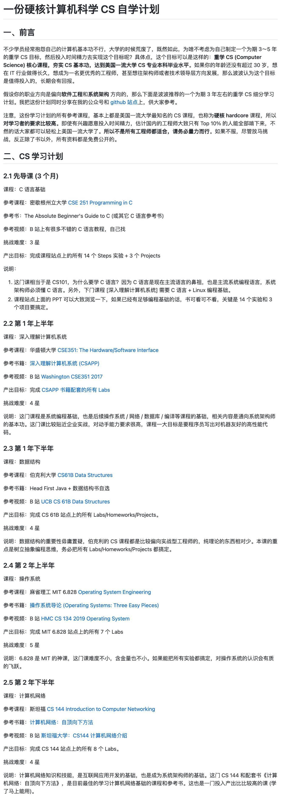
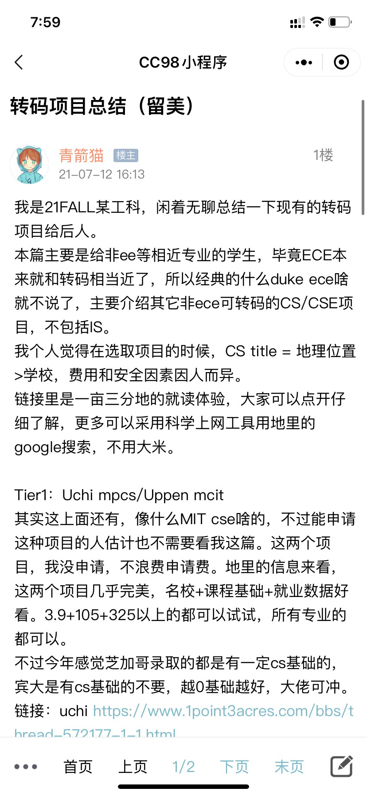
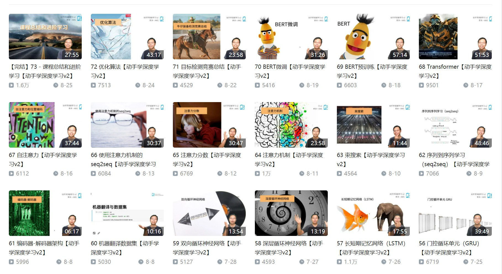
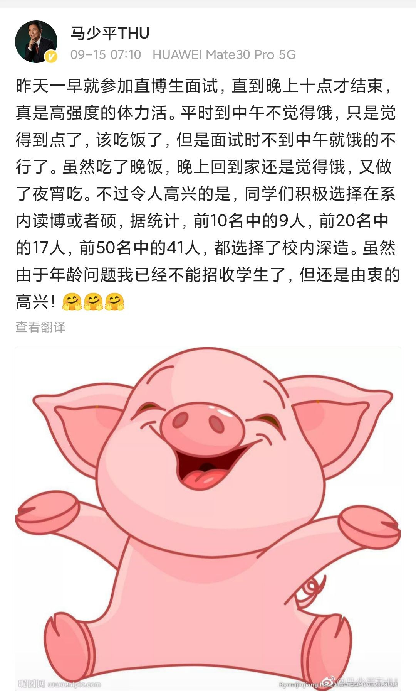
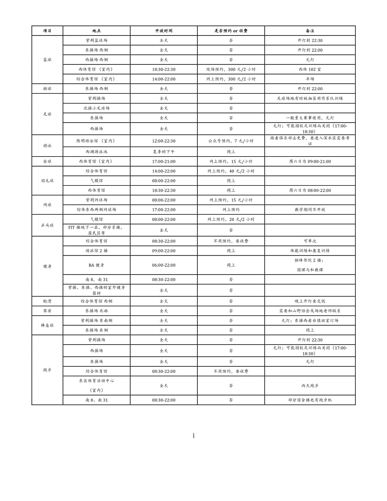
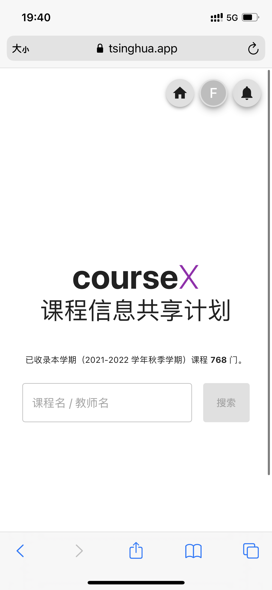
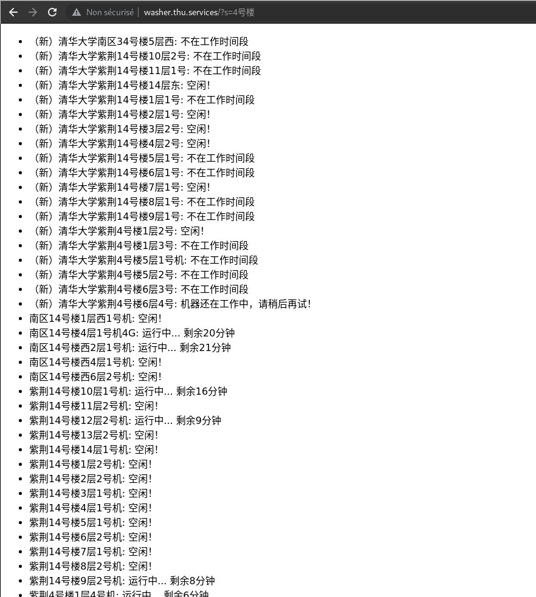
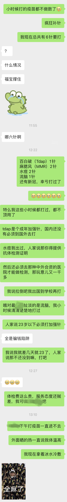
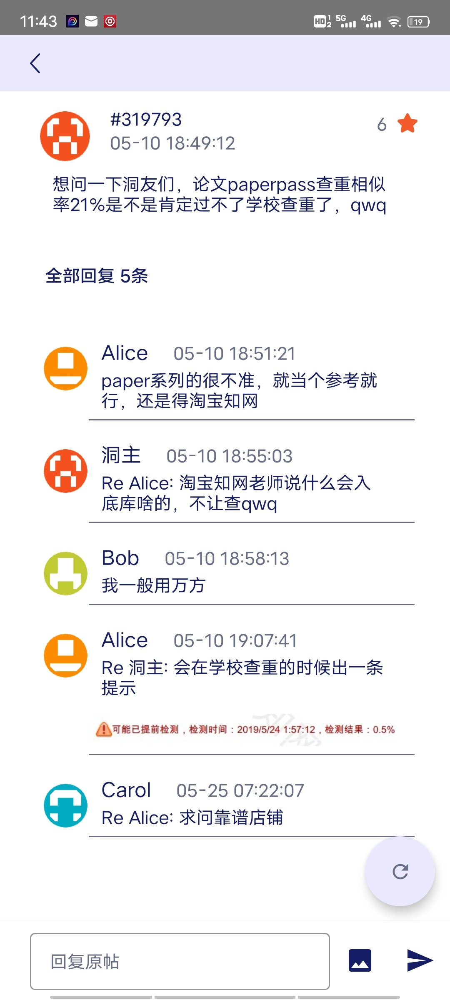
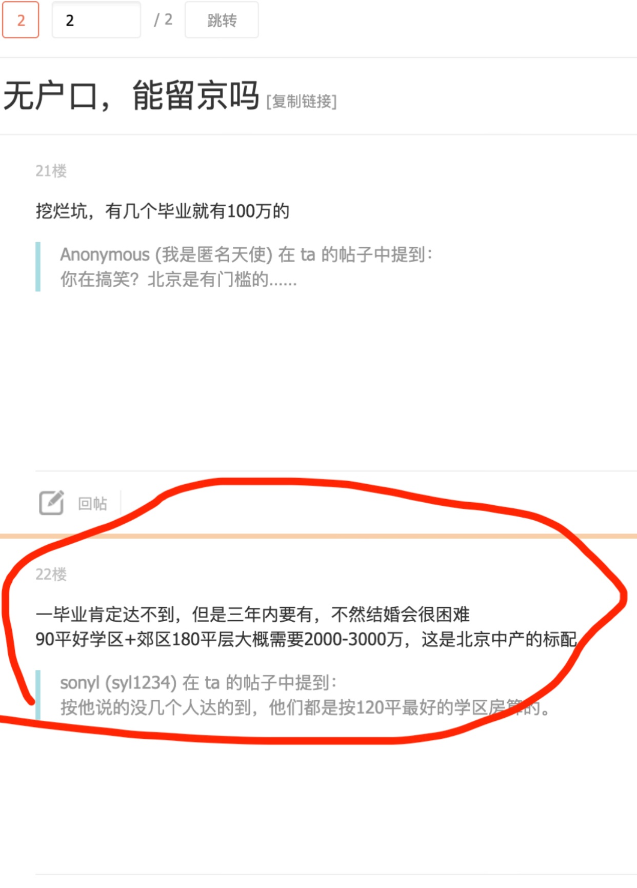

Result for "#精品"
dz觉得自己的观影量大约有近千部了，覆盖很多电影类型，看过很多小众但是精彩的电影。感觉自己身边的同学朋友们很少有喜欢看电影的，深深遗憾大家没有体会到电影艺术的美与魅力。想开个洞推荐电影（不过这几周还要忙考试，更新不会很快），尽量未来每周更新数量不定的电影，希望向大家引荐经典电影或者小众电影。同时也是对自己的这么多年观影的总结。不知道dym会不会感兴趣。
金融行业竞争力（侧重买方）
整理自www.zhihu.com/question/21645992/answer/2085972137及评论区。洞主自己在买方工作过并且有很多行业内朋友，女朋友是LP看过很多家的募资材料，感觉这个回答整体来说质量挺不错。欢迎各位有更多信息的人勘误、补充。
引言
买方机构分级常常十分混乱，很多二三线机构竟被人说成顶级机构，这搞得顶级投资机构也太多了。
分级标准：看最后作者的话，是综合主观的。
同等级情况下，PE的难进程度、薪资待遇、职业发展都超过VC。
PE分级
- 超一线PE（头部外资PE，个人觉得只有4家，黑石、凯雷、KKR、华平，刚毕业进去总年薪180万左右）（黑石Blackstone，CEO为苏世民，注意与BlackRock贝莱德区分）
- 一线PE（高瓴、春华、博裕、厚朴、方源，部分亚太PE和实力稍逊的全球PE，比如淡马锡、Advent、PAG等，刚毕业进去总年薪100万左右）
- 一线半PE（鼎晖、中信产、弘毅、腾讯战投，刚毕业进去总年薪40-70万左右。留言有人吐槽鼎晖弘毅没落，一线PE中厚朴业绩差之类的，所有因素我全部考虑到了，虽然没落了，但综合来看，还是可以排到一线半PE的水平，我是综合所有因素来排名的，只是有些东西没法加这么多解释，没法全部面面俱到)
- 二线PE（新天域、德弘、挚信、高盛直投，刚毕业进去总年薪30-70万左右，然后还有一些特殊的投资机构，比如中投，薪资待遇三线PE水平，行业地位超一线PE水平，难进程度和跳槽去向是1.5线PE水平，中投海外跳的比较好，综合判断为2线PE，为何专门说这个中投、国家社保基金之类的，因为这些机构被不懂行的人吹成是神级offer了，其实也就那样，除了中投，其他所有国家级机构都是三线强或者三线普通PE/VC，个别也有可能是4线PE/VC）
- 三线PE：中金资本，金石投资，景林投资，国开金融，光大控股，嘉御基金，华盖资本，建银国际，基石资本，正心谷资本，招商局资本等等，另外美团战投、字节战投、百度战投这些综合来看都算三线PE（刚毕业进去总年薪30-50万左右）
以上算是最顶级的PE，二线以下的三四线PE都比较一般了，大家谨慎入坑。数量多，三线PE随便划分的，四线PE不说了，避免得罪人。投资界马太效应比较严重，很多三四线PEVC机构的董事总经理/合伙人总年薪都不一定能超过200万。
TPG被我从超一线PE除名了，当时是考虑TPG要上市了，我想着就把上市的PE都列为超一线，但为了绝对的客观严谨，TPG的综合情况和薪资待遇确实和这4家有一些差距，所以除名了，但TPG还是比一线PE好的。
薪资待遇这块，针对有些人说第一年不一定能达到180万，补充，黑石华平最高，第一年确实有180万左右，KKR和凯雷第二年差不多也有了。黑石资深的Associate能达到45万美元左右。黑石2018年财报显示包括中后台全球所有员工2615人，平均奖金110万美元，只算最核心的投资前台估计平均奖金200万美元没问题，包括中后台员工平均薪酬912万人民币。华平的话VP公开报道的薪资待遇也达到了至少400万，超一线PE中个别D级别的还不是MD就基本全都在千万港币以上。有些机构是可以跟投的，跟投收益加上奖金是非常可观的，但中高层的薪资待遇网上没有任何相关的信息，我也不能坏了这个规矩，点到为止就好。
VC分级
- 超一线VC：红杉资本（红杉独一档，VC等级没PE那么明显，刚毕业总年薪在40-50万左右）
- 一线VC：DCM，GGV，斯道资本，五源资本（刚毕业总年薪在40-50万左右）
- 二线VC：兰馨亚洲，贝塔斯曼亚洲投资基金（BAI），金沙江创投，源码资本，深创投（刚毕业总年薪在20-40万左右，同等情况下，一般美元基金＞双币基金＞人民币基金，但也不能完全硬套这个标准，有些时候，人民币基金比美元基金更好也说不定）
- 三线VC：软银中国资本，同创伟业，德同资本，元禾控股，天图投资，澳银资本，复星锐正，创世伙伴资本，毅达资本，普华资本，永宣创投，国科嘉和，济峰资本等等（刚毕业总年薪在20-40万左右）
天使投资机构：
- 真格基金，创新工场（这两家算头部天使投资机构，换算到VC领域，约等于三线最强VC，刚毕业进去总年薪30万左右）
- 联想之星，蓝驰创投，险峰长青，英诺天使，梅花创投，九合创投（约等于三线普通VC或弱VC，刚毕业进去总年薪20-30万左右，包括真格创新工场在内的天使投资机构，想跳到头部的PEVC基本都得降级，比如董事总经理变成投资总监，VP变SA，虽然不好跳也跳的很少）
VC界简单列一些典型代表，每档只说三四家，四线VC不列。
薪资待遇每个VC都不一样，一二线VC的薪资从分析师到合伙人每个档次我都一清二楚，三线后的VC知道个大概，但涉及到一些隐私，不能说的太直白。
红杉的薪资待遇并不一定就高于一线VC，需要看奖金，绝大部分人拿不到，大都被合伙人拿了。
VC合伙人的薪资待遇也没大家想象中那么高，没有美元PE那么稳，我知道的好几个超一线美元PE的MD年薪超400万美元，年龄不到40岁，VC机构要拿到这么多carry难度很大。
一些小机构为了吸引清华北大的高素质人才，可能在前几年给出极高的薪酬。
战投分级
- 1.5线PE/VC：腾讯投资（title分内外两个称呼，内部有助理总经理、副总经理和总经理的划分，对外变成执行董事、董事总经理、合伙人，我看知乎有个讨论叫腾讯投资并购部与中金IBD选哪个？把腾讯投资并购部说的神乎其神，比中金IBD好是肯定的，但也别自己骗自己了，腾讯投资部在投资界撑死了就是1.5线PE的水平，薪资待遇和难进程度跟一线PE差距还是比较大的）
- 2线PE/VC：阿里投资、蚂蚁金服投资、高通创投（这3家高通人最少，不到10人，薪资稍微低一点，阿里和蚂蚁金服的投资主力是投资经理、副董事、投资总监这三个职级，投资总监基本就是最高职级了，对照P8，但这个职位比较特殊，阿里P8年薪一般是150-200万，如果是投资的P8不止这个数目，有250万的投资总监，也有350万的投资总监，需要看过往的履历情况）
- 3线PE/VC：壳牌投资、诺基亚成长基金、英特尔资本、百度投资、字节跳动投资、京东投资，京东数科投资、小米投资、360投资、美团投资、滴滴投资、拼多多投资、快手投资、普洛斯投资、国寿投资、华为哈勃投资、碧桂园创投，建银国际，招银国际，工银国际（这三个X银国际一般不算CVC，但有时也被定义为CVC，工银国际改名为鋆昊资本了，没改名前和他们那边的总裁沟通过，现在改名了不太清楚具体情况了。这些企业刚毕业进去总年薪普遍都是25-40万为主）
- 4线PE/VC：苏宁投资、TCL创投、新希望投资、北汽产投、58产业基金、富士康投资、大众中国、顺丰速运、喜马拉雅、B站、阳光保险集团、盛大集团、恒大高科技集团、商汤科技、新东方、阅文集团、OPPO（刚毕业进去总年薪普遍是20-30万之间为主）
作者的话
之前在咨询、投行、PE工作了10多年，目前已经不在。我目前在某外资头部LP之一，算是这些机构的投资人，很多机构的数据我全都有。
不要觉得有些人在顶级机构待过说的话就有道理，在顶级机构呆过分享能力却一塌糊涂的可不少，更重要的是看他的发言有没有道理。有些人觉得我是猎头，我特地解释一下，正因为我已经不在美元PE混了，我才能更客观的说这些东西。
在这个行业浸淫了很多年，我之前面试过很多人，也把职位交给猎头过，和几个猎头关系非常好，也有挺多在其他一线PEVC当到总监/MD/合伙人的朋友。最好的几个朋友，还是知道他们的薪资待遇的，所以我的数据是综合多方观点形成（自己的行业观察、面试观察、猎头交流、最好朋友的情况），同时我也看了知乎、微信群、论坛等等的相关讨论，基本能确保我的数据是万无一失的。我不能把一些东西说的太精确，因为有些会涉及到隐私，我得说的模糊一点。
我的观点很旗帜鲜明，不会说一些过于圆滑的套话，说太多和稀泥的话，只能是听君一席话如听一席话，我看其他答主很多都是答非所问，人家问哪个机构更好，直接来个都不错，两边都不得罪，这种回答没有意义，我没法照顾所有机构的面子，只能实话实说。
写这个排名的初衷不是为了搞鄙视链，也不是想出风头。我都快40了，该觉悟的也早就觉悟了。这行装逼的人确实不少，我个人非常不建议这样做，只能让人反感你而已。一毕业就进入凯雷桥水高盛这些机构，是什么所谓的一二线机构合伙人，外人眼中的大佬，和你我一点关系都没有，我也不会觉得这个人厉害。在投资界待个5年以上，就知道那些所谓的光环和title一文不值，也就只能唬一下没见过世面的人，赢得几声不值钱的大佬称赞而已，毫无意义。你眼中的头部机构合伙人上市公司副总裁也都是普通人，和你一样都是接受9年义务教育长大的，没任何稀奇的地方。我个人也非常不赞同搞这些什么鄙视链，并不是进了顶级机构就可以目空一切，顶级外资PE也没资格看不起三四线PE，大家都一样是做一份工作而已，只是机构确实有好坏之分，但鄙视链要不得，还是要谦逊。一切平常心对待就好，你内心觉得幸福最重要。
原贴的评论区是精华，我会整理成QA的形式慢慢更新在这个洞。
科研绘图工具汇总
如题。工具再怎么精通也要为表达内容服务，切忌舍本逐末。我的常用工具包括PPT、Excel、MATLAB、Python、Ps、Ai、LaTeX等，下文内容如有纰漏敬请指正。
数据处理
如果选择写代码，则主流的语言包括MATLAB，Python，R，Mathematica等，其中：MATLAB绘图的显著优势之一在于可以通过属性检查器以低代码的方式修改图窗；Python通常搭配Jupyter Notebook/Lab、VSCode、PyCharm、Spyder等编辑器/IDE使用（不得不说VSC现在支持的太多了）；R则搭配RStudio。
更进一步地，为什么不试试把文档、代码、图片整合到一起呢？MATLAB有live script，Python有notebook，R有Rmarkdown，MMA本身就是notebook，适当的配置就可以在一份文件里完成所有、优雅地导出一份实验报告。除此以外，Julia、Stata等工具在此不表。
如果不想写代码，Excel想必是大部分人的选择，Excel图表的原生主题虽然丑，但是可以自定义图表模板然后一键应用到其他图表上。Origin、SPSS等其次。Graphpad、Sigmaplot等没有使用过，故略。
流程图、思维导图
对于流程图，PPT、Visio可能是不少人电脑里的首选，Visio胜于PPT的地方在于其丰富的图形库。与之对应的是draw.io这个被相当多人推荐过、功能丝毫不逊色于Visio的网站。亿图可以说是Visio的国产高仿版，ProcessOn则是一个足够绘制简单流程图和思维导图的网站。至于思维导图，除却XMind、MindManager等老牌但付费的思维导图软件，还有GitMind、MarkMap、百度脑图、石墨文档、幕布等网站都支持在线甚至协同创作。
额外说一句，不少人都使用过功能丰富的Markdown编辑器Typora，还可以利用其内置的Mermaid语法绘制流程图等，具体可以参见帮助。
几何作图
Geogebra作为一个功能强大且免费的数学计算器，只用其来画图显然大材小用了。mathcha则是一个在线的数学面板编辑器，可以不使用LaTeX语法输入公式，绘制各种图表。几何画板、AxGlyph作为国产软件，虽然收费但也有不错的表现。除此以外，AutoCAD、Solidworks等身为工程制图软件，绘制严谨的几何图形也根本不在话下。
自由绘图
不得不再次提到这个几乎所有人电脑里都有却被小瞧了的软件——PPT，运行速度快、操作简单、功能丰富又不复杂，使得我能用PPT解决的事情绝不再启动其他软件。再就是Ps、Ai，绘图也逐渐由简洁性向艺术性过渡。3D建模本人了解与使用不多，故略。
上述都是所见即所得的交互式图形界面，舍弃了易用性但拥抱严谨性的绘图工具就必须提名LaTeX的TikZ宏包。不过我们没必要在TikZ中从0开始一笔一划作图，借助于其他工具即可实现其他软件与LaTeX及TikZ的互通：在上文的数据处理部分中，各种交互式的script都可以导出到LaTeX；matlab2tikz可以将MATLAB的图窗导出为TikZ；matplotlib可以改变设置以直接导出pgfplots；Geogebra和mathcha可以将几何图形导出为TikZ；Dia是一个可以交互式绘制流程图然后导出为TikZ的软件……
参考
去年全校课程测评的dz，毕业后发现本科的info账号居然还能用，遂又花了大概两个小时做了个2021春季学期选课测评，供学弟学妹们参考~


怒😡为什么只有马原测评没有毛概习概测评😡大二以上的同学们也是很需要这类资源的！
那dz开个毛概习概测评洞，上过课的同学可以把老师给分任务量发到这里✌
准备开一个系列洞，把dz最近探店的成果慢慢发出来，主要是一些比较出名的驻京办还有学校附近好吃的馆子，以后尽量保持一周一到两更的频率吧～先发个图镇楼
tag：美食洞（好像有人用过？） 那就美食探店洞吧hh


想对强基几乎每天都有的在洞里焦虑的大一学弟说，风物长宜放眼量。大一你们真的对自己的专业了解太少了，所以获得的信息全部来自于树洞、知乎等网络。但网络是网络。你觉得的“进了不喜欢的专业”，可能其实是“进了人们觉得不好的专业”。不可否认，这种专业确实薪资待遇可能不如计算机、经管等，但大一学的那点微积分线代真的不足以让你们真正了解自己的专业是做什么的。喜不喜欢，还得自己到了高年级亲自去做才是。
放心，来了清华只要你不是彻底摆烂，以后能够保证你有尊严地活着，北上广和互联网大厂并不是唯一的去处。要想清楚自己追求的是不是真的是薪资。要自己想，要慢慢想，别人的、网络上的建议可以听，但不能无脑听。大学往后的人生和中学不一样，不是说把人从第一名按顺序排到最后一名，人生意义的多寡关键在于你赋予了它什么意义。每个人的先天条件、个人爱好、家庭条件等等，对职业选择的影响是巨大的。
如果你想清楚了，你追求的真的只是钱，那也没关系。（这不是什么值得耻笑的事情）那么你也要知道，人出卖劳动力的时间并不只有毕业后那一两年，也就是说薪资并不只是毕业生光荣榜上写的那么多。人生不仅仅是毕业后那几年，人生要靠长期的自我奋斗，也要考虑到历史的进程（x）。如果你认为自己专业的薪资不让你满意，那你可以找机会去学你认为有前景的专业的课程。虽然强基本科没办法转专业，但你要想到，非强基的生化环材每年就没人毕业了吗？他们也都没有转呀。研究生阶段甚至是研究生毕业后，只要你有足够多的学习能力和努力，都能够转成功。只是当下，既来之则安之，可以为未来的转行做好规划，但焦虑是没有任何意义的。
以上，也只是一个学长的个人想法吧，不喜勿喷。
【生活幸福小技巧洞】11月22日版
根据个人经验补充，因为每个人在生活中的不同时刻感受都会不一样，最近状态有所改善，开此洞供大家共分享。
可以求一个北京西餐厅推荐吗~妈妈来北京出差想请她吃顿饭。期待是：
- 价格人均150-200，地点不限，最好在东边。
- 不需要特别名贵的食材，但希望口味比较正宗，不要太油腻（家里那边放醋比较多，如果带点酸的更好）
- 店面干净，风格温馨、愉快即可，座位不要太狭小拥挤
- 预计是周一到周五的某个晚上，最好不要太嘈杂~
（自己去过的或者在二外课/各种途径听说的都行！提前感谢！）
紫荆各层窗口：
1F：西饼糕点，港式烧腊，广东风味，淮扬风味，上海风味，东南亚风味，中式套餐，水果捞，烧仙草
2F：涮羊肉，小铁板，海南鸡饭，炒饭，炒菜，炖菜，花样主食，铁板，热荤酱肉，冷热饮
3F：酸菜鱼，东北大砂锅，炒菜，养生汤，蒸菜，素食，低脂低盐，主食粗粮，轻食，冷热饮
4F：川湘小吃，四川风味，湖南风味，麻辣烫，冷热饮，水果捞
给姐妹们来一份亲身体验版北京hpv九价疫苗预约攻略（钱能省则省）！（不过因为dz已经基本搞定了而后续这些预约途径可能还会有改变所以需要姐妹们自己关注后续了，不过目前短时间内应该不会有大变化）
曾经打过社区医院的主意但是清华这边校医院半年来估计都不会有了其他地区又大部分限制居住地，私立三针又太贵，最后还是单针预约搞定的。
1.首先不算太贵又最好约的当属“北京大学国际医院”，1298元疫苗费+300元服务费。工作日每天！早上7.00（2-3针）预约，9.00（首针预约），只要肯蹲抢都会有号，平时其他时间多看看还能捡漏。每一次都可以在这里约，自己算时间0月第一针，2月第二针，6月第三针。
2.不过到2-3针的时候可以关注“约苗”公众号，瀛海医院（目前有号不知道什么时候会不会断货）每周五下午16.00会放下周的号，目前只能约2or3针。1298元+25元服务费。
3.当然还有包三针的比较便宜的：“清华一附院”公众号或app每周五上午6.00放下周号，太难抢了；还有“小荷”app预约，每周二或周五（不一定，看库存）下午15.00放号，可以提前进去那个页面点订阅通知，有号的时候会提前10分钟通知，这个也特别难抢。
4.想自己搜索关注更多消息的也可以帮你指路：《小红书》app搜索“北京九价”有很多姐妹发布相关内容，或者 《北京本地宝》公众号左下角菜单查看“九价疫苗”最新信息。
感觉毕生经验都在这里了，希望能对姐妹们有所帮助！
已经工作一年的学长给大家科普一下国内五险一金、税、到手和税前的关系。有些大厂的流氓总包就不说了，太忽悠人。dz以税前收入40万为例，算一下最后一年到手能有多少，给大家参考一下。
1.税前收入
体制外公司喜欢说税前。税前收入=到手收入+五险一金+税。
2.五险一金
税前收入缴税前要先交五险一金。具体规则如下：把税前年收入÷12作为每个月的缴费基数，这里是400000/12≈33333.3元。注意每个地区都有缴费基数的上限，一般是当地平均工资3倍，北京的缴费基数上限是28221元。因为33333.3＞28221，所以会用28221作为缴费基数。五险一金包括公积金、医疗、养老、失业、工伤和生育。其中工伤和生育个人不用交。最垃圾的公司会在缴费基数上面做文章。
2.1公积金
公积金是五险一金大头。良心的企业(大部分大厂和体制内)一般是个人12%+公司12%的最高比例。如果按最高来算，公积金个人会交3334元，一年就是40008元。最低比例是个人5%+公司7%(据说华为按照最低的交）。公积金在买房还贷、租房的时候可以取出(租房最多每个月取1500)，所以几乎可以等同于现金。
2.2医疗+养老+工伤
医疗+养老+工伤是2%+8%+0.2%=10.2%，这三项一起一个月会扣除2878元，一年是34542元。
扣除公积金和五险一金后，税前40万还剩325450元。在这基础上进行扣税。
3.税
现在的算法都是按综合年收入扣税了。325450元扣除免税的5000×12=60000元，剩下265450元。对照税率表，扣税36000×3%+(144000－36000)×5%+(265450－144000)×20%=23210元，这就是全年扣税。可以看到五险一金，尤其是公积金缴纳越多越好，这样可以少缴税。
4.到手收入
体制内单位喜欢说不含公积金的到手收入。算一下到手收入多少吧：400000－40008－34542－23210=302240元。
5.总结
综上，税前40万差不多到手纯现金会有30万。至于大厂那种含签字费、股票、期权之类的算法，dz算不来，太复杂了，还要考虑到能不能持续拿钱/能不能顺利兑现的问题。dz倾向于把签字费不算进工资，把股票对半算，把期权当废纸。希望能帮到大家算清楚自己真实能握在手里的钱。
#补充小作业
dym都看到这里了，有兴趣可以算一下之前腾讯的总包，到底能有多少钱能进账，数据大家可以去之前的洞里翻。
以上！

感觉大家对食堂营业时间问的很多，为了方便大家查看，我在食在清华截了图，大家可以做一个参考（如果实际时间不一样，也请各位dy踊跃补充呀）


看到dym讨论校医院的大夫， 作为在园子里已经有五年的来油条。dz试图推荐一下态度十分好的责任心很强的医生给大家，同时贴出一些态度非常差劲的大夫给大家闭坑。
我是一个普通的大学物理助教 今天判完期中卷子有很多感慨 想和本科的学弟学妹们聊聊
看到有个孩子的卷子答的并不太理想，很多题目没能做出来。卷子最后ta写了句话：
对不起老师，助教，我不会做，不是你们教的不好，是我太笨了> <
那一瞬间我真的非常难过，鼻子一酸差点眼泪掉下来。我想起刚刚上大一时候不适应新环境，学习生活一团糟的样子，想起每次对着作业抓耳挠腮的夜晚，想起考试后别人的欢喜和我的失落。我可以体会ta面对的艰难处境，面对打击后内心的失落，甚至可能有些自卑、有些自我怀疑，因为我也曾有过这样struggling的日子。
我希望孩子们能相信自己。每个人的起点不同，经历的故事也不同，所以会在一开始的课程上体现如此大的参差。希望孩子们不要因此封闭自己，自我怀疑，你们都很棒，一直努力下去总会迎来光亮的。多和身边的同学老师交流学习，不要害怕迈出第一步。我也希望顺风顺水的孩子们能对他人多一些善意和支持，而不是排挤和倾轧。清华应该是一个温暖共进的大家庭，而不是你死我亡的修罗场，我们都应该为之努力。
peace~
首批入选清华大学优质通识课程建设计划课程名单公布如下：

【树洞文学奖】
获奖名单及索引
【回顾-序言】
从互联网诞生的那一天开始，书信的时代便潦草地落下了帷幕。我们的语言变得简短，也变得破碎。然后，我们也失去了作者的身份，成为匿名的洞主与回复者。但，在这里，在树洞里，是否还有那书信时代遗留的碎片，夹杂在信息洪流之中，等待着寻找的目光？
【说明】
由于入选篇目质量都很高，也不是特别多，所以不再进行投票，入选即获奖。在所有获得两次以上提名的内容中，筛去了非原创内容、求助倾诉类和需要折叠的内容，形成了下面的名单。按照被提名的先后顺序排列。本来做了一个文档，但好像不如这样更便于访问。为了让这个帖子不太长，每段文字只保留了一两行作为索引。
【树洞文学-红楼奖】：：散文、故事与诗
——以红楼之名，寻找那些细腻的文笔与真挚的情绪。
#204001
“2021年的第一个月将要过去或是已然过去，我总归是要做些什么或是不做什么。”
#92948
“我站在漆黑的夜空下，仿佛身处混沌之中，只剩下寒风刺痛刚洗净的皮肤，提醒我存在的真实。”
#190200
“小心翼翼端回去，厚厚的一层红油，北方人把馒头掰碎，丢进大碗里，馒头蘸酱配上肥而不腻的鲜鱼，能驱散一天一夜的严寒。”
#514521
“他抬起头，傍晚的时光，夜色已漫天，远处教学楼在夜幕里的剪影，路灯下看不清楚。”
#146480
“太阳晒得脑袋昏昏的，我心里想着这周末爷爷恐怕又要炒鱼香肉丝——那是他唯一学会的一道菜。”
#103714
“写了一句‘惟愿信笺可作灵槎，寄仙山，得以达诚申信’，是真的希望谢意能传达到。”
#519323
“红叶萧萧开关城，镜水涟涟凋荷塘。/ 辗转枕上不宜思，窈窕秋星不宜仰。"
#501610
“两年过去了，清青快餐的老爷爷老奶奶不见了踪影。”
#64569
故事：“而我依旧没见到她。”
#378108
故事：《画地图》
#50862
“我不敢承认的是，像帕慕克笔下的芙颂一样，你出现在我的城市里。”
#526522
“穿过小巷，/ 巷子里埋着窗户。/ 石板路咕嘟咕嘟，像冰面下破碎的气泡。”
#97074
“于是我拿起笔，在明与暗，冷与热之间，写下一首连接今天和明天的诗。”
#83449
“当时我在操场上躺了很久，四下无人，而后我搓搓冻僵的手离开。”
#322658
“只是记得当时疑惑担忧，害怕自己或许是被讨厌了，或许是脸上有东西或许是自己哪里不妥当。”
【树洞文学-横山奖】：：评论、机巧与整活
——树洞对横山。可以鞭辟入里，也可以玩世不恭，是树洞的精神。
#134588
😏
#517695
评小蘑菇：“想象击碎了，符号必定荡然无存。一切早已注定。”
#90917
“长路漫漫技科楼，阴风阵阵新水馆。/ 昨夜未眠今欲睡，焉头耷脑黑板前。”
#126111
⭐
在本洞中，我会公开我入学清华六年多以来拍摄的所有校园风光照，照片按四季分类整理打包在网盘中，树洞朋友们可以自由浏览、下载、使用、传播，同时使用权也开放给清华校内外所有朋友。这是我很久以来一直想做的事情，也是我思来想去得出的表达对园子的感情的最好方式。
链接：https://pan.baidu.com/s/1xCbqoZROQFM1Z3dlnXQLyg 密码:6sa3
特别说明几件注意事项：
- 本分享链接中的所有照片免费开放一切使用权，包括商用，使用者无需征得我的同意。（但请不要对其他摄影师的作品这么做，摄影师都非常看重版权保护，使用前请征得同意）
- 本人希望保持匿名，所以使用和传播时请勿署名。由于我在树洞和朋友圈零散发布过一部分图，所以一定会有人认出我，但希望你能不要说出我的名字。我谁也不是，我只是园子里曾经的一名学生。非常感谢。

#543809
心血来潮突然想写一个RUN国家分级，就当图一乐，只代表个人观点
Tier 0
瑞士
- 优点：极其优美的自然风光，超强的社保（大概月薪两三万RMB以下就有低保），欧洲心脏，高端就业机会在欧陆基本上也是最多，全球性外企在瑞士的Pay一般仅次于美国，教育，公民素质等等都没话说。
- 缺点：身份难拿，很难RUN。
Tier 1
美国
- 优点：全球独一档的薪水，人类灯塔，医疗，教育等方面都是世界霸主，工作机会也相当多。移民国家，自然风光也不错。
- 缺点：社保、贫富差距等方面在发达国家中算比较差的，而且社会略微不稳定，种族歧视，社会分裂，枪支暴力时有发生。身份政策不算很友好，拿到绿卡之前好比坐监。工作很难找，比如头部互联网企业，投四五十份简历可能才有两三个面试。留学的话学费也挺高。
Tier 2
瑞典：
- 优点：北欧世界闻名的超好福利，例如400天产假，免费教育，超长年假，具体就不用我说了。就业机会在北欧算是最好的，瑞典还是有不少挺发达的产业，没那么难就业。以KTH为代表的学校在世界范围内也是不错的。
- 缺点：北欧一贯的冷，寂寞，有些无聊，离家太远，税高发财机会较少。虽然瑞典人英语都很好，但如果想定居，瑞典语估计还是要学的。斯德哥尔摩的房价略高，可能跟北京差不多了。
荷兰：
- 优点：工作机会在欧洲算是较多的，主要是金融业之类的，身份政策极其友好，WLB、福利也是欧陆一贯的世界顶尖水平，非常适合躺。
- 缺点：离家远，发财机会少，入籍要会荷兰语。地方小，但比瑞典的话稍微好玩一点，因为荷兰位置极好，去德法也是随便去，可以看看足球，听听音乐会啥的。
日本：
- 优点：文化有吸引力，文化产业极其发达，能玩的东西相当多，服务业质量极高，自然风景也很不错。离中国近，没有疫情的话2个小时飞机，回国非常方便。日本的很多生活习惯比如饮食和文化都是跟国内相通的，不会有什么不适应的感觉。工作非常好找，绿卡非常容易拿。日语对中国人来说非常容易学，房价低。
- 缺点：WLB、福利比欧陆还是略差一点，但还是比较躺的。起薪比较低，很多需要熬年功混资历，但一般工作非常稳定，可以一直躺到退休。高等教育除了制造业工科，理科等，可能略显落后了。
德国：
- 优点：发达的制造业，WLB良好，就业机会尚可，买房不难，福利也较好，文化也是很有吸引力的，德甲、古典音乐会，气氛都不错。德国人英语一般都不错。
- 缺点：要学德语，其余方面都比较中庸，没有太明显的缺点。
Tier 3
加拿大：
- 优点：背靠美国，很多方面能向美国看齐，也能混到一些美国的产业。英语国家，不用多学一门语言。
- 缺点：冷，略显无聊，加拿大主要城市的房价也并不便宜了。
新加坡：
- 优点：亚洲文化，华人国家，文化容易适应。英语国家，不用多学一门语言。教育发达，产业单一，但互联网金融都还是不错的。以Shopee为代表的互联网公司的pay在全世界范围内看都是很高的。
- 缺点：地方太小，气候一般，没有什么可玩的，相当无聊。不入籍买不了组屋，房价相当高。
法国：
- 优点：玄学的浪漫之都？文化也挺有吸引力的。工作机会和收入跟德国差不多。
- 缺点：在欧洲算是治安相当差的，巴黎房价相当高，法国人英语大多不太好，不会法语的话可能很难玩。
Tier 4
澳大利亚：近年来身份政策收紧，地方略显无聊。
新西兰：产业单一，就业较难。
这两个国家如果是从事低端的护工，务农，其实还是不错的，有对应的特殊政策。
英国：身份政策不友好，非移民国家，产业也比较集中，如果是金融人上人可能可以去碰一碰，生活成本、房价都比较高，但伦敦还是一个非常有吸引力的城市，可能算是欧洲最有吸引力的城市了。
总结
以上都是个人观点，个人并不是很在意工作的收入，会更多地看重在这个国家生活是否“有趣”。
简单来说，瑞士因为难RUN，基本排除。
美国的路子大家应该都清楚了，CS转码RUN比较看脸看行情，卷的时候有找不到工作的风险，而且身份难熬。但是只要上岸，收益还是相当不错的。适合想改变人生，赚大钱，或者读PhD拿教职为人类做贡献等等的那种人。不太适合一心想要躺的人，因为美国还是有些卷的。
瑞典荷兰算是安逸的选择，这两个RUN的难度都不大，但稍显有些无聊。适合一心想躺，安安逸逸地度过一辈子的人。
日本很容易RUN，但相对没有那么安逸。不过作为交换，日本的生活个人觉得还是非常有趣的。适合对日本文化感兴趣的，想要离家近的，文化饮食接近的人。
德国算是个比较中庸的选择，个人了解的不是很多，但感觉还是比较不错的。
新加坡的话还是有一定压力的，适合不想要国内那么大的房价加班压力，但又想要赚钱的人。
加拿大RUN的人还是很多的，但dz个人不是很感兴趣，有点高不成低不就的感觉，想赚钱的话跟美国的pay还是差挺多的，想躺的话显然欧陆又更舒服，文化上也比较无聊，气候也一般。当然会有一些加拿大绿卡然后跳美国这样的操作的人，不过这种人不能算RUN加拿大，应该算在RUN美帝的里面吧。
法国去的人很少吧，我其实也不太了解。
澳洲去读书的人比较多，但留下的人还是比较少的。以前澳洲RUN了不少，但现在没那么好RUN了。
新西兰个人也不太推荐，感觉全方面不如荷兰德国。
英国的话挺难留的，一般说RUN英国的人也比较少，本身也不是对移民友好的国家。
除了欧美以外还有哪里能run？
#540814
随着石头一步步的倒手，石头的价格越来越贵，有些厂商发现卖石头可以赚钱所以开始大规模地买挖石头的机器来生产石头，市场上的石头越来越多，但是价格依旧在上涨，于是有些人开始大量囤积石头等着之后石头价格更高的时候再卖掉来赚更多的钱。
这时A想到了一个“天才”想法：现在石头价格100元，我有1000元，我再找B借1000元，按照现在价格上涨的速度再过一年石头价格翻番我就能赚到4000元，按照利息还B1100元，我就能获得接近200%的收益，真是稳赚不赔。为了让B放心，A向B承诺如果自己还不起钱就把自己买到的石头都送给B，这样B再把石头卖掉肯定也不会亏太多，于是B就放心地把钱借给了A。
然后B又想到了一个天才想法，他呼吁大家把钱都存在自己这里，然后再借给好多买石头的人，然后再把他们买到的石头都抵押在自己这里，这样他甚至不需要买卖石头，只需要把钱转手一下就行。
市场越来越火热，有些人甚至没什么钱但是也能纯靠借钱来买石头，这时有些存款的人不乐意了，他们觉得把自己的钱借给这些完全没有还款激励的人有点危险。
这时C又想到了一个天才的想法。他跟大众说：“只要你把钱存在我这里，我会把钱分散地投给很多个B，这样即使1个B出问题也没关系，还有很多其他的B可以支撑，于是大家就开开心心地把钱给了C。
这时，有个人说了句“这不就是个石头吗，根本就不值500”，然后大家开始担心未来石头价格不会继续上涨了，于是有人开始着急往外卖石头，石头价格开始暴跌，然后大家因为担心价格会继续跌下去纷纷开始卖，然后价格就断崖式下跌。
A发现自己还不起B的钱于是跑路了，这是B发现A抵押在他那里的石头根本卖不出去，于是B只好宣告破产。C发现自己投资的B全破产了，投资C的人到处追杀C
好多企业高价买到的石头挖掘机现在一文不值只能扔掉。
这就是金融危机
＃540773
我捡起一块石头，一块钱卖给A，A把它两块钱卖给B，……，最后Z获得了一块26元的石头并且还可以继续增值卖给AA，而从我到Y所有人均获得了一块钱，皆大欢喜。
（我初中时候的脑洞）
开一个中学教师求职的洞
供大家参考
洞主刚结束了在美国找第一个SDE实习的过程，趁我毕业没多久短期内戒不掉树洞，想在这里记录一下。
（如果有人认出了我请不要声张哈哈哈）
经历了这次经验，对在美国找工的时间线、刷题、海投/内推、白嫖OA、面试等方面有了大致的了解。我没有和已经工作的前辈们深入交流，眼光很有局限性，所以各位参考就好。
Overview
投了51份简历，目前总共收到15个online assessment (线上限时自己做题，简称OA)，其中4家简历没被筛掉有进入到技术面试的流程，最后拿了2个offer。
背景：无实习，只有很菜的科研经历和一看就非常水的project，在THU刚毕业的相关专业本科生中属于中位数
时间线：
6 月：开始刷题
7 月：开始海投简历
8 月：继续海投简历，人到美国刚下飞机，进行了第一场技术面试，华丽地挂了
9 月：认识了一些校友，开始有内推投简历，同时也积极参加学校的career fair，进行了多个面试，被亚麻捞，逐渐躺平
10月：把其他进行中的面试流程走完，accept了某个offer后彻底躺平
可以看出我投的简历数量以在美国全力找实习的人来说不算很多，因为被亚麻捞了就没有再投了。
今年是个挺不错的年份，亚麻捞了很多人，应该还会继续捞好一阵子，只要能把握机会就有了一个挺不错的实习去处。
（虽然一亩三分地有很多亚麻的伤痕文学，但亚麻据说intern还是值得去的）
我托福过112了啊好开心！
开个洞分享一下英语学渣从90提高到110+的经验，随缘提问回答~
推荐一些平常自己用电脑比较好用的工具/软件吧！欢迎洞友一起分享。
dz是电脑小白，感觉自己在工具上走了非常多弯路，平常也没有人教我，不管怎样，我的经验应该能给萌新们一点帮助，遂写下此洞。
随缘写没有分类，基本都是接受别人推荐+自己摸索的，如果有问题也感谢指出。
grammarly
用于检查自己的文档有无语法和拼写错误（英语），word插件，免费版够用，也有更高级的专业版，可以找人拼购
有道翻译
不用多说了吧（真挺好用的，截屏翻译
foxmail
对多个邮箱进行协同管理，上gmail不用挂梯子（手机可以用网易邮箱大师，同样不用梯子）
seafile
清华云盘自动备份+校园网内高速上传，好用
xmind
做思维导图，可以拿来整理思路或做可视化报告等
onenote
自动备份，自动保存，多端协同，做笔记很好用
LaTeX
排版系统，论文排版简便，写出来的公式模型也好看
福昕PDF编辑器
info软件资源可以下载，处理PDF比较方便（编辑页面、标记、备注等），重点是免费
endnote
文献管理软件，看论文写论文很好用，同样info下载使用是免费的
顺带一提info-软件资源-公共软件还有很多好东西，可以多翻翻，dz目前没用到多少
人在地铁，刚出环球影城，来整个测评吧，主要是各个主题园区的游乐项目内容和体验，排名按喜好程度分先后（本测评可能含有强烈的个人倾向）
1.变形金刚 dz不是变形金刚粉，但体验真的所有园区最好！首先霸天虎过山车，俩字，刺激！有很多倒立、大角度倾斜的地方，我上来第一个就玩的这个，差点给我早饭整出来QAQ但晚上快结束的时候又刷了一次，可能因为黑乎乎又没戴眼镜啥也看不见所以感觉好多了哈哈。然后火种争夺战，需要带眼镜的4D项目，所有相似项目里体感最逼真！强推！还有个大黄蜂转盘什么的，类似游乐园旋转木马，中间有个大黄蜂在逼逼叨，看起来不好玩就没去。最后变形金刚传奇现场，就是工作人员穿着大黄蜂、威震天机甲出来唠嗑拍照，看了会儿网红威震天，确实话唠哈哈哈。另外感觉这个园区里的工作人员相对非常热情，会跟你说特工你好特工再见之类的
2.哈利波特 dz铁杆哈迷，给他排第二纯属情怀，论体验真的不太行，一会儿吐槽。禁忌之旅，裸眼4D项目，感觉最好玩的是进去路上城堡里的各种陈设，全是彩蛋，项目的话毫无剧情，魁地奇摄魂怪蜘蛛蛇怪火龙密室大杂烩，不知道在干些啥，内心毫无波动只想大喊Expecto Patronum…以及画质也不太行，总有种眼镜没带好的感觉。但口嫌体正直的dz最后还是去二刷了，主要是第一次没带手机，第二次进去拍了拍路上的东西哈哈。鹰马飞行，室外过山车项目，也是路上很多彩蛋，然后上去之后，可能就十秒？就这？我凳子还没坐热呢就让下了？…………奥利凡德，抽一个幸运观众上去还原电影哈利买魔杖的情节，一般般吧。三强争霸赛、青蛙合唱团表演都不错，演员很卖力，值得一看，提前几分钟过去可以占前排，小程序有演出时间。入口有霍格沃茨特快，白天感觉列车长一直在旁边唠嗑拍照（不确定，反正路过了几次他都在）。晚上灯光秀，emmmmmm，非常一般，另外不建议7点一开始就去，很挤，而且限制行动路径，看灯光秀和玩项目、逛商店不互通，需要绕好远，可以八点多没人了坐旁边慢慢看，是一直在循环播放的。最后吐槽一下商店，除了蜂蜜公爵、猫头鹰邮递和餐厅，其他卖的都差不多，什么费尔奇没收品店里也是衣服、玩偶之类的，费尔奇没收这玩意儿？整个“死”点地图不行吗😅有种没有金刚钻还硬揽瓷器活的感觉…
3.未来水世界 水上特技表演，互动、特效很不错，就是背景声音有点大加上外国演员发音不清晰说话听不太清，其实dz没太看懂剧情，但看的很爽哈哈
4.侏罗纪 飞越侏罗纪，室外过山车项目，比霸天虎弱一些，还行吧，但感觉不太值排队时间。侏罗纪大冒险，室内裸眼4D项目，能看到各种恐龙在眼前，但dz没感觉特别惊险。奇遇迅猛龙，室内表演，注意这个项目是6点多结束，dz去晚了没看上，听说适合小朋友拍照什么的。
5.好莱坞 灯光摄影开拍，算是室内特技项目吧，先是张艺谋和斯皮尔伯格出来吧啦吧啦一顿，然后展示了一下雷电风暴着火之类的电影特效，体感一般。不可驯服，室内音乐剧（？）表演项目，和驯龙高手相关，没牙仔和别的龙看起来质感很好很逼真的样子，剧情很菜，音乐还挺好听，别的没啥记忆点了
6.小黄人 只去了神偷闹翻天，室内裸眼4D，前头有很多又臭又长的视频，要站着等很久，体验也一般，感觉有点浪费时间。萌转过山车，室内过山车项目，超萌漩涡，室内旋转木马项目，欢乐好声音，室内音乐演出，这几个都不是很感兴趣就没去。
7.功夫熊猫 神龙大侠之旅，室内漂流项目，就俩坡还都不陡，毫无激情，嗯。旋转武侠和灯影传奇都是室内旋转木马项目，没去。
花车巡游，只看了一小段，确实有点农家乐审美，不过演员都很有激情看着很欢乐哈哈。还有一些小的室外音乐演出之类，没仔细看，但见观众还挺high的。
项目总结
1.室外过山车并按刺激程度排序：霸天虎过山车、侏罗纪过山车、鹰马飞行
2.室内4D项目并按真实度排序：变形金刚火种争夺战（唯一需戴眼镜的）、侏罗纪大冒险、哈利波特禁忌之旅、小黄人神偷闹翻天
3.室外表演：未来水世界、花车巡游、三强争霸赛、青蛙合唱团和一些音乐演出
4.室内表演：奇遇迅猛龙、欢乐好声音、不可驯服、灯光摄影开拍
剩下基本都是室内旋转木马摇摇乐一类
一些有的没的
1.关于门票 今天属于平季日，官网原价528，飞猪各种优惠用下来480左右，没买优速通，感觉现在买普通票完全可以一天玩完所有想玩的项目并二刷个别项目
2.关于交通 去的时候4号线倒1号线，地铁上一个半小时左右，回来晚上9.03以后一号线只通一部分了，只能七号线回来，稍微多几站
3.关于时间和排队 dz从早上九点多到晚上九点多，玩了整整十二个小时。项目的平均排队时间十几二十分钟，最长的是侏罗纪的过山车（可能因为没那么刺激但也没那么水，所以玩的人最多）和奥利凡德（这个可能纯粹是因为慢吧），其他很多都不怎么需要排队，顺着线路走过去就能坐上，尤其是晚上七八点之后，霸天虎过山车从存包到下车取包只需要十几分钟哈哈
4.说下存包 需要存包的项目有三个，霸天虎过山车、侏罗纪过山车、哈利波特禁忌之旅，其中霸天虎必须把所有手机什么的都存了，进去有金属探测器，不合格会被打回去。哦对了存包柜是刷脸的，有点高级
5.关于吃饭 dz穷鬼一个，带了很多干粮（最后有的没吃完又背回来了），只买了几个网红小吃：烤火鸡腿75r，个人感觉又香又嫩，反正比大部分食堂的好吃。小黄人雪糕40r，很萌，和园区拍照很搭，香蕉味，眼珠子是麦丽素，口感还不错。黄油啤酒冰沙版50r，冰沙还行，不算很甜，奶盖有点腻
6.关于厕所 新园区，厕所设施很不错，有蹲坑有马桶有第三卫生间，自动冲水，坑位有纸和马桶垫，外面感应水龙头、洗手液、烘干机，但是，霍格沃茨城堡后面那个厕所，坑位贼少！女厕要排队！避雷！
先写这么多吧dz快下车了，大家有啥想了解的可以继续问
【资料共享洞】
（诅咒：只拿不吐的人品-100）
不用害羞，请大家随意分享吧，比如电子书、电影资源之类的，请在链接前面标注清楚资料名称～
（相信大家都学过这个道理：给你一个苹果，我有零个苹果，给你一条信息，我有两条信息。）🥳
有无朋友可以分享一些英语口语练习的语料素材？
我比较喜欢的素材在下面⬇️
链接：https://pan.baidu.com/s/1B7GLj55Ygnt8qckPv1jFsQ
提取码：YwL1
总结一下好用的自习地点（因为dz平时去的地方也不多，大家多多补充呀）
1.罗姆楼 氛围比较轻松，可以充电，有沙发，但一般抢不到沙发位置，可以刷夜
2.邺架轩 可以熬夜，学习气氛好，环境不戳，可以看书，有充电的地方
3.北馆 学习氛围好，很安静（但是dz觉得有点压抑）
4.有理咖 可以吃东西，看猫猫（店主养的），氛围比较轻松，但可能没那么安静
5.寝室（doge） 方便，可以躺在自己的小窝里,但是容易摸鱼
希望大家多多补充呀
#【树洞文学奖】
—— ——
一个个人的小小的尝试，以挽留那些稍纵即逝的文字。
【序言】
从互联网诞生的那一天开始，书信的时代便潦草地落下了帷幕。我们的语言变得简短，也变得破碎。然后，我们也失去了作者的身份，成为匿名的洞主与回复者。但，在这里，在树洞里，是否还有那书信时代遗留的碎片，夹杂在信息洪流之中，等待着寻找的目光？
【评选范围】
所有树洞中真挚的文字，可以是帖子，也可以是回复。但请不要推荐求助、倾诉类树洞，也不要涉及个人信息，以免给作者带来烦扰。
【评选方式】
在本洞下回复你推荐的树洞编号，有两个及以上推荐则入选。
截止到本周末，可以视情况而定。
然后会再发布一个投票洞，可能采用问卷星的方式。
最终评选出树洞文学奖。
【评选结果】
没有任何奖励。
（也没办法发奖qwq）
不知道能不能办成功诶..
希望多多提名！

#190200
开贴聊聊丁香的老碗鱼。
一口黑漆漆的大锅，开上大火，浓郁的酱汁、油脂、辣汁在锅里蒸腾着热气。舀一勺，从锅里捞出一条活蹦乱跳的肥鱼，将这条鱼卧在预先烫好的青菜上。再来一勺，给鱼和菜洗上一个暖洋洋的汤汁澡，随手抓一把香菜，“四十六号！几两？”小心翼翼端回去，厚厚的一层红油，北方人把馒头掰碎，丢进大碗里，馒头蘸酱配上肥而不腻的鲜鱼，能驱散一天一夜的严寒。
乌江老碗鱼多年来是丁香园的招牌窗口之一。一直都是两位师傅，胖大叔大约自2012或2013年以来就在负责煮鱼，慈祥阿姨来得比胖大叔稍晚一两年，负责点鱼、烫菜和刷卡。多年以来几乎没见过他们休息，节假日也总能见到他们。因为味道很经典，所以排队来吃鱼的同学很多，几条鱼一起下锅，就能听到旁边同学议论：这么多鱼，胖大叔能区分开吗？然而到最后端上来，大约总是不会认错的。当然，吃得次数多了，运气好也能遇见胖大叔认错的时候，这时只要你提出异议，胖大叔就会忙不迭地向你道歉，认错的鱼你可以拿走，再送你一块更大的。
一次清早大约四五点钟，我因为要去学驾照的缘故，呵欠连天地从宿舍出发。路过丁香南门，看到一辆很大的物流车，师傅们在卸货，货物是很大的、长条形的水袋，扎住口，袋里是正在游动的活鱼。我甚至大概能认识，很大很长的是草鱼，一看就很肥的是鲈鱼，全身是鳍的是罗非鱼……于是对这个窗口多了份敬重，为了同学们口中的这份新鲜，有很多人在默默地进行着人所不知的努力。
几年后我又回到丁香园，原来位于二号窗口的老碗鱼和三号窗口的成都冒菜合并了，鱼的种类也换了，不过师傅还是这两位，味道还是原来的味道。再看看我，发迹线后退了好多，因为吃鱼走形的身材也再没有恢复，多年以前和朋友们一起吃鱼聊着雄心壮志，多年以后和朋友们一起吃鱼论及一事无成，本想叹一句：“逝者如斯夫，不舍昼夜！”然而话到口中，就不由得变成了：“人最重要的是开心！”
说完，吃块鱼。
dz 93年老人，很喜欢树洞的自由氛围，来随便聊点什么。
先说经历，二字班某生化环材专业，挂过三科，留过一级。毕业后去做了几年程序员，感到自身学历、能力的局限，去年考研上岸母校信息学院某系。
那个年代，吃了小桥好多炸串，排过老清芬风味餐厅驰名的早餐包子，玩过人人，见过奶茶妹妹（应该是奶茶姐姐吧），上过闫浩的习题课，在这个园子收获了很多快乐和友谊，也面对过很多困难和痛苦。
那时候内卷这个概念还没有被发明，不过大家的普遍心态和今天并无本质差别。dz本人至今也未能完全摆脱焦虑，也经常觉得自己是不是年龄大了，会不会赶不上转码的末班车了。不过dz觉得自己目前还算热爱自己所要研究的东西，已经很幸福了。
我在这里希望宽慰一下为成绩、保研或其他事物而焦虑的洞友们，一次考试的成败、一门成绩的高低不见得说明什么。比如，若不是我挂科，失去了本系保研机会，我可能就在痛苦的道路上一条道走到黑了。我现在觉得做自己热爱的事业，真诚地拥抱自己的生活更加重要。毕竟人最重要的是开心。什么也不能阻止我们开心。
最后分享本科成绩单。那时候还是百分制呢。

最近看到山西暴雨非常心疼，dz最近去山西玩了一圈，非常喜欢，在此记录旅游路线（顺带了陕西），希望一切回复正常后，大家可以去山西看看呀

盘点北京深藏不漏的美食
欢迎大家补充
1天桥老金涮肉 在北天桥老胡同里 价格实惠


gsm在读，以下是结合近年来就业报告、学长姐反馈以及P大树洞童鞋目前的择校难度及意愿来评估，希望尽量做到客观。（金融硕士哈）
清北复交的项目需要具体到学院：
A+++：北大光华，清华经管（北京）前两者绝对的王牌项目，稳坐金融硕头把交椅，但就业目前看可能偏向一级、外资多一点。
A++： 上交高金（比较卡本，收了很多清北本，就业外资比较多，也是偏一级市场就业），清华五道口（就业有点偏体制，原本前身就是人民银行）
A1.5+: 清华经管深圳（实话实话感觉就业有下滑趋势，不过title还在，有去的同学也是这么感觉的）、北大汇丰（近年来上升趋势明显，国内二级市场就业比肩甚至超过光华、经管，感觉知乎被黑有点严重，但就业目前绝对国内前几，可参考最新总体及fintech就业报告，当时看了fintech的报告感觉真的很强。树洞口碑因为就业太好急速上升，如果管理得到改善并缩招考研，未来可突破A++）、复旦管院GMIM/DDIM（GMIM及与LBS合作的项目外资就业很好，MF项目偏一般）、复旦泛海（17年开始招生，目前也是相对较为卡本，喜欢收清北的学生，树洞一些想做一级的同学会在泛海和汇丰中纠结，今年选汇丰的更多，另外学院实在太年轻，学长学姐资源其实优劣势）
A+ 北大经院（有点排外，收了太多本院的人，就业氛围不是那么浓厚，整体偏佛系，就业没有汇丰强）、复旦管院MF及其它（外资就业一般需要去卷内资，总体就业没有前述两个项目好）
（北大国发目前因为已经全面取消硕士了，所以没有列，A+及以上项目均为顶级项目，几乎不会被卡简历，个人差异其实远大于学院差异了，也是最有机会进入到金融核心圈的）
A：A级说实话其实跟上面几个已经有一些差距了，并且是不小的差距：北大软微（其实发的是工学硕士，但因为有金融科技方向，也有同学会转金融，软微cs方向就业是非常不错的，但金融其实还差点意思）、上交安泰（搞学术的比较多）、人大财金（之前其实汉青就业是不错的，但现在汉青已经并入人大财金了，所以人气呈下滑趋势，至少很多P大的同学是不愿意去的，等待并入财金后的就业报告，之前汉青是可以放到A+类的）、复旦经院（真的看不懂，去年金砖考研扩招100人，导致生源质量严重下滑，之后的结果的就业的下滑，好在还有复旦的title。）
B级及以下其实基本是不算是中国顶尖的金融硕了，可能说点比较真实的，最top的岗位可能能去的人就寥寥无几甚至于没有了，真的没有办法，实在是太卷了。
B+：人大其他经管院系（经院、人大商院、人大苏州弱一点）（在北京清北人还是比较稳的，但是其实清北的金融硕就有200-300+，所以想找顶级就业依然艰难，最近搞那个北京户口政策里面没有人大也有点僵硬）、港中深（深高金）：（近些年来异军突起，因为不要保研名额，英语要求也低，招了很多成绩没那么好的985同学，但在深圳龙岗地理位置偏僻，在深圳被汇丰压制，回北方其实没啥人听过，所以就业不算那么亮眼）
B： 两财一贸（上财，中财，对外经贸）（其实也是分院系的，但金融相关院系太多，其中一所产出的金融相关硕士就不只200+，就业方差较大，头部投行基本已经看不到了（卷的好有机会，但看整体占比确实太少了），上财情况会更好一些，更多的也是是中颈部券商；大买更是不太可能，就业更偏向去银行，总行难度比较大，更多的是省分）
B-：浙大（经院、管院）、南大、中科大、国科大（经管学院有金融专硕，但生源太一般了，金融校友基础也没有）、武大、南开、中山、厦大等金融强势985（虽然都是很强势的985，但因地理位置问题，金融就业就是只有一线城市才有top就业机会，实习非常受限制，例如浙大、南大金融就业只能去上海等，导致就业其实是没有两财一贸好的（或者持平），所以很多只能选择省会城市就业）
C级及以下想要去券商前台岗位基本就没有机会了，就业大多数中后台岗位，或是省会城市金融分支机构，例如银行省份、保险及其他。其实不太建议选择此类以下的金融硕士，有点炮灰的感觉。
C+：西财/中南财大
C：其他985金融专硕
C-：其他211金融专硕
文章转自
https://www.zhihu.com/answer/2159091266
#508088
看到有同学问过冬的问题，在比较寒冷的地方生长+在北京待了好几年的南方男生来说说心得，仅有指导性思想，基本不涉及具体推荐
总结起来就是，特别注意裸露皮肤保暖，上下身衣服不用太厚
1.裸露皮肤保暖
对于直接接触皮肤的部分，低温空气的感受是很明显的，所以想要暖和出门骑车，特别需要乱七八糟的配件。理想状态是只露个眼睛，但一般不用这么夸张
实践来看手套+围巾+帽子+包住脚踝的厚袜子是必备！带着这些出门，就不会感觉冻到哪里去了。手套围巾帽子不需要太厚，普通羊毛/针织即可
如果还要升级的话，可以戴面罩、耳罩
2.上身
上身一般不需要超过三件，透气层+保暖层+防风层
透气层：轻薄保暖内衣（比如优衣库的那种，轻薄的就可以），千万不要按南方室内的习惯穿那种特别厚的加绒保暖内衣！！！室内会热死的
保暖层：不大冷就穿普通长袖衬衫，比较冷就穿针织衫/卫衣
防风层：冲锋衣/带扣风衣/双面绒大衣/长短款羽绒服均可，本质上是一层透气性较差的保护层，最廉价的聚酯纤维层面料都行。实测羽绒服通常会太热太笨重，穿件毛呢大衣足够应付99%天气
当然实践中也有不少同学简化成单件长袖+厚羽绒服，多见于北方同学，相当于把保暖防风层合并了，也是可以的
3.下身
下身一般是两件，透气+防风保暖，轻薄保暖内衣+面料略厚实一点的裤子即可；只要秋裤扎在袜子里，下身是不会多冷的
另外，由于北方冬天湿度极低，不建议静电敏感的同学穿羊毛制品，不然就是一个移动的大号电容器…
南方孩子有被冷到，男生，想买一条风衣+羽绒服过冬，外加各种我不知道的御寒用品。能推荐牌子吗，预算2k左右（我也不知道是多了还是少了）
有学长学姐愿意讲一讲六、七年前的清华生活吗
有没有xdjm一起来交流护肤心得
自我介绍下
我是油皮，偶尔长痘，肤色黄二白，不太容易过敏
盘点一下自己用过的产品
- 洁面长期使用freeplus，真的好用唯一不好的就是用了3年了已经用腻了，接下来尝试下sk2洁面
- 水用过雅漾大喷，ahc，菌菇水，金盏花水，基本上都是无功无过（除了ahc我不太喜欢他的味道
- 乳液用过倩碧黄油，就一般吧，没有啥功效，也感受不到保湿，肤感还行是因为添加了硅，还用过理肤泉的mat和贝德玛的净妍，控油效果一流，深受油皮困扰的xdjm可以一试
- 精华可多着，需要分段
olay小白瓶，刚用真的很有用，身边的人都说我变白了很多，不过用久了就没用了（两种我都用过了
purid2号精华，吸收（挥发）的很快，使用感受好，但由于我不怎么发炎，也没效果
the o用过杜鹃花酸、咖啡因和烟酰胺，有人感兴趣我再细说
天露芬的提亮精华，比较小众，油皮慎入
murad祛痘，好像有一些用处但是开封后很快会变黄，没用完
大创胎盘素美白，没用 - 面霜， 珂润很润，科颜氏清爽油皮真爱，用过很久启初，油了点但是保湿巨无敌厉害，适合晚上用，悦木之源咖啡因，用着还行
开一个外卖洞，点外卖实在太难了！以防自己记不清了
评价主观，喜欢辣，口味相似的uu快给我推荐
评价依次是：yyds，（一些夸赞），还可以，一般，no
——————————————
欢喜粥铺：yyds，小笼包油条粥豆浆，温暖早餐理想型
头一号：同上，糖油饼yyds
邻家小馆：no
——————————————
李先生：香辣牛肉面，白切鸡，曾经的牛肉汤很好喝但是不卖了
和府捞面：面条随便点，都好吃
好这口重庆小面：no
喜公子：no
蜀一数二：肥肠粉yyds，中辣很爽
付小姐在成都：琅琊土豆还可以，面、串串香、冒鸭血都no
秦云老太婆摊摊面：no
蜀影记手工冰粉：面no，油条包麻糍no，冰粉个人实在不喜欢
翠清酒家：小炒肉又辣又香，肉汤泡饭很难吃no
鱼籽饭：一般
鳗鳗的爱：还可以
湘香小厨：no，还完全不辣
麦当劳：麦满分yyds，辣腿汉堡最近退步了
汉堡王早餐：完全无法与麦满分比较
tegg42滑蛋吐司：no
——————————————
管氏翅吧：附近吃过最好吃的烧烤，但炒饭很不好吃
辣尚烧烤：还可以，爆炒花甲蛮好吃
望京小腰：no
——————————————
港记甜品和鲜芋仙：还可以，不要点杯装的任何东西
小气茶：蓝莓奶昔yyds
椰奶清补凉：一般
爸爸糖：还可以，只吃过招牌奶酥吐司，份量太大了，没有好吃到能吃完，一半就不错了
7cake：奶油非常假，no
关于二外学习的一些思考，兼论英语学习
潜水树洞很久，在这里得到了很多别人的经验分享~dz托福115+，学习欧洲某外语也已经两年多了（怕被认出来，具体语种求匿），虽然还没准备好考证书但经过很多努力和各种弯路现在已经能看一些不太难的原版书，学习方法偏传统，有一些思考分享给其他想学二外的同学，欢迎提出不同意见
适用欧洲（和英语有一定相似的）小语种；死语言可能会更侧重语法，不一定适用；日韩不了解。针对已经想好了要学的同学，不解决“为什么要学”之类的问题
#奖学金
想给八九零字班学弟学妹们提供一点小小的申奖学金的经验，希望能帮到那些担心自己申不上而没申，后来发现有遗憾的小同学；）但院系情况各异，仅供参考，坐标工科院系，一个年级不超过200人。
0. 申请只看上一学年，成绩，社工都是！不要纠结比如大一我做得不好，大二做好了也申不了，没这回事，自信点！**大原则就是！不申白不申！**申了没中不罚款！怎么都要试一试！有自信！奖学金不都看学习成绩，奖学金不是卷王的专利
- 综合奖学金。说是综合优秀啦，但肯定还是要成绩好。成绩前10%可以大胆申，别犹豫！前30%如果有什么特别突出的，也大胆申，申不上也不罚款对不！大二（上学年大一）就讲自己学习好，如果有点别的比如小社工或者小特长、文艺、竞赛之类的也很好！大三可以多讲讲社工、竞赛、科研之类的！大四工科院系就讲科研吧！这个额度一般在8k往上，最高可能有15k！最终获奖率大概10%。
- 学业优秀奖。既然是学业优秀，那成绩肯定要好。但是有的小同学说，哎呀没有前10是不是就不好。不是的！按照经验学业的覆盖率可以到30%左右！所以排名前1/3都大胆申！说不定前面有不愿意申的就捡漏了是不是！以及如果进步了1/6甚至更高，也可以申！学业优秀奖是额度最高的单项奖，3-5k左右，听说还有6k的！
- 社工优秀奖。这种单项奖，和成绩一点关系都！没！有！做了就大胆申！（校学生会科协副主席校团委组长，院学生会科协主席团委副书记，校学生会科协部长校团委副组长，院学生会科协副主席部长团委组长，社团协会会长，班级三架马车，社团协会副会长部长，其他班委，以及所有学生组织干事）都可以算！往上写，大胆申！这个覆盖面最高，门槛也低，额度大概1k-2k，听说有3k的！
- 科创优秀奖。这个单项一般跟科研关系大一些，不知道文科院系有没有。（第一作者、共一作者、共同作者发表的论文、会议、专利，各级“挑战杯”获奖，学推计划，“大创”“北创”“国创”，SRT，暑研、助研项目，各类科技赛事获奖比如结构大赛美赛丘成桐什么的）都可以！可能有SRT未结项或者助研没有成果的，没关系，还是那句话，申！这个额度比较高，2k左右。
- 志愿、实践优秀奖。这个也是字面意思啦，做过志愿的有工时记录的，做过实践的有支队出行的，大胆申！当然做过比较多志愿比如有三星四星五星志愿者就最好啦，或者实践是支队长、实践支队获奖，也最好啦！这个额度一般1k，也偶有2k。
- 文艺、体育优秀奖。（代表学校参与重要演出、重要比赛并获得好成绩，艺术团、体育代表队成员，有多次校内文艺演出、体育比赛成绩或经历，在系队承担一定职务或为院系获得马杯积分，在校内书法、摄影、兴趣类体育比赛中获奖，在学生节有优秀的文艺作品，带领班级取得系内体育赛事成绩等）都可以申请！这个额度一般1k，有2k或更高。
- 奖学金这种事情，往小了说拿点小钱钱请好友撮一顿要是有个5k还等于免费上学是不，往大了说给简历添点光，千万不要怕写点申请材料，怕麻烦就不申喔！
- 如果说往年没成功担心的，也不怕！每年的覆盖率都会尽可能高的！如果有执念，可以按着上面说的那些规划自己剩余的大学生活。但是，不要被规则限定，上面的这些以外，仍然处处有美好！你能活出自己最舒服的样子！
- 每个人最多拿两个奖噢！祝大家顺利！有问题可以留言！
整理了近期讨论。标签：推荐，名额，推研，资格。
今年时间线：9.22院系上报学校教务，9.23/24上报教育部。9.30确认拟录取结果。以上时间线只针对清华有效。
#487006 有关能否两条腿走路：即一边保研一边出国。答案是不能，除非你想gap。
#487253 有关能否拿着名额捡漏
#488319 放弃名额顺延规定
#489844 雷系学子争取保研名额
#491326 无offer有名额你会放弃嘛
#491700 24号获得推荐名额
#493565 资格和名额的差别
#494571 学院不按照排名递补名额，而是定向给了某同学
#494812 学弟学妹灵魂提问，资格和名额的差别
#495313 令人不适的yygq前面有名额不用的人
#496727 不放弃名额但是仍然想出国
#496807 投票洞，“不打算用还不放弃”，你怎么看？
#496814 诅咒“不打算用还不放弃”的同学洞
#497534 学长劝说早点准备
#497678 学长总结部分信息
#497730 名额信息总结
#499184 法学院的争议性名额分配操作
给文科大类的同学开个出国申请答疑楼。欢迎大家提问，希望有经验的海外同学们来回答。请大家注意，这里是树洞，不是跟你签好协议的中介机构，任何信息都无法辨认真伪，对你的判断产生的任何影响也没有人会负责。即使是真实经验也未必能套用在每个人身上。
给打算在国内读研且依旧读本专业的九字班及以后的工科同学的建议：如果在大三快结束时，发现自己的成绩在前30%，全力专心准备推本系；如果在30%—45%，全力准备推本系的同时，应该找个退路，去报名1~2个外系或外校的夏令营和预推免，拿下至少一个名额；如果在45%—55%，必须要报至少2个外校，最好夏令营就拿下拟录offer；如果在55%——65%，也得先报个外校，跟他们说你能拿到推免名额，争取拿下拟录取，但一定要提前想好若没拿到清华的推免名额的planB，并提前有计划地准备；如果在65%—75%，尽早想好并准备没有推研名额的打算，但可以先报个外校夏令营，清华的一般都给入营，哪怕去旅游玩玩呢；75%之后，趁早准备出路吧
欢迎dym指正
dy们一人说一个觉得食堂最好吃的东西与地点～
请各位今年推研的同学留下以下信息
院系-年级总人数-推荐名额数，越精确越好
例：贵 125左右 240
给想入门机器学习又喜欢动手实践的洞友们推荐李沐的动手学深度学习课程，沐神的那本书洞友们应该听说过，这个课是基于pytorch框架重新录的中文版，包括：深度学习基础，卷积神经网络，计算机视觉，循环神经网络，注意力机制五个部分。代码详尽，对于初学者十分友好，dz自己跟着学完收获很大。
B站搜：跟李沐学AI，或者访问课程主页：https://courses.d2l.ai/zh-v2/


北京郊区有小众的景点吗？
潭拓寺这种的
画大饼万能语录:
1.我们每次吵架我都会特别自责，宝宝你知道吗，我不想你带着情绪过夜，这样情绪会把你推的越来越远，我不要这样我不想你离开我，我希望你可以多爱我一点，我不想因为一点点小问题就让我们的感情产生隔阂。
2.现在真的好焦虑 想一些有的没有的 我觉得我自己离开你好像就被抽去了开心 我觉得我被这段感情支配了 我真的离不开你我的宝宝 可不可以多爱我一点 我好需要你对我的爱
3.宝宝我们在一起越久 就越感觉我们的感情来之不易就越想好好珍惜我的男人就越想和你有个好的结局等和你见父母的时候我就大大方方的拉着你的手和他们说我没有选错人亲爱的你真的是我见过工作最有上进心最努力的男孩子
4.亲爱的是我平时对你期望太高了!总觉得像你这么棒的人 肯定能做的更好的 却忘了你偶尔也会有累的时候 我以后一定更温柔的对你 你累的时候我就安抚你 等你好起来我们一起往前走 我们会一直支持陪伴对方的对不对
5.但我希望我可以是你遇到困难第一个想倾诉的人遇到快乐第一个想要分享的人遇到挫折第一个想依靠的人我可以是你今生的那一个陪伴到老的人不想太成熟我会和你吵架但不会离开你会故意气你
6.老公，在一起越久越能感觉到你的不容易，让我觉得自己很幸福，能有这么好的一个体贴的男人，想到你一直在努力的工作，从在一起到现在从来没有让我吃苦，都是尽力给我你能做到的，你是我见过最温柔最深情最好的男人
7.你昨晚应该也没有睡好吧，超心疼你宝贝，以后不要跟自己过不去了，别钻牛角尖我很爱你，别再去质疑我的爱，我睡不好没关系，不能影响你呀，毕竟你还要为了你的小女朋友以后的幸福健身自律呢
8.我想要我们吃饭 散步 聊天 一起游戏 合影 淋雨说明天见 最后再加一条 要特别特别相爱。
9.虽然每天都道晚安 可是我还是觉得很幸福 每天都有你温柔的结束我一天的疲惫我真的超踏实的 谢谢你这么温柔这么耐心呀 也谢谢你这么爱我嘻嘻
10.没关系你可以和我分享快乐也可以和我抱怨委屈 我都听着 我们是一伙的 我永远站在你这边。
11.异地恋真的很难，因为隔着屏幕，太多情绪表达不清，就会产生很多误会，很多时候吵架或者不开心，根源只是因为见不到，很容易乱想，我每天晚上睡不着的时候脑子里都是在想你
12.你知不知道我想和你有个很长久的未来我很想肆无忌惮的喜欢你 很想每天看见你很想打开手机就能看到你的消息很想得到所有关于我们的祝福很想和你牵手走到最后虽然我不是你第一个喜欢的不是你第一个拥抱牵手的
13.宝贝 在一起越久 就越感觉我们的感情来之不易 就越想好好珍惜我的男人 越想和你有一个好的结局 等和你一起见父母的时候 我就大大方方的拉着你的手和他们说 你们看 我真的没有选错人呢
14.亲爱的你每天工作的好辛苦。谢谢你为我们的以后这么努力我真的好感动好爱你。我以后要让你每天一回到家就吃上热腾腾的饭菜。一定要温柔贤惠的在家等你回来。然后给你个爱的抱抱
15.亲爱的你真的是我见过工作最有上进心最努力的男孩子呢！你已经百分之百超过我认识的同龄男生啦！！我相信你现在付出的努力早晚都会看到成果的！
16.我觉得互相喜欢是一件极其难得的事情，比俩个人在这偌大的世界能遇见还难得，而每个人都有每个人的优劣之处，比起分开造成的痛苦我更愿意花时间与你一起磨合
17.宝贝，我觉得是我平时太过于小孩子脾气了都是你去迁就我，我突然意识到你爱我已经到了骨子里。我觉得两个人生活在一起真的很不容易，而且相互喜欢的两个人在一起更不容易。
18.你知不知道我想和你有个很长久的未来我很想肆 无忌禅的喜欢你很想每天看见你很想打开手机就 能看到你的消息很想得到所有关于我们祝福很想 和你牵手走到最后虽然我不是你第一个喜欢的不 是你第一个牵手拥抱的人但我希望我可以是你遇 到困难第一个想倾诉的人遇到快乐第一个想要分 享的人遇到挫折第一个想依靠的人我可以是你今 生的那一个陪伴到老的人不想太成熟我会和你吵 架但不会离开你会故意气你我会粘着你死缠烂打 的那种我会管着你但不想有机会失去你我会口是 心非但希望你能看透我的心我生气也好冷漠也好 发疯也罢只能证明我想对你说三个字我爱你
19.我们的恋爱有些太仓促，我承认在一起的时候没有考虑清楚，在一起这么段时间还是觉得更适合做朋友。我们就这样吧，希望会有人比我更喜欢你
20.遇见一个真心喜欢的人不容易 两个人在一起更不容易 缺点可以改 性格可以磨合 错过了就真的没有了 所以希望我们以后的路能彼此珍惜 相互理解 我也不知道我们能走多远 但是只要你不放手 我就会一直陪着你
21.异地恋真的很难，因为隔着屏幕，太多情绪表达不清楚，就会产生好多误会，很多时候吵架或者不开心，根源只是因为见不到。我疑心病重，很容易乱想，我每天晚上睡不着的时候脑子里都是在想你。
22.但我希望我可以是你到困难第一个想倾诉的人遇到快乐第一个想享的人遇到挫折第一个想依靠的人我可以是你生的那一个陪伴到老的人不想太成熟我会和你吵架但不会离开你会故意气你我会粘着你死缠烂打的那种我会管着你
23.我会永远永远爱你,我知道你赚钱辛苦，工作不容易,你别担心以后那些让你感到难过孤独的路也都一定有我陪伴着,要知道不管你什么样我都会一直爱你的
24.宝贝，是我平时对你期望太高了！总是觉得像你这么棒的人肯定能做的更好的，却忘了你偶尔也会有累的时候。我以后一定要更温柔的对待你。你累的时候我就安抚好你的情绪。等你好起来了我再跟你一起往前走。我们一定会一直支持陪伴对方的对不对
25.宝，你是我遇见的所有美好里的刚刚好我最期盼的，是时光还在，你还在你看，这么多人，这么大的世界，你我相苦尽甘来，所以你来了。好东西我喜欢和别人分享，唯独你，是我一个人的。不管我去了哪里，做了什么，遇见了什么人，我都只喜欢你。一直在一起吧，无论何时。来日方长，你要的感动和爱我都会慢慢给你。我要把温柔和可爱藏起来，全部留给你。山野千里，你是我藏在星星里的浪漫。我喜欢看你笑，又有点怕看见你笑，因为我的心一直扑通扑通的在跳。感谢万有引力将我拉向你你眼中的春和秋，胜过我见过爱过的一切山川与河流时间很短，天涯很远。
想要清华ppt模版但不想集赞，有咩有好心人收到了共享一下？
一个GRE速成资料推荐洞：
dz英语水平普通，开学前大概十五到二十天开始认真准备GRE，在此之前只背了一遍某背词软件3000词（事实证明后来名词全忘光了），在大概最后十天是完全只准备GRE别的都没干的前提下，个人认为十五到二十天出分是足够的。以下是dz最后觉得好用的资料（全部都是免费网上可以找到的，dz没买过单词书，也没有去听网课）
1.镇考机经词，比起其他单词书非常短，应该是1500词左右，而且有同义词，反义词的辨析，基本上没什么奇怪的名词了，背起来比较有迹可循
2.等价词汇总，上面那个的再精简版，六选二神器
3.任意一本什么三千词两千词的都可以，反正早期的时候过一两遍有个印象。个人感觉用户体验比较好的是皇冠GRE的一个小程序“抖词G版”，一个是词少，另一个是有例句同义词沙雕插图啥的，总之就是背起来没那么劝退（dz是个菜狗呜呜）。这种词书的另一个意义就是做题实在刷不动的时候调剂一下心情，以上两本类似于考前抱佛脚的个人认为考前十天左右再开始即可。
4.机经题，同上，因为当时皇冠那个资料白嫖的时候不麻烦，不用什么乱七八糟的朋友圈啥玩意的，所以dz的填词和阅读也都是用的皇冠的1300+300，但后面有大概瞟过一眼，至少跟张巍的机经题几乎是完全一样的，所以找到一份有详细解析的都差不多，皇冠的主要是有分题型，所以可以刷六选二一口气刷到爽（x），最后考场上我应该是至少做到了四题原题。dz觉得最最最重要的一点是一定要以刷代背，感觉单词书背五遍应该是没有做题遇到过一遍来的记忆深。题刷多了再去背上述资料1就不会有那种陌生的感觉了。阅读dz没有特别的体会，感觉是要读懂，读得快一般就能做得不错。
5.写作dz就用了《王老师issue解析题库》和《王老师argument解析题库》，有全部题目加提纲（今年题库貌似补了几个新题，考前一晚看一下），可以花两三天从头到尾过一遍，它有讲些套路啥的。
最后求生欲一下，dz水平很一般，成绩也就是追求个过线的水平，最后反正比325高了一点，以上资料仅仅适用于时间紧想要速成过线的同学（比如最近想要紧急出国的八字班），大佬就把我当个屁放了吧orz祝大家中秋节快乐（鞠躬！）
北京人来给学弟学妹写一些关于天气、穿衣的建议（最近有很多南方的学弟学妹来问dz，就一并写个总结好了）
dz是北京男生，以下有关气温的总结是基于20年的生活经验得出的，没有经过统计学检验，但是总体上还是比较准的。另外男女生体质有差别，dz说的可能更适合男生一点
就按一学年的时间顺序好了，首先，八月的北京是非常闷热的，湿度大也热，但是到了九月初开学前后会有非常明显的转变——虽然温度高但天气会转晴、湿度显著降低，日照时间非常长。所以在开学初期，气温仍然会比较高，且这一段时间非常需要防晒！
九月整体气温比较舒适，，变化相对平稳，就算下秋雨也不会剧烈下降，整个九月最高温一般会从30℃降到26℃，低温从20℃降到15℃。全月可穿短袖，月底不建议短裤，不建议彻夜空调。
然而，每年十一（划重点）都会有一波非常剧烈的降温，通常伴随强降雨，持续两到三天，气温会骤降到十度出头（每年如此，因为dz小时候不注意增减衣物老在这时候发烧），不管前几天多热（有印象19年10月3日最高30°，然而第二天就10°了）。十一假期都会剧烈降温，小伙伴们一定要注意增减衣物，小心感冒。但是有意思的是，一般过了十月上旬，北京的气温会再次趋于平稳，甚至小幅反弹（直到十月底），一般来讲，十月中旬到十月底最高温会稳定在15°左右，低温在5-10°，晴天居多，空气会比较干燥。不用太担心剧烈降温（dz甚至十月底还穿过短袖上体育课，这几个礼拜身体会适应寒冷，反而觉得没有十一期间寒冷），但要做好皮肤保水。
十一月初气温稳中有降，但中旬后往往会开始真正变冷（寒潮增多），风也明显增大，导致体感温度剧烈下降。11月中旬后最高温往往会跌破10°，体感温度更低，需要做好御寒。理论上北京市11月15日开始供暖，室内供暖前会有两个礼拜比较冷，要加强保暖。供暖后室内就很舒服了。
另外有意思的是dz印象里每年十一月底到十二月初都会有一次极其猛烈的寒潮，最高温跌破0°，最低温跌破-10°，这期间真的冷到怀疑人生，小伙伴们一定要随时留意天气预报、增减衣物。十二月中旬之后气温就开始维持低位了，北京正式进入冬天，最高温略高于0°，最低温-10°左右。
最冷的日子一般是一月初到一月中（期末季），寒潮频繁，经常最低温跌破0°，每年甚至会在此期间遭遇一次全年最猛烈寒潮，导致最低温跌破-5或者-10° 。这段日子室外会比较难受，室内一般还算舒服。
然后，就是寒假啦！
最近电网要秋招了，今年刚上班的给大家详细解释一下电网待遇吧。信息有多方面来源，证明材料就不贴了容易出事。
1.电网的待遇不像互联网金融那样会写在劳动合同上，所以问待遇必须要问收入稳定以后的老员工，问前一年或者前两年入职的都不行。
2.电网有“爬岗”的说法，不知道其它体制内单位是不是也是这样。每年工资分不同阶段，下面都说的是含公积金到手，按我知道的几个待遇好的地方说。
3.刚进去半年拿试用期工资，一般就几千块钱，最高的应该是苏州局，能有6000；第一年后半年拿岗位工资+部分绩效，12月看地区，效益好的会发一波少量年终奖(满年终的10%）。总的来说第一年到手差不多10w以内。
4.第二年(转正之后）拿岗位工资+全部绩效，年终奖发部分(满年终的50%到60%)，五险一金因为按第一年的交，会很少。
5.第三年拿岗位工资+全部绩效+全额年终奖，五险一金按第二年基数交，这个时候五险一金还没满额。
6.第四年拿岗位工资+全部绩效+全额年终奖+全额五险一金，之后如果没升职或者岗位不变，工资就不会有太大变动。
7.总的来说，电网的工资要看第四年(工作三年后)的情况，问刚进去的学长学姐没用。一般效益好的地方，第四年公积金会达到当地满额，所以说苏州局含公积金到手35w绝对不假，因为苏州局公积金第四年会满额，苏州当地满额税前年收入基数就有34w。
今天回了一个洞主”推荐北京密室逃脱“的树洞
以那个回答为基础，我又扩充了一些其他的密室
中秋节想去玩的小伙伴自取
也欢迎咨询
·朝阳区（北部）：300以内
a.Mr.X的很多主题都不错，恐怖点就弥生12或者绝爱、烧脑就光明之书啥的。
b.同一个大楼（世茂工三）里面还有一家”异次元“，《潜伏》和《林宅》都不错；屋有岛也是在那个楼
*然后那边好像还有一个叫“谜宫”，应该是在长虹桥西南角，他家主题基本都是成都买过来的，很难很烧脑。我们四个专业玩家某个主题都差点没出来
c.然后朝外十羽汇有一个主题叫“电锯惊魂”，也是很难很难，把我们小队玩死了。朝内有一个主题叫《天下奇谋》，是日本战国时代背景，那个很便宜，但是那个主题设计的很不错（虽然有点老）
d.太阳宫那边有一个奥秘之家，比较传统的密室比较多。dz破了他们若干密室的速通记录，家里徽章都一墙了。
e.东四十条桥那边，东中街有一个《烟雨楼》，微恐，但是真的是令人印象深刻。
f.朝阳路往东一点有一家“光芒”，在石佛营，都是贼拉恐怖的主题，尤其是消逝的光芒，特别喜欢麻辣的可以去。
g.大屯路有一家暴风岛，也是好多节目组带着明星都去玩过的。无人生还和小恶魔（不知道还有没有）都不亏
·朝阳区（南部）：300以内
a.朝阳大悦城（黄杉木店路那边）有一家”魄密室”，老主题了，但是质量不错，特别是曹操那个主题哈哈哈哈哈，“我从未见过有如此厚颜无耻之人”
b.高碑店那边有一个“INX戏精学院”，《皇都·沁血玉》和《冷宫·半柱香》都挺好玩的，想玩的话可以私dz，有八折票，也就三百出头（笑）。
c.王四营那边有一个“游娱联盟”，现在有啥主题dz都不知道了，dz自己大众点评上搜一下吧。。。
d.insane就不再推荐了，这个是个人基本都知道了。一定要挑好npc的组，有帅气的小哥哥
e.广外 darkplay的瞳灵人，dz这个坦也不敢玩的主题
·海淀区：
a.中关村这边密室就不少，尤其是苏州街那边，奥秘之家啥的，数不过来
b.五棵松那边有一家不错的密室，移动谜城，就是太远了，骑车要70分钟
·东西城
a.崇文门新世界的Darkplay，二期地下一层，从大望路搬过去的
b.西单的美食汇上面有一家，《我是谁》那个主题简直不是人玩的
·【土豪向】不限于300的选择
a.东铁营桥，筑梦谷，2020国金主题，里面有火锅吃（新主题，去年11月才开，个人也就是20刷未满）
b.亦庄簋唐楼，趁着现在488赶快
c.上述的INX戏精的恶人谷、不周城和夺君都不错，特别是中秋节肯定有彩蛋。
d.定福庄那边有一家叫《归燕》，很新很新的主题（大众点评搜第九剧场）
e.学园大逃杀！真人解谜+吃鸡（就是场地还不够大）。只要解谜够强就可以3级头3级甲
就这样吧，基本上我觉得值得一去的都写上了。
记录一下目前闻过的香水，以防后来忘记
爱马仕尼罗河花园 最爱的香，前调的柚子橘子很好闻，中后调有淡淡的花香和麝香
TF的白麝香 dz的侍寝香，也是最爱的。麝香纯正令人安心，有一点皮革味道。少许很好闻，可以当伪体香，过量会很奇怪
穆勒 在一起 淡淡的青柠味道，无功无过，有一点点甜，粉感很轻，没有水生调的腥味
TF灰色香根草 最喜欢的一支香根草，前调有点柚子味和花香不明显，香根草和琥珀很纯很安心
祖玛珑蓝风铃 一点点花香和过于甜的西瓜 仔细闻会有一点水生调的腥味
阿卡帕白麝香（白苔） 比TF的白麝香淡很多，粉感更重，还有一些泥土广藿和香根草类似物，更日常一些
宝格丽白茶 味道好淡好淡，有茶香，但是脂粉味有些掩盖了
祖玛珑鼠尾草与海盐 甜但甜味特殊，有点水果酸味，不会招人烦，印象深刻的味道
爱马仕大地 前调明显的广藿胡椒，有少许柑橘，后调的香根草很舒服
香奈儿梧桐影木 前调檀木有点沉闷，香根草也略刺鼻，后调是典型香奈儿汤底，粉感明显，有紫罗兰花香和少许胡椒味道
宝格丽大吉岭茶 也是很淡的茶叶，比白茶明显一些，中调是不甜的鸢尾花香很好闻，最后有冷感雪松香根草味道，dz比较喜欢
香奈儿蔚蓝 所谓街香夜店香Tony香，前调柑橘不明显，发甜有些骚气，中调粉感重有白花的甜香，后调焚香味道明显，不算难闻也没有深刻的印象
TF珍华乌木 厚重但有些沉闷的乌木和檀香，带一点胡椒和香根草。TF家典型味道浓郁纯正留香久
Byredo 无人区玫瑰 前调粉红胡椒味道明显，辛辣的玫瑰味道比较好闻，有一点广藿香
莱俪墨恋 皮革烟草过于重，有泥土的潮湿感和腥味，个人不喜欢
高田贤三风之恋 水生调的腥味太重太重，受不了
芦丹氏冷水 薄荷营造了很好的冷感，有海水感但是不腥，胡椒香根草有些刺激，后调焚香不明显，总之不算难闻
dz来发布新版本了！介于旧洞过长且有许多过时内容，因此开新洞发布~
教参平台爬虫：自动下载书籍每一页的原图，生成PDF，免登录。
GitHub仓库：https://github.com/i207M/reserves-lib-tsinghua-downloader，欢迎Star~

宣传一波自己写的教参平台爬虫，可以把书一页一页下载下来，欢迎使用~
https://github.com/i207M/reserves-lib-tsinghua-downloader
欢迎Star~
#479595
曾打算出国但最后老实保研的贵系老学长(非八字班)来讲些大实话
先讲几点背景：
- 近几年贵系扩招严重，但本系保研没有明显增加，因为川普和疫情，出国人数反而骤减。但即使没有川普和疫情，最多也就出国微增。这里说的都是绝对人数，从占比看，留本系和出国占比下降得都很厉害，毕竟跟五六年前相比，贵系快扩招一倍了。
- 五字班之前，洞主了解到的贵系出国硕博大致是2:1，五字班摊上GPA改革，六字班摊上B签事件，七字班摊上疫情，这些都对申请方向和结果有较大干扰。但总体而言，贵系出国群体中还是自费的美硕比较多。分析的时候硕博还是要分开的。
- 贵系的确存在随大溜的情况，但随大溜的感觉就一半左右吧。洞主当年和不少同学聊过，很多还是很有想法的。另外，不管大家愿不愿意承认，贵系排名靠前的同学，掌握信息的渠道和丰富程度，还是强于靠后的同学。这里的信息，包括但不限于往年考题资料、申请的最新形势等。按今年这情况，前20只有3位出国，就算有7～8位同学随大溜，那权衡利弊、想清楚决定保研的也有8～9位同学，9:3也很能说明问题了。
- 接着1说，贵系近几年排名靠前的学生出国率下降，是大趋势，只是今年数据特别极端罢了。五字班六字班前20也有一半左右留下。诸位洞友可以翻翻马老师往年的微博，洞主记得他发了好几年了，马老师就单纯地为系里高兴吧，没必要过分解读。
大实话部分，讲讲当初洞主 & 身边一些朋友的想法：
坚定申博并且在本科阶段就确定将来谋教职的群体太小了，不在本次讨论范围，默认讨论是申硕，以及申博但不确定是去工业界还是学术界的
-
首先肯定是经济问题。洞主感觉吧，贵系很多同学的家境属于中等，就是二三四线城市，家里不止一套房子，父母收入凑合。这个也好理解，家境好的有背景的何必想不开来贵系吃苦对吧，经管不香么？家境特别差的呢，很多招生的时候就被照办忽悠瘸了。想申请一个好的Phd太难，一个好的master不省吃俭用80w+肯定跑不掉。对大部分同学来说，master读的起，但要花掉家里大部分的现金，甚至有可能要变卖不动产。不出国，家里的现金+可变卖的不动产还能勉强够得上首付，可出国花了100w后，首付可就不够了。如果不够，就意味着除非把学费挣回来，否则回国不再是退路。
-
学费还真没那么容易挣回来。在湾区前两年到手撑死100k刀吧，扣掉房租、车贷、吃喝玩乐啥的，每个月能省下5k刀感觉就不错了。那一年也就30-40wrmb，差不多要三年才能挣回学费。好家伙，在国内也差不多毕业了。
-
湾区房价也不便宜，感觉没父母赞助也买不起。说湾区也有便宜的100w刀的房子？那天通苑房价似乎也不是不能接受。在北京要是有房，随便拿点工资也可以活得很好。肉身翻墙到湾区，也没逃得过高房价问题。
-
咱们IT男，老老实实承认自个情商低无趣。湾区女生太少，这种地狱级别的男女模式，还是不想体验了。
-
父母在国内。洞主身边就有亲戚留学，父母凄惨生活的例子。虽然父母老想把手伸过来干涉孩子的生活，但那是两代人相处技巧上的冲突，情感和根本利益上没啥矛盾。等父母老了，国内的养老肯定是一塌糊涂，他们还是会选择投奔子女。让父母在国内孤独凄惨地生活，做不到。当然，在国内同时还能指望让父母帮忙带带孩子，虽然工作压力大，但这方面能少不少事。
-
中美关系太糟糕了。洞主不认为某国政府会乐意让民众舒舒坦坦，恨不得用鞭子抽，让大家撸起袖子加油干。但某国政府肯定比美国精英更希望本国民众吃得饱穿好暖，生活条件好点，这就必须要产业转型并争取更多的资源。某国政府肯定不会放弃利用国际贸易规则漏洞耍流氓 & 产业补贴政策。中美关系好不了，夹在中美之间的留学群体就很难受。
总而言之，国内勉强也能活，何必出国趟浑水。大家没事逛点树洞，图个乐子发泄点情绪就得了。喊两句run发泄情绪多简单，但真正实操起来权衡的利弊多了去了。

自习地点总结
上午在三教上了一节课，下午无聊在三教简单转了一圈
实际体验就是三教不适合自习，一些教室也不适合上课
其实呆了两年，感觉很多教室设计都不是很合理（？）
总结一下自己对校内自习地点的喜好，可以帮大家排排雷（x）
（主要考察因素：** 桌椅高度、插座多少、距离远近、方便程度etc **）
图书馆
- 图书馆：自从需要预约之后就不怎么去了，主要是嫌麻烦，而且9：45就开始催人走，感觉晚上自习的时间太短。
- 北馆：比较喜欢去高层，比如4、5层，基本每张桌子都有插座，可能低层会遇到一些桌子没有插座（是疫情之后从老馆搬来的桌子好像）
- 西馆：去的比较少，不是很熟（sorry
- 文图：去的也少，主要是感觉光线太暗，容易打瞌睡，而且一般比较人比较满。
教学楼
因为嫌图书馆麻烦，所以个人一般是在哪栋教学楼上完课，就近 去空教室自习）
info - 学习 - 教室资源 - 教室状况查看 可以搜索教学楼看空闲状况，thuinfo也可以看
- 一教：一教的几间教室自习体验都不错，大教室靠边的位置插座挺多的，小教室的插座主要在教室右侧。但是无奈一教太远，一般不会专门去一教自习。
- 二教：只在二教上过课，大教室每张桌子都有插座，但是那个可旋转的椅子不是很舒服。
- 三教：很多教室都是带滑轮的椅子，便携式小桌板也不稳定。正常桌椅式教室插座很少，非常少，只有教室前后才有（大约4个？），大教室和二教很像，每个座位都有插座。而且三教信号不好，校园网只有两格。总体感觉三教不适合自习。
- 四教：桌椅高度不搭配，如果要写字的话很累，但是插座比较多，基本教室两侧隔两排就有插座。
- 五教：大教室的插座集中在教室后排，总体不多，而且教室比较陈旧。
- 六教：（矮子里拔长子，应该是本人最喜欢自习的教学楼）
- A区0层喜欢A010和A011，桌子上有插座，很方便。0层001和003这种教室就很阴间，也不知道那种带滑轮椅子到底适合什么场景（3教这种教室好多，再次鞭尸3教），002、013等等这种就还好。0层小教室基本插座都在教室两侧和前后（8个左右）
- A区1层-4层的小教室插座主要在教室右侧（2个）和后面（2个？），大教室插座主要集中在教室两侧，大概隔两排就有一个，但是会遇到有的插座没电。个人最喜欢3层大教室。
- B区教室插座集中在教室两侧和前后，大概一间教室有8个插座（？），也会遇到有的插座没电。
- C区1-2层教室插座集中在教室两侧和后面，C300的插座也是，但是距离桌子太远，可能适配器不够长。
- 新水：新水一些制图教室桌子很大，但是凳子是那种圆形的，坐久了屁股疼。其他教室就和六教A、B区一些就教室很像。但是新水的教室插座也比较少，集中在教室两侧和后面。
- 清华学堂：1-2层大多数教室插座集中在教室右侧和后侧，大概4个（？），地下的自习室条件很好！就是不容易占到位置。
- 旧水：二层的教室插座集中在教室两侧和后面，一般旧水人也不多，基本够用。
以上就是dz自己两年探索自习地点的经历，可能有些地方不准确or不完善，仅供大家参考，以后想到了再补充~
#475211
可能你是非清本，可能你是定向生，可能你是所谓的天坑专业，可能你因为强基无法转专业……但请记住，你能看到这条树洞就说明你是全中国的顶尖人才，凤毛麟角。咱们已经在园子里待习惯了，周围都是清华的同学，有时我们可能会忘记，“清华”二字的含金量。
非清本同学，恭喜你在本科大学中脱颖而出，以汗水换来了人生的一个亮点，定向生同学，军工和核技术真正是国之重器，你选择了对国家贡献最大的一条路，无论到哪都值得赞誉，“天坑专业”的同学，不要听什么“人下人”“鄙视链”言论，树洞因其匿名属性是大家倾诉的地方，有时我心情不好就想怼人(我估计这条树洞一会就有人开怼，我想你心情不好时言论也不太入耳，但大多数时候你还是理智的善意的不是吗？热门专业，热门专业出过几个院士？强基同学，我也想要俩学位，我也想住好宿舍，“书院”听着就是比“学院”有逼格，不能转专业，本来转专业的也不是很大的部分啊。
清华北大同学的心理有多多少少的问题已经不罕见了，很好理解，最优秀的人住在一起总是有压力的，但是希望还是能想好的方面看。
dy，可能你看到这条树洞时正心情郁闷，可能这面临巨大压力，发泄出来无所谓，但请珍视生命，热爱生活，追逐阳光。
跳校河能死吗…活着真无聊
#473667
关于金融的
都是match，相差一档以内的都可以用来冲
finance：
3.8 mit mfin
3.7 cbs msafa; ox mfe; lbs mfa; cam fe
3.5 lse fin; lse finpe; lse af; ic fin; ic fa; ic iwm; hec mif, ucl fin, ucl bdf; jhu msf; wustl msf
3.3 hku mfin; hkust mfin; nus mfin...
其余：cuhk, warwick, ntu等，学历贬值较高，不如直接就业
management：
3.8 yale m2m
3.7 lbs mim; cam management; cornell aem; duke mms
3.5 hec ge; insead mim; lse gmim; ic mim; ucl mim; umich management
其余不如直接就业
quant：
3.9 princeton mfin; baruch mfe; cmu mscf; stanford icme
3.8 ucb mfe; columbia mfe; nyu courant; columbia mafn; nyu tandon; cornell fe; ox mcf; mit mfin
3.7 gatech qf; eth qf; columbia or; ic mathfin; lse finstat
......
最近很多人私信问我这一打mscs项目应该怎么排序，还有这些项目究竟需要什么样的gpa。其实我一直觉得，很多ms项目都差不多，是好是坏主要是看你自己的需求。mcds是好，但是如果你计划申请phd，那他就不适合你。如果你看重生活舒适度，建议去加州；如果看重学校知名度，建议藤校或者cmu；如果看重学费不要太贵，建议去村里。总之就是一些以自身需求为导向。不过我还是给了个外行排名和大致需要的平均gpa，我只是给了个不同gpa对应的主申档次，不代表这个档次你全能中，而是看好你至少能中其中一个,申请本来就是中一个满意的就万事大吉了。申请很随机，超过这个档次或低于这个档次皆有可能。
stanford mscs: yyds, 3.95
cmu mscs: 3.85
mcds: 3.8
msml: 强ml背景+3.75
msr/mlt: 强制科研的项目，最好有一作paper+3.75gpa
mscv/miis: 有产出的相关科研经历+3.7gpa，不过一作paper没准3.2也能成，主要看科研的项目。
uiuc mscs: 没有uiuc推荐信3.8+，有推荐信3.5也可以
ucb meng/cmu msin/ucla mscs/harvard ds/cornell cs meng/ut austin mscs/yale mscs: 3.75
uiuc mcs/cornell tech meng/gt mscs/umich mscs/columbia mscs/ucsd mscs：3.65
penn-mscis: 只适合有penn经历的申请
cmu isr的项目/ini除msin的项目：3.55
cmu msrd/upenn msrobo: 适合机械系申请，penn看gpa，cmu看经历match程度
cmu mism：适合经济转码
cmu msaii/upenn-mscit/neu-align：适合基本没有cs背景的申请
cmu metals/usc/uci/neu/nyu/西北大学/duke ece meng: 3.0以上gpa都可以申，清华同学的保底之选。
ms项目很多但不用全部申请。根据自己的定位和金钱，确定自己彩票/冲刺/主申/ 保底各项的数量，来组成自己的选校list。
最近很多人私信问我这一打mscs项目应该怎么排序，还有这些项目究竟需要什么样的gpa。其实我一直觉得，很多ms项目都差不多，是好是坏主要是看你自己的需求。mcds是好，但是如果你计划申请phd，那他就不适合你。如果你看重生活舒适度，建议去加州；如果看重学校知名度，建议藤校或者cmu；如果看重学费不要太贵，建议去村里。总之就是一些以自身需求为导向。不过我还是给了个外行排名和大致需要的平均gpa，我只是给了个不同gpa对应的主申档次，不代表这个档次你全能中，而是看好你至少能中其中一个,申请本来就是中一个满意的就万事大吉了。申请很随机，超过这个档次或低于这个档次皆有可能。
stanford mscs: yyds, 3.95
cmu mscs: 3.85
mcds: 3.8
msml: 强ml背景+3.75
msr/mlt: 强制科研的项目，最好有一作paper+3.75gpa
mscv/miis: 有产出的相关科研经历+3.7gpa，不过一作paper没准3.2也能成，主要看科研的项目。
uiuc mscs: 没有uiuc推荐信3.8+，有推荐信3.5也可以
ucb meng/cmu msin/ucla mscs/harvard ds/cornell cs meng/ut austin mscs/yale mscs: 3.75
uiuc mcs/cornell tech meng/gt mscs/umich mscs/columbia mscs/ucsd mscs：3.65
penn-mscis: 只适合有penn经历的申请
cmu isr的项目/ini除msin的项目：3.55
cmu msrd/upenn msrobo: 适合机械系申请，penn看gpa，cmu看经历match程度
cmu mism：适合经济转码
cmu msaii/upenn-mscit/neu-align：适合基本没有cs背景的申请
cmu metals/usc/uci/neu/nyu/西北大学/duke ece meng: 3.0以上gpa都可以申，清华同学的保底之选。
ms项目很多但不用全部申请。根据自己的定位和金钱，确定自己彩票/冲刺/主申/ 保底各项的数量，来组成自己的选校list。
#课程作业-清华咖啡厅最全列表+咖啡最全菜单
抱歉打扰大家啦！希望找地方自习/约饭/讨论的同学看过来，包括光线、插座、人流、噪音、价格、位置等各种情况（文末链接）。希望大家也可以顺手（在小红书里）点赞收藏码住呀！


解封推荐出校的地点！
想说走就走一次
求问
学校的学习发展中心还有职业发展中心靠谱吗？
整理了一个体育相关的清单，看看大家有什么补充或修改

在做了好多视频面试并在各个教室之间奔波以后我来做一个可能的视频面试地点总结吧（只是有比较大可能有空教室，不保证能真的有空教室）
假期这些地方开不开我也不确定
法图地下
周末的五教
伟伦楼四层出电梯左转，五层出电梯左转
舜德楼四层
如果有其他好去处的话也欢迎大家补充
校内自行车小tips
目录
- 背景
- 说在前面
- 管理规定？
- tips
- 解释

发个学校周边炸鸡个人主观测评
（推研）树洞情报汇总
推荐名额
（注：今年推研需要：推荐资格（注册中心给出）+推荐名额（院系自行分配）+接收名额（offer），推荐名额=本专业+交叉+外推；之后可能还有第二批名额）
法学：24（~30%） #458139
软院：45（~50%） #458914
环院：52（~60%） #459049
某工科院系：（~63%） #458942
推荐排序/政策
法学：专业必限 #454024（详细：#459062 ）
环院：必限70%+第二课堂30% #453957
数学：max{必限, 竞赛获奖赋分} #458944
软院：必限 #458914
经管：必限 #455015
无系：argue中，推荐阅读#456773
\
（资格基本都是80%+挂科限制+培养方案完成度，就不另外整理了。）
【远离消费主义陷阱，得罪所有人的电子产品终极劝退指南】
最近马上就要开学了，有不少新生就要来到学校。相信有不少同学都已经购买了手机和笔记本电脑，但是，在接下来的时间里面，你们将会看到包括但是不限于以下现象：
- 到处都有人用iPad，并向你宣传用iPad做笔记、看电子书和看视频是多么方便。
- 几乎很多人都会戴智能手表，比如Apple Watch Series 6， 并向你宣传这些东西是有多么健康和高效。
- 很多人都有头戴式耳机或者蓝牙耳机（肩挂或者真），并且告诉你他们的音质/降噪/空间音频/便携是多么多么厉害。
- 很多人组装了台式机，并且告诉你他们性能是多么厉害，以及有了他们是多方便。
- 很多人觉得手机不好用，所以没有过多久就想要换一部。
- 很多人觉得笔记本不好用，所以没多久就要换一台， 甚至想要换Mac。
他们说的有道理吗？当然有。但是有很多别的事情可能是他们 没有 告诉你的。我今天就是来告诉大家你为什么 不应该 买上面的东西。
【iPad】
很多人喜欢iPad，因为它不光有35W功耗下性能最强的Soc（M1 iPad Pro），1w以下的顶级屏幕（Pro Display XDR同款，iPad Pro 12.9），机载顶级扬声器阵列，配合强大计算摄影的后置三摄摄影模组，延迟率最低的Apple Pencil（2代0.5帧更新一次，采用机器学习预测笔迹），以及规模相当之大的iOS生态（准确来说，是苹果生态）。人们赞美iPad强大的笔记管理软件（Notability，GoodNotes，MarginNote，Bear，OneNote）给电子书的携带、阅读、批注带来了极大的便捷，还因为它学外语得心应手（欧陆词典、每日英语阅读、每日英语听力、TED）。因为它出众的观影体验（bilibili、Acfun、爱奇艺等等），还因为它一流的音乐享受（Apple Music、网易云）。人们用它绘画（Procreate、Vectornator）、剪辑视频（Lumafusion）、混合音频（库乐队）、处理照片（Lightroom，Snapseed）。人们用它来查看OneDrive、用Duet作为电脑附屏。iPad以其一斤的重量、极高的颜值以及强大的功能收获了许多人的芳心。
然而，不幸的是，上面的事情只是Apple Inc. 想让你这么认为的，显然他们十分成功。
iPad并不适合用来进行笔记记录和图书阅读。这个要分成很多类讨论。
-
对于CS和信息类专业来说，计算机的笔记少有Markdown难以解决的情况。对于阅读计算机的书籍，最佳的方式是一边阅读（电子或者纸质）的同时一边运行实际的程序，一边做Markdown记录。在这方面，iPad的手写笔记功能并不适合计算机类的要求，也不适合任何需要进行多任务的场景。而笔记本恰恰可以很轻松地完成这一点——你只需要利用vscode几乎就可以一站式解决所有问题，甚至可以把你的Markdown笔记中的代码块直接执行，大大提高了学习效率。对于书籍中没讲清楚或者程序上的错误，还需要上CSDN、Github、Stackoverflow来查阅，而这在iPad上完成的效率显然是比电脑低的。
-
对于文科专业的同学来说，需要读大量的纯文字书籍、撰写相关的读书笔记是较为常见的情况。然而遗憾的是，iPad对于键盘的支持并不友好，且不说妙控键盘令人感动的价格，就算是罗技的分体键盘，其手感依然不能和大多数笔记本的全尺寸键盘相比。另外，最适合文科同学使用的笔记软件当然是OneNote，文献管理软件为EndNote，但是他们在iPad上使用都无法发挥完整的功能。iPad的Xelatex支持到现在也是没有什么进展。如果要做笔记，且要摘录原文的话，iPad上的复制黏贴会比电脑麻烦的多，而且iPad的多窗口支持也是稀烂无比，很难对比不同的原文，并且在书籍、笔记、文献管理、网页、翻译软件等多个媒介中协同工作。如果你只是想要下划线、高亮、书签、批注这些简单功能的话，Windows上的Drawboard PDF、福昕PDF，已经可以办的很好了，甚至Edge也可以做一部分（在插件的帮助下）。Mac的话，图书应用也可以解决大部分需求。
-
对于理科同学来说，利用iPad可以解决大量含符号笔记和含数学物理公式的电子书批注功能，似乎十分贴合理科同学的需要，但其实不然，iPad对于理科同学的潜在危害可能比任何学科都更加严重。理科同学需要阅读的书籍一般都是前后具有极强关联、并且思维深度和广度俱存的大部头。电子阅读在带来便利性的同时，造成的严重后果便是图书的理解变浅，而且这一效果是无形的！长期看电子版的数理类书籍，甚至文献，不仅会大大降低阅读速度，还会极大损伤对于书本内容的理解程度。除此之外，虽然Apple Pencil可以解决许多笔记问题，但是Apple Pencil的记录速度是不可能比纸和笔快的。你觉得纸笔记得不美观？如果笔记要追求美观，那多半就会失去它最重要的记录想法的功能，笔记也就只剩下一个外壳了。
-
工科不了解，我不乱说。
也就是说，iPad并不适合电子书阅读，也不适合做笔记。那它方便吗？一次性携带一整个图书馆在身上，这不好吗？其实不然。首先，如果你真的要静下心来阅读，就一定要找一个合适的场所（图书馆，清华学堂，教室），笔记本虽比iPad重，可能重不少，但是也算是必备的工具，不用太在乎每天这么两趟的重量，为此牺牲掉那么多笔记本可以完成的功能。因此，真实的阅读场景，一般身边绝对不仅仅只有一台iPad. 阅读一般都是有阅读主体，通常是某一本或者是某两本书，这一两本书可以打印出来带着。如果看这一两本书的过程中需要查阅资料，都可以在电脑上看。对于笔记，一方面可以拍照后存在电脑上，另一方面也可以准备一个文件夹装好。所有的文件都可以通过OneDrive、清华云盘或者iCloud同步，甚至连EndNote自己也有同步功能。因此，iPad的存在就完全没有必要了。
iPad的阅读功能被取代，它就没有什么其他的独有功能了：拍照、听音乐、背单词、查单词可以用手机解决，看视频可以用电脑解决。此外，没有专业人士真的会觉得Lumafusion、库乐队那一套比FCP、LP或者Adobe家族更高效。因此想通过iPad完成全能任务的同学，我的回答便是：什么都可以做，什么几乎都做不好。
iPad还有很不好的几个影响。iPad在身边可能会大大提升分心概率，同时让你进一步陷入数码陷阱，造成一种科技改变生活的错觉。我想说，你高中是怎么学习的？你的学习时长、效率和以前相比，在有了iPad以后，真的有明显提升吗？
【Apple Watch/价格超过1000的智能手表】
想必你也想要成为爱运动、爱高效、爱健康的同学，但是遗憾的是，如果你本来就是不爱运动、不太高效、不爱健康的同学，在拥有了高价位的智能手表以后，你依然会：
- 从来不好好规划自己的健身或者运动计划，每天最多就想着完成三个环。
- 从来不规划事项，既来之则安之。
- 从来不早睡，要么是做作业，要么是打游戏，要么是看番。
所以有了Apple Watch Series 6的同学？你们的手环真的很有用吗？
-
真正的健身者会专门规定自己的健身周期、健身容量、饮食习惯、睡眠习惯，会从第一周开始扎实掌握基础的动作、掌握健身的节奏，一个手表能做的微乎其微。一个真正的游泳爱好者在乎的是每次训练的进步、每次完成的短距游泳和长距游泳的组数、游泳的速度和游泳的频率。一个真正的跑步爱好者会做的是从当下开始坚持规律长跑。一个手表除了时间其他数据对你几乎毫无意义，且不论准确性。
-
真正的事项管理可以用电脑和手机解决，比如Microsoft TODO。如果你真的对高效感兴趣，你就真的没必要用手表。你需要快速查看和回复消息？你有那么多需要及时回复的消息吗？你有npy吗？你的手表能够脱离手机存在吗？
-
一个真正在乎自己健康的人，会很在意自己的睡眠习惯、饮食习惯、运动周期、心情状态以及计划管理，而其中的任何一项，都是无法通过手表很好地完成的。你需要用纸笔或者其他东西把这些东西记录下来，并且真的去做，而不是指望有一个手表提醒你要更健康。
手表还是有一个很好的功能，就是在不吵到室友的情况下震动叫醒你，但是这个……不需要花那么多钱吧？
【真蓝牙耳机 · 头戴式耳机】
我承认，他们确实是极好的享受。作为享受品，我不反对，但是如果把他们看作是功能品，就大错特错了，原因在于：
-
边听音乐边学习会大大降低学习效率，无论是哪种音乐。别说听音乐人会更清醒，实际上虽然你看似更加清醒了，但是你的认知能力并没有提升。所以，听音乐的时间要算在娱乐时间里。
-
长期听音乐会给听觉带来不可逆的损害。你的听力和以前相比如何？
-
如果是要上网课，有音质/触感/价格俱佳的有线耳机。
-
运动时听音乐并不利于掌握运动节奏。此外头戴式耳机对于运动来说太热。肩挂式耳机容易脱落，Airpods容易变成Air。另外，运动也是一个思考人生的好机会。听音乐很可能你不会想这些问题。
蓝牙耳机有很多被吹的天花乱坠的功能，但是：
-
HIFI以你的听力是听不出来的。
-
主动降噪对你来说是公共场合大多没有降噪必要，学习场合不需要降噪因为本来就比较安静（学校里）。
-
没有那么多专辑支持空间音频。
所以其实这些功能好吗？好，但是好的没啥必要。除非你是长期坐地铁/高铁/飞机，或者在一个整天轰隆隆的实验室里，其实是没啥必要买价格昂贵的蓝牙耳机的。
【台式机】
台式机的性能确实比笔记本强的多多多了。但是，你需要付出的是以下代价：
-
宿舍会断电。
-
不得不和可能极度干扰你学习的舍友相处。千万别想着出淤泥而不染，你待在宿舍的时间长了，也会被他们渐渐同化。
-
成为你学习成绩下滑的一大帮凶。笔记本的性能缺陷还可以防止你沉迷于3A、光追，但是台式机你恐怕不想要它闲置着什么游戏都不装吧？
-
更大的资金投入：台式机并不能够替代笔记本，最终你要额外多花一笔不少的钱。
在和这些缺点妥协后，我们并没有多得到什么。大部分时间里，我们都在阅读电子书、浏览网页、撰写文稿、运行小型程序，而这些笔记本已经可以完成的相当之好，而且十分便携。对于要运行大型程序的场景，比如深度学习，流体模拟，我觉得实验室应该会提供服务器吧？如果不提供，那不是你的问题，建议早点跑路吧。你说你的电脑太慢，小任务也做不好？这种情况下，多半多高的性能也救不了你了。不如先看看自己笔记本有没有安装什么国产全家桶？我想让一个懂电脑的xgg帮帮你可能比你新买一个电脑强。
别买台式机了，珍惜自己的笔记本，干真正重要的事情，别为云中的性能杞人忧天。
【高性能笔记本】
你想要换一台高性能笔记本？
你当初就应该买高性能笔记本！
一般来说，只要你的笔记本配置不低于i5CPU，1650GPU，16G内存应该就不算是很低性能的电脑了。你要知道的是，电脑硬件迭代很快，因此性能可能很快就会不如新款，这个是正常的。我目前使用的8代低压i5虽然显然远远不如当今笔记本11代标压i7，但是依然是可以正常使用的，跑wsl，跑跑代码也不是啥问题。你需要摆正一个态度，就是只在需要电脑的时候，且是真的当前需求不能够满足时，才考虑购买，而且是一次投入大价钱买，而不是电脑进步飞快，所以我要买新的跟上时代。否则就成为了资本主义的奴隶。M1强吗？强。但是好用吗？未必。如果你不用iPhone，iPad，它的苹果生态对你毫无用处。如果你不是专业的动画和2D工作者，它的色准和优秀的屏幕作用不大。如果你不是专业的影音工作者，它的扬声器和音准对你感知不强。如果你要运行Unix程序，你直接去Windows笔记本安装一个Ubuntu双系统不好？觉得太占地方就用WSL也好？Mac OS还存在太多的问题。真的没有必要在上面浪费钱了。
最后想说一句，上面的这些劝退不是真的针对大家。大家如果能物尽其用当然很好，但是真的要避免把自己当下的问题转嫁到工具的焦虑上，这对解决实际问题毫无益处。
今日份的学习资源
之前搜scipy的时候发现一个很好的教程，上面关于numpy, matplotlib, scipy的介绍都很全面，还有不少练习，是个相当不错的入门学习资源
http://scipy-lectures.org/_downloads/ScipyLectures-simple.pdf
当然还有这本书，不过dz是读纸质版的
https://wizardforcel.gitbooks.io/pyda-2e/content/
顺便捞一下 #432380
今日份的学习资源
前段时间刷leetcode突然想到找一本可以速查并把每个模型的基础知识都过一遍的书，这一本不错
很早以前就有的一本很不错的统计入门书，也可以作为一个知识点速查讲解的书
http://bio5495.wustl.edu/Probability/Readings/DeGroot4thEdition.pdf
这本统计书的答案，虽然有些题解释不是很详细但可以作为一个检查
http://www.ru.ac.bd/wp-content/uploads/sites/25/2019/03/101_05_DeGroot_Solutions-Manual-for-Probability-and-Statistics-2012.pdf
顺便捞一下
#429326
#449687
医学生来一个全西药清单哈：
感冒药：
对乙酰氨基酚：用于感冒造成的咽痛和发热。发热高于38.5C的可以服用200-650mg，最短4小时内可以再服用一次。
盐水：盐水漱口润嗓然后吐出，无使用限制，对于咽痛有缓解作用
镇咳：右美沙芬，其实大部分镇咳药效果都不太明显。
布洛芬：相比对乙酰氨基酚抗炎效果更好，故对于咽痛的缓解作用更强。过高剂量可能造成胃溃疡，服用时应避免空腹，避免超过1周的长期用药。
评价几个原洞主的推荐：白加黑，含有氨酚伪麻美芬，我一般不给病人开，主要是考虑到容易诱发高血压。如果希望助眠的话，可以额外服用苯海拉明25-50mg一次。另外老人要慎用苯海拉明，年轻人自己吃吃就行了，老年人感冒我不会开抗组胺药的。另外，有人顾虑感冒药吃了会瞌睡，只吃上面说的药而不吃苯海拉明是不会瞌睡的。
止痛：
对乙酰氨基酚和布洛芬。
布洛芬是痛经的首选用药。
头痛我一般也是吃对乙酰氨基酚，效果很好，超过对乙酰氨基酚可以控制的头痛应当看医生。
以上两个止痛药没有成瘾性，没有成瘾性，没有成瘾性。
肠胃：
奥美拉唑：胃酸、胃溃疡、食管反流患者，对于症状很有效，20mg每天一次，症状控制后应及时停药，避免在无医嘱的情况下慢性长期服用。
一般不要乱吃止泻药，也不要用抗生素治疗普通腹泻。腹泻时注意补充水分。出现脱水症状应及时就医。
眼药：
人工泪液，缓解眼部干涩等症状。除此之外不要用乱七八糟的东西，出现眼部感染应及时就医。
计生：
避孕药：根据需求自行选用。避孕要有计划，尽量避免使用紧急避孕药。
失眠：
褪黑素
晕车：
苯海拉明
有其它特定疾病的同学，比如过敏、哮喘、高血压、糖尿病、乙肝、HIV，一般都有自己的处方用药，不在这里细说。
高阶（限医学生，能够拿到处方药的人）：
甲硝唑：一般用于牙疼。但是，牙疼一定要去看牙医，不要以为侥幸扛过一段时间不疼了就没事了。不管什么原因，牙疼都是不正常的，一定要看牙医。
左氧氟沙星：女生泌尿道感染，最多吃3天疗程。不要胡乱拿来治腹泻，没有什么意义。
阿莫西林克拉维酸钾：这个算是高阶中的高阶了，差不多是口服抗生素里最广谱的了。我给自己吃过2次，一次是口腔感染脓肿，和甲硝唑联合使用；还有一次是怀疑肺炎。
其它常备工具：
体温计
干净纱布：按压止血用
血压计？
细数一下自己常吃(?)常备的药！
感冒药
- 新雪胶囊：治感冒，退烧。
- 清开灵颗粒：退烧，同时个人理解比较偏重治嗓子。
- 白加黑：我个人基本纯当退烧药使，同时也有抑制症状（流鼻涕打喷嚏头疼扥）的功能。同时黑片好像有一定助眠作用，一般睡前吃。
- 连花清瘟颗粒：在被宣传能辅助治疗新冠(?)之前，就已经是dz最喜欢的感冒药没有之一了，但我个人觉得它比较适合感冒初期，要感未感时候的抑制和缓解作用，已经感起来之后我会转战前面的药。这个药喝起来的时候会感觉呼吸道十分通畅，有通鼻塞和缓解嗓子疼的即时作用。
治嗓子的药
- 蓝芩口服液：嗓子疼专攻，个人感觉是有用的，而且也有一定的即时作用。
- 复方鲜竹沥液：咳嗽专攻。
- 清咽滴丸：超级小的颗粒形状丸药，含化服用，持续输出治疗嗓子疼。
- 金嗓子：治嗓子疼和口干，如果我需要很长时间不喝水怕嗓子因此出问题就含它。
止疼药
- 对乙酰氨基酚：dz最常吃的药，因为dz一累就容易头疼，一头疼无法自行缓解，只能吃对乙酰氨基酚，吃过一小时内绝对头疼消失。
- 布洛芬：这个大家应该都了解x
肠胃药
- 蒙脱石散：止泻药，个人理解主要治标，突然拉一次肚子可以吃它。
- 盐酸小檗碱：止泻药，调理肠胃，治本。
- 整肠生：还是止泻药，也是综合调理，我肠胃型感冒(上吐下泻乃至发烧)的时候会吃它。
眼药水
- 左氧氟沙星滴眼液：之前眼睛长麦粒肿(内眼皮上白色小颗粒，眨眼有点痒)的时候给开的，我平时眼睛感觉不舒服的时候也会滴一滴缓解一下，虽然不知道这么用对不对x 应该是很常开的眼药水。
差不多就是这些，dz出去旅行的时候带的常用药就是上述这些的子集~其他的一些常见日常病（鼻炎，过敏）dz没有，所以不太了解，欢迎dym在评论区以相似格式进行补充~
最后免责说明：dz非医学生，本洞仅个人用药心得，不是也不能看作医疗建议，用药请仔细阅读说明书并咨询医生，用药不当导致任何后果与dz无关。
细数一下自己常吃(?)常备的药！
感冒药
- 新雪胶囊：治感冒，退烧。
- 清开灵颗粒：退烧，同时个人理解比较偏重治嗓子。
- 白加黑：我个人基本纯当退烧药使，同时也有抑制症状（流鼻涕打喷嚏头疼扥）的功能。同时黑片好像有一定助眠作用，一般睡前吃。
- 连花清瘟颗粒：在被宣传能辅助治疗新冠(?)之前，就已经是dz最喜欢的感冒药没有之一了，但我个人觉得它比较适合感冒初期，要感未感时候的抑制和缓解作用，已经感起来之后我会转战前面的药。这个药喝起来的时候会感觉呼吸道十分通畅，有通鼻塞和缓解嗓子疼的即时作用。
治嗓子的药
- 蓝芩口服液：嗓子疼专攻，个人感觉是有用的，而且也有一定的即时作用。
- 复方鲜竹沥液：咳嗽专攻。
- 清咽滴丸：超级小的颗粒形状丸药，含化服用，持续输出治疗嗓子疼。
- 金嗓子：治嗓子疼和口干，如果我需要很长时间不喝水怕嗓子因此出问题就含它。
止疼药
- 对乙酰氨基酚：dz最常吃的药，因为dz一累就容易头疼，一头疼无法自行缓解，只能吃对乙酰氨基酚，吃过一小时内绝对头疼消失。
- 布洛芬：这个大家应该都了解x
肠胃药
- 蒙脱石散：止泻药，个人理解主要治标，突然拉一次肚子可以吃它。
- 盐酸小檗碱：止泻药，调理肠胃，治本。
- 整肠生：还是止泻药，也是综合调理，我肠胃型感冒(上吐下泻乃至发烧)的时候会吃它。
眼药水
- 左氧氟沙星滴眼液：之前眼睛长麦粒肿(内眼皮上白色小颗粒，眨眼有点痒)的时候给开的，我平时眼睛感觉不舒服的时候也会滴一滴缓解一下，虽然不知道这么用对不对x 应该是很常开的眼药水。
差不多就是这些，dz出去旅行的时候带的常用药就是上述这些的子集~其他的一些常见日常病（鼻炎，过敏）dz没有，所以不太了解，欢迎dym在评论区以相似格式进行补充~
最后免责说明：dz非医学生，本洞仅个人用药心得，不是也不能看作医疗建议，用药请仔细阅读说明书并咨询医生，用药不当导致任何后果与dz无关。
慢报？
秋季的课程信息公开计划

今晚教大家如何用简单的办法免费下载电子版成绩单（仅适用于教务录入了推研成绩的同学）
ctrl+shift+I，打开chrome的开发者工具，在network栏里面监视，然后在推研系统里面，
“查看教务数据”
-->拉到最底下“成绩单：查看”
-->窗口打开后按f5刷新一下页面
-->找到加载时间最长的那个包
-->右键open in new tab即可保存


#异地恋建议讨论贴#
首先，很多异地恋情侣分手的时候会把锅甩给异地，但其实是有别的本质原因（比如感情淡了没话说不合适等）。
其次，树洞里之前做过调查，不少年轻人谈恋爱主要是为了……，如果是这种情况的话，异地肯定也是维持不下去的，早分早解脱。
本洞主要讨论异地恋独有（或者会被放大）的问题，且适用于异地的双方都愿意投入精力去经营这段亲密关系的情况。
主要分为信任，沟通，亲密互动，仪式感/新鲜感，雷点总结几个部分。
暌违日久，前来兑现承诺，写一写美国mscs的申请经验。
之所一直拖着，一方面自然是因为我拖延症晚期又发作了，另一方面这东西难写的程度让我望而却步。在我看来，phd申请同质化很高，大可以one to rule them all（魔戒烂梗。。。），但ms申请真的是五花八门，不同项目之间差异太大，很难找到一根主线把所有项目全串起来。所以啊，我先大致提纲挈领地写一写，然后还是得把每个学校每个项目逐个分析。当然请首先阅读本文的前传，也就是AI PhD的申请经验🕳，毕竟ms申请的timeline和准备的材料大同小异，所不同之处主要还是在项目本身。
所以要怎么提纲挈领呢？我想谈两件事，第一个，我们申请ms要看什么？第二个，ms招生的又看我们什么？
所以申请美国cs的master，目标无外乎三个，留美工作、准备继续深造读phd、回国工作。
留美工作大概是多数人的目标。基本的流程就是上课刷题、cpt实习，opt，抽h1b，排绿卡，所有学校所有项目都是如此。但上学只能去一个项目，自然是要优中选优，选最好的那个念。所以我经常碰到很多人会问的一个问题是A项目和B项目哪个好啊？我的答案很多时候是不知道。因为选项目最重要的是适合自己，有些项目再好，但是不符合你自身的现状或者预期目标，那对你就不是好项目。一般来说一个ms项目首先值得关心的是年限问题。一般ms项目都是两年，当然也可以提前毕业，但也有的meng项目只有一年。一年的项目往往意味着没有cpt，也就是不能暑假实习，也就是到了美国就要开始找full time job。当然例如cmu的某些项目暑假还要上课，这也意味着没有full-time cpt，暑假也无法实习。如果你大三暑假或者大四的暑假没有在比如google、msft、amzn这种知名实习过，那你直接怼全职就很困难。要知道你opt结束之后只有60天的grace period，没工作申请不了opt过了60天就要离境。所以对于那些实习不丰富，或者算法题还没刷的很熟练的，建议还是优选两年的项目比较好。但两年项目也有很大的不同。虽然很多人说美国念什么项目无所谓，都能拿面试，到时候就看你自己leetcode刷的如何。我做了很多的统计和调研，发现根本不是这么回事儿，很多人都只能拿到一部分公司的面试，也就是说拿面试这就是第一道坎，很多人在这儿就折戟沉沙了。那么怎么才能拿到面试呢？首先，你的cv要和cs高度相关，如果你背景全是finance或者financial engineering，你申请sde肯定会被直接pass，申请data scientist还差不多。这也是为什么明明ee的项目也能做sde而且ee的项目明显好申请，但还是那么多人往cs的master program上去挤。而且cs背景不仅能帮助你拿面试，还能帮你拿多的工资哦。然后呢，面试还要考虑到peer pressure。有些公司比如fb就很讲究diversity，这也意味着很多学校有一个headcount的上限。像cmu这种内卷大校，你要是简历不能出类拔萃很可能连fb的面试都无。因为career fair上的一抓一大把，你要找不到靠谱内推，很可能直接被刷掉了。其次，地理位置也有影响。由于IT公司集中在西海岸，我听到的普遍反映是西海岸学校的cf要比东海岸学校的cf上的公司多，当然主要是中小公司，因为flag这种都是全国招聘。而东海岸像纽约一般fintech的公司会多一些。
所以拿到面试之后的第二件事就是面试了，这我觉得没啥好说的，就是刷题，你不刷个300道leetcode，我都替你在白板上写code这事感到心里没底儿。现在疫情期间，感觉也没onsite了，基本都是online做题。具体经验请参考一亩三分地。很多公司会出很多原题，像fb似乎全是他那个tag的原题，当然google就很喜欢出新题，甚至偶尔还会出一些面试官都不知道确切答案的题出来XD。当然，除了算法题还有behavior面试，像amazon就很重视这玩意儿。大家准备面试呢，还是要平衡好上课和刷题这两个事儿。当然啦，你读ms本质是买了个opt，在我看来刷题找工作才是正事儿，读书上学那是副业。因为ms时间很短，不像本科或者phd那样有时间让你探索自我，所以还是要功利一点。而且要是真喜欢上课的话，完全可以找到full time之后慢慢上个够。所以啊，大家还是要根据自身情况选择课程硬核还是更flexible的项目。
那面试拿到实习offer之后就match组，match到了满意的之后就可以直接快进到summer intern了。所有人都喜欢去fb实习不只是fb钱多，更是因为fb可以直接给reutrn offer，而万恶的google实习了还得再面两轮（不实习是5轮）。一般暑假努力干就是为了这个return。有return之后第一个好处是稳定心态，第二个是你找其他工作可以compete offer。像google这样的，要是你没有其他offer compete，给你的package就很低。而且一般intern表现好的，都更容易拿到更大的package。
一个package的主要组成就是base+股票+signon。像google的等级，一般本科和ms进去是L3，phd是L4，但有些ms也能L4，一般是发了paper的ms，因为在美国mle>sde>data scientist。L3的base一般是11-14w，L4能到17w左右。像cmu这种技校就十分贴心地公开了所有项目的毕业生拿到的base salary的统计：https://www.cmu.edu/career/outcomes/post-grad-dashboard.html。大家可以选择master+scs+自己心仪的program看看出路。至于股票的话，一般都是四年为期，多数人都是4年20万左右。很多人虽然base不高，但股票多，特别是最近美股坐着火箭一样往上涨，今年到现在就涨了40%，所以package总和可能特别高，像phd的base一般也不比ms高多少，但是股票一般没上线，像今年有个phd去adobe research就拿了40多万的股票。另一笔钱是签字费，只有第一年有，一般就几万，fb的上限是10w。所以一般一个经典的fresh grad package就是12w+20w/4+7.5w/4=18.875w，差不多就是一个正常水平的新员工的税前package。当然税后能到手的也就60%，因为加州税太tm多。所以很多人往西雅图跑，因为华州没有9%多的州税，只有联邦税，所以很多人算了一下同样的package能比加州一年多拿一万多。当然西雅图的税前也要比加州低，所以总算起来其实税后差不多，但是西雅图的各种开支更低，房价更是只有湾区的一半出头。所以就看大家愿不愿意给CA政府交阳光税了。不过疫情之后似乎西雅图和湾区的税前package也差不多了，可能是因为大家都wfh吧。。。
毕业后full time一般要用opt实习，然后在opt实习期间要抽h1b，一般opt期间能抽三次。但很多人都提前毕业赶在3月前入职，主要是h1b抽签在4月，这样能抽4次。一般抽三次的最后命中率是7成，命中不了就回国、去加拿大或者在读个professional program继续进入opt->h1b的循环之中。而且虽然名义上人人平等，我直觉感觉这个抽签明显偏向高学历，当然也可能是统计偏差。如果想长期留美，还可以排绿卡，一般硕士排eb2，phd只要别太水可以排eb1，期限短很多。当然啦，作为清华的学生还是不鼓励大家申请绿卡啦。
如果一毕业就想回国，其实找国内的实习或者full-time就好了。
上面说的都是找工作的东西，对于少部分有意读博深造的，我建议是先确认老板。虽然有些人管cmu的msr、mlt和uiuc的mscs叫研究型项目，但在我看来不准确，美国所有项目都可以做研究，一年的meng也可以，学校老板可以不搭理其他学校的套磁，但自己学校的任何一名学生发邮件想做research他都会答应。那些所谓的研究型项目不过是必须做研究和肯定有funding罢了。研究型项目可不是能随便选老板的，要看老板有没有以及你的竞争对手的情况。想想一整个项目几十个人都要做research的盛况，你首先真不一定能去你最心仪的老板，像cmu ri的很多做cv的老师已经不招master了，其次你老板手底下可不止你一个人，到时候申请的时候不可能全留下，顶多留一两个。所以不要觉得录了这种研究型项目然后接着读该校的phd就稳了，你很可能到时候还是正常申请，只能说你留校读phd的可能性比其他人大一些，但是没留校和其他人的情况是一样的。而且要是碰到个给你安排个不好发paper方向的advisor，你的申请还很可能处于一个不利的地位。所以啊，我建议还是先确定潜在的ms advisor，这个人要愿意要你，而且最好你的水平能留下，申请还是得留个保底。而且ms申请是一定要有pub的，所以一定要找个近年发paper多的，最好是找个ap，毕竟不像senior的老教授对文章要求那么高，更方便多水几篇。
所以这些五花八门的ms项目是如何选择我们的呢？其实标准完全不一样。像cmu scs的很多项目，特别是mld、ri、lti的项目主要是要背景match，言外之意就是要你有相关的research经历，最好是有paper，sde实习的不太管用。但一般其他的mscs项目则比较一视同仁。但是东部的藤校比较重视gpa或者托福这种标化成绩，公立学校感觉重视程度低一点点。有些像uiuc这样的学校因为mscs是给funding做research的，所以一般比较看重本校的推荐信。当然啦，我觉得这还得case by case，逐个项目给大家分析。至于准备和流程，基本和phd申请一毛一样，区别主要在于各项加权的方法有差异。
我在下面的回复里按usnews的排名给大家分析一下top30的学校cs方向的ms program。


针对新生和大一同学：清华游泳初级班具体评测【详细】
【教学内容】
- 基本的水性、基本的蛙泳动作、蛙泳出发和对蛙泳的转身、踩水。
- 这里的蛙泳主要指的是平航式蛙泳，并非大家在赛场上见到的波浪式蛙泳。因此，学成了以后的效果不能保证游得快，而是掌握基本的水性。
- 课堂上，只需要完成一定距离（如1km）距离的游泳练习即可离开，课堂用时最快只需要30min，有充足的准备以及泳后淋浴及换装时间。
【考核要求】
- 游泳初级班的考核项目主要是100m蛙泳。其中，2min以内者为满分，超过2min的，每超过10s扣2分，不足10s的按照10s计算。只要能够完成100m游泳，无论时间（有争议，不同老师不一样），都可以在满分为50分的考核中取得40分。动作不规范一般不会另外扣分。
- 游泳初级班的考核标准较为适中，对于游泳初学者而言，有几率通过勤于练习拿到48+。最不济者大概率也可以拿到40+。但是，满分标准实际上也并不是非常容易。平航式蛙泳相对于波浪式蛙泳存在速度缺陷，2min已经逼近速度极限。而波浪式蛙泳的100m记录为57s（包括跳发时的一次大划臂和一次蝶泳腿）。dz亲眼见过波浪式蛙泳100m在正常游泳环境下可以达到1min30s以内者。
- 适用多次考核。同日可多次考核，不同日可多次考核，取成绩最佳者。
- 游泳考核有一些注意事项。其一，尽量避免穿长泳裤，因为在价格并不高时，皮肤阻力小于泳裤布料阻力。其二，考核尽量在前几位完成，因为泳池波浪会影响速度，且越到后面体力消耗越严重。其三，注意出发和转身的练习。其四，在体力最后仍有盈余时，可适度减少换气以加快速度。其五，在学有余力时，可以合成平航和波浪两种蛙泳来提高速度。
- 对于其他项目的测评，比起其他课程相对机会更少，一般只有1-2节课有机会考试，但是较为宽松。建议临近考核日期做好准备，例如3km，立定跳远，引体向上和50m。
- 切记千万不要缺勤。
【适用人群】
游泳初学者，蛙泳不熟练者，以及希望通过课程学习来通过游泳测试的人。
适合于大一大二同学刷高GPA，但需要注意该课程只有1次选课机会。
不适合于平航式蛙泳较为熟练者。不适用于想要学习任何其他泳姿者。
不适合患有心脑血管疾病、耳部疾病尚未痊愈者、严重的皮肤疾病、贫血以及任何戴上泳帽以及泳镜后在调节后游泳仍然会感到头晕者。
水温一般比较冰凉，但是因此感冒的风险可以通过游泳前后冲淋以及合理安排运动量、合理热身解决。
【选课指导】
游泳课一般在预选阶段就会选满，但是在补退选第一阶段仍能捡漏。
游泳适用于任何时段，但是尽量避免饭后立即游泳，以免食物返流。
【装备推荐】
必要装备：
- 泳裤：建议非保守者选较短泳裤/泳衣：同理面积覆盖较小泳衣
- 泳镜：可选近视眼镜，度数请在双眼最低度数下调50-100度，泳镜选择专业厂家生产的常规泳镜，最好不要覆盖鼻腔，尽量减少和脸部的接触面积
- 泳帽：游泳课会发免费橡胶泳帽，该材质泳帽具备防止头发与耳部进水，减少头发腐蚀以及污染池水的作用。但是请注意，对于戴上橡胶泳帽头晕头痛者，请及时更换为布制泳帽（需要自费）。
建议装备：
- 防水拖鞋：换装较为方便，有效防止游泳馆跌倒，但是拖鞋不可穿至池边。
- 防雾剂：泳镜一般都会进行防雾处理，但是效果1月内就会消失。因此，需要在游泳结束后给泳镜涂抹防雾剂防止泳镜起雾。C超有售。
- 除氯洗护液：泳池水含氯，会对皮肤以及毛发造成一定腐蚀作用，因此最好在游泳后利用除氯剂清除。配合洗浴球效果更佳。
- 速干毛巾：游泳起身需要擦身子，不过不是每个人都有这个习惯。
- 非智能防水手表：可以在当下显示屏有BUG的情况下有效计算100m时间。品牌上，个人倾向于迪卡侬，价位大致为¥100或者¥200.从个人适用经验上看，¥100防水手表性能已经足够，可以做到计时、倒计时和常亮显示。不推荐智能手表是因为水中触控灵敏度较低，记录实际上并不准确（Apple Watch的路程记录有误）以及贵（相对于非智能表）。
- 水瓶：游泳易脱水，游泳后需要及时补水。
- 换洗衣服：游泳馆可洗澡，不如直接换装。洗澡不需要水卡。
- 耳塞：对于患有耳部疾病者或者易感染者必备。
不建议装备：
- 浮板等练习装备：游泳馆有公用浮板，可以自行取用。
- 呼吸管：对于蛙泳这一特定泳姿（注意不是自由泳），呼吸管不利于学习。
- 鼻塞/鼻夹：正确控制鼻子呼吸是游泳教学的关键内容。任何泳姿的学习都不应该依赖鼻塞，仰泳也是如此。
- 脚蹼/掌蹼：仅用于自由泳仰泳提高。
土豪装备：
- 水下MP3: 例如索尼某产品。缺点在于音质不佳，以及可能会被旁边人听见。
【练习方法】
由于单次练习时间大致为1h-1h30min，因此对于初学者，建议多去游泳馆练习。
练习时，请注意分部练习。胡乱练习整体一般事倍功半。学会蛙泳的目标以可以轻松蛙泳为主。
对于已经掌握蛙泳的同学，请注意练习速度而非续航。盲目游长距离对于提升游泳速度事倍功半。
对于蛙泳教学，可以关注B站公众号以及“梦觉教游泳”以及加入泳协。对于非泳协同学，去游泳馆请避开泳协场次。
可以轻松蛙泳后请及时考深水证，深水区域练习蛙泳有助于进一步提升速度和技巧。深水证考核内容为30s踩水以及200m任何泳姿连贯游泳。考核请携带¥15以及一寸照片，可以微信支付。对于不确定是否会踩水的同学，在观看入门视频后理论上可以无师自通。正常场次任何时间均可考核。
每星期游泳馆应当会在周六下午为游泳选课者增开场次，票价¥4，平时票价¥7. 具体时间请咨询老师，该场次无需预约。
可以办理游泳30次卡，价格为¥150，注意有完成时限。非游泳爱好者勿买。
游泳前需预约。预约请上公众号“清华大学游泳馆”。一般单场均有盈余。
【练习效果】
游泳是一项极佳的低损伤运动，对增强心肺功能等多项指标均有相当的好处。
从具体的肌群来看，蛙泳主要锻炼三角肌、臀大肌、股四头肌、股二头肌、腓肠肌，蝶泳主要锻炼斜方肌、腹直肌，仰泳主要锻炼背阔肌，自由泳主要锻炼胸大肌、二头肌、三头肌、三角肌。需要注意的是，上面都是相对而言，实际上游泳作为全身运动，各部分肌肉都有锻炼到。
对于想要通过游泳收获完美身材的同学，游泳的作用主要是改善肌肉线条，让肌肉更佳松弹，但是无法有效增大肌肉围度。原因在于游泳并不是负荷渐进的锻炼方法。若要成为肌肉男请去健身房并且注意搭配营养摄入。但是，游泳对于改善肌肉耐力具有很大作用。
会游泳后不能够让你获得在公开水域游泳的技能，切勿盲目下水。也无法让你收获水中救人技能，切勿盲目救人。
【进阶选择】
可以进一步选择“游泳提高班”课程，学习自由泳、仰泳和蝶泳等多种技巧。自由泳满分为100m 1min45s，仰泳、蝶泳满分为100m 2min，蛙泳满分为200m 4min，任选泳姿考核，可以多次考核。选课需要深水证。
大三可以选择跳水，由于大三以后体育课不计gpa，因此不再叙述考核方式。
想到别的再继续更新好了。
搬运，转需


今日份的学习资源
前段时间刷leetcode突然想到找一本可以速查并把每个模型的基础知识都过一遍的书，这一本不错
很早以前就有的一本很不错的统计入门书，也可以作为一个知识点速查讲解的书
http://bio5495.wustl.edu/Probability/Readings/DeGroot4thEdition.pdf
这本统计书的答案，虽然有些题解释不是很详细但可以作为一个检查
http://www.ru.ac.bd/wp-content/uploads/sites/25/2019/03/101_05_DeGroot_Solutions-Manual-for-Probability-and-Statistics-2012.pdf
顺便捞一下
#429326
今日份的学习资源
http://www.stat.rice.edu/~dobelman/notes_papers/math/matrixcookbook.pdf
上面矩阵微积分，各种加减和分解的公式都有，还有多元统计分布的性质，速查起来很方便，适合作为随手的工具书
https://sites.google.com/site/igorcarron2/matrixfactorizations
上面各种矩阵分解都有介绍，也是随手的工具网站
求问万能洞哥
有无途径获取各种书籍pdf（主要是教材和学习资料）
免费/付费都可
复盘一下上过的社科通识课
dz今年毕业了，大四这年脱离了保研压力之后也没去实习，而是拿这时间选了/旁听了很多你校优秀的社科通识课，收获很大，这里做个简单的复盘，也给喜欢的课打打广告：
喜爱程度递增顺序，每一门课都尽量写几句老师讲过的话上去：
1）刘晗-法律思维（春，旁听）
dz是在雨课堂上听回放的，开1.5倍速，因为觉得老师讲得……语速有点慢，1倍速容易走神。很多观点会让你觉得“原来法律背后是这样的设计思路”，也有很多观点让你觉得难以接受/不够“公正”，但细细想想这个社会好像真的就应该这么运行
但dz比较追求效率，可能看刘老师同名的书会比听课更快一点吸收
「举证责任这件事在舆论里很可怕，造谣的人没成本，辟谣的人却需要花大量成本自证清白。
也可以利用这种“举证责任在反驳者”的思路，比如在群里问“有没有300元以下的耳机推荐”可能没人理你，而在群里吼一句“300元以下就没有好用的耳机！”马上可以获得群友的反驳和推荐」
今日份的学习资源
http://www.stat.rice.edu/~dobelman/notes_papers/math/matrixcookbook.pdf
上面矩阵微积分，各种加减和分解的公式都有，还有多元统计分布的性质，速查起来很方便，适合作为随手的工具书
https://sites.google.com/site/igorcarron2/matrixfactorizations
上面各种矩阵分解都有介绍，也是随手的工具网站
洞主搬运了一下以前我在北大树洞发的美食推荐洞，祝大家吃嘛嘛香😁
#校医院 #报销相关
这一年因为一些事情 帮别人跑了若干次报销 恰好看到新生洞里有这个需求 把一些重要的点列一下 也欢迎其他dy补充
0. 一般来说 你在校医院基本都是公费医疗 无需走报销程序
- 报销分为门诊报销和住院报销，字面意思。清华后勤预约两天内的。需要带学生卡，可以拿别人的卡帮别人报销（自己预约或别人预约都行）不一定按照时间去，去了后现场签到，叫号顺序是预约时间早的>晚的>现场取号，迟到应该没啥关系，但我也没有试过预约8点然后11点去。
- 如果是急诊不需要开转诊单，保留好相关票据就行。否则都需要转诊单（先找校医院医生开，然后去一楼出门的地方盖章，然后就诊时带着给会诊医师签字，报销时带上）
- 校医院一般只能转诊北医三院，有一些特定的疾病可以转诊到特定的医院（欢迎补充，比如抑郁症好像可以去北医六，但我没有考证过），可以多次转诊（即校医院转北医三转其他医院）
- 由于外面的医院一般比较难挂号，可以先挂上号再去开转诊单。转诊单有效期是一个月，如果医疗周期比较长的话，就需要多开几次转诊单了
- 报销最核心的东西是黄色的票据（中央医疗门诊收费票据）和处方笺/检查项目，前者是报销单据，但通常只会写西药费，报销需要具体的药名所以需要处方笺，两者的钱是完全一致的。
- 不同的药报销比例不一样，而且有些药必须有对应的适应症才能报销，这种一般你也不清楚，所以先去报销然后他们会一条条检查，如果有这个情况，会需要医生写个证明说有这个情况（当然你说你有钱不需要报销也可以）
- 如果已经因病休学，报销时有一定几率需要看休学证明，至少需要一个电子版
- 报销完成后，会给你一个结算清单告诉你报了多少钱，一般当天或一两天内就会打到银行卡里
清华各类官方网站、电子信息平台整理合集
欢迎补充
常用网站
信息门户（info）http://info.tsinghua.edu.cn
网络学堂 https://learn.tsinghua.edu.cn/f/login
选课登录 zhjwxk.cic.tsinghua.edu.cn/xklogin.do
校园网登录 net.tsinghua.edu.cn/
荷塘雨课堂 https://pro.yuketang.cn/web
清华云盘 https://cloud.tsinghua.edu.cn/
清华邮箱 https://mails.tsinghua.edu.cn/
清华家园网 http://myhome.tsinghua.edu.cn/
学堂在线慕课平台 https://www.xuetangx.com/
清华大学慕课平台 http://tsinghua.xuetangx.com/#/
清华大学雨课堂 https://tsinghua.yuketang.cn/pro/portal/home/
清华OJ https://dsa.cs.tsinghua.edu.cn/oj/
研讨间预约系统 http://yxxj.lib.tsinghua.edu.cn/ClientWeb/xcus/ic2/Default.aspx
学生清华（校团委） https://student.tsinghua.edu.cn/doc/notice
常用微信公众号
艾生权（清华大学学生会生活权益部）
荷塘雨课堂
海昇自助洗衣（紫荆公寓扫码洗衣）
清华大学医院（校医院）
清华小清心（清华大学学生心理发展指导中心）
清华大学（学校官方微信公众号）
清华大学清新时报（校内新闻媒体）
清华大学新清华学堂（演出信息）
清华大学学生会（通知信息）
清华家园网（后勤管理）
平安清华（清华大学保卫部）
乐学（清华大学学习与发展指导中心）
其他电子平台
微信小程序“清华紫荆”（紫荆码）
微信小程序“荷塘雨课堂”
企业微信“清华大学信息服务”
dz整理了一下，发现自己有15+支各种口红，平时也研究得比较多一点。
想开个贴科普一下口红色号分类，以及马上七夕了送口红的话怎么尽可能不踩雷，有dym有兴趣嘛qwq
你们简历的模板都是怎么找的呀～
发现一个美国商务部给工程统计的指南书，上面的数据分析介绍部分挺全面的，各种图表统计分布的介绍都有
pdf版
https://www.itl.nist.gov/div898/handbook/toolaids/pff/E-Handbook.pdf
里面的一些分布图表介绍
https://www.itl.nist.gov/div898/handbook/eda/section3/eda33.htm
概率分布的介绍
https://www.itl.nist.gov/div898/handbook/eda/section3/eda366.htm
瑞幸新出的葡萄冰萃好好喝！快去喝！
回馈树洞啦（北医三院拔牙记）
首先感谢洞友们的帮助，现在dz来遵守诺言，写一篇拔牙贴；
要准备的事项
1、北医三院的牙科预约号
2、校医院的转诊单
<br/>dz建议大家去北医三院的公众号，在每一天的早上七点会放号，众所周知，北医三院牙科的号特别难抢，在这里dz教大家一些抢号技巧：大家一定要在6:55左右提前进入北医三院的挂号界面，然后在快7点的时候刷入口腔科，口腔科在7点那个几秒钟是能够抢号的，当你抢号进入界面时，要注意，只要你没有付款成功，就不代表你拿上号了，因为dz好几次，做完流调进入即将付款界面被告知已经没号了。这里要说一下，如果系统告诉你没号，你一定要重新回口腔科界面看看，因为dz有一次受到这样的提示，马上回到口腔科之后，口腔科门诊仍然有号。
<br/>如果你挂上了北医三院的口腔科的号，不需要在清华后勤抢校医院的号了，你直接去校医院二楼口腔科，告诉柜台你就是来挂一个转诊单的号。
去北医三院拔牙
<br/>如果你已经知道你的牙是个什么情况，在挂号的之后直接挂北医三院的牙髓外科的号，拔牙不建议去门诊拔；dz当初不知道牙齿啥情况，先挂了个门诊，发现智齿长得很复杂，门诊医生建议dz挂牙髓外科的号，当然dz如果强烈要求，也能在门诊拔，dz当时觉得牙髓外科更专业，就接受了门诊医生的建议，只在门诊那要求他开了个拍CT以及北医三院的核酸检查（因为手术之前，要有3天内的核酸阴性证明）。拍CT是因为不想在牙髓外科那再开拍CT浪费时间，北医三院的核酸检查是免费的，要注意下哦。建议挂上牙髓外科的号之后，在手术前2天去做核酸，一定要带上纸质版的核酸申请单去做核酸。
拔牙ing
dz挂上的是姚保成医生的号，很年轻的小伙子。拔牙会提前打麻药，而且拔牙最疼的就是打麻药了，其实拔牙的时候是不疼的。拔牙的时候就安心躺着就行，想吐痰就发出声音示意一下，觉得痛也同样发出声音示意就好。
饮食
拔牙前一定要吃的饱饱的，因为未来一礼拜你只能看着美食流口水的份了。
**拔完牙的两个小时记住是水都不能喝的！！！**一周内饮食以流食为主，推荐清芬一楼进门右手边第二个窗口的皮蛋瘦肉粥，多补充蛋白质。
桃李二楼的梨汤也不错
恢复
第一天晚上会疼的睡不着，可以吃止疼药，止疼药如果后面几天不疼的话可以不吃。消炎药时一定要吃的，吃满三天就好。这里告诉大家，睡眠如果很充足的话，恢复会快很多，dz几乎这个礼拜平均睡眠时间9个小时，今天拆线医生说你怎么恢复得这么好。
第二天，第三天会是最肿的时候，一定一定要坚持，过了第三天肿胀就消下去了，为了避免干槽症，大家一定要注意下面几点：
1、前3天尽量不触碰伤口
2、不抽烟、不喝酒、不熬夜
3、消炎药一定按时吃
4、刷牙尽量别刷伤口那边牙齿
拆线
拆线挺疼的一开始，拆完休息会儿就没事儿了，拆完线我今天大吃特吃，冷饮，烤肉啥的都安排了，酒还是不敢喝，医生说想恢复的快点就多吃蛋白质少喝酒少熬夜。
总结
拔完牙之后当时感觉自己灵魂缺了一块，现在也感觉那里缺了一块，大概2-3个月后，人体会重新填满这个坑，不要太担心。拔牙后遗症什么的只要你听医生的话，医生技术靠谱，没啥问题的，别担心太多，祝各位洞友牙齿健康，谢谢之前的同学的分享，再次感谢～！
Beichen
北医三院拔牙求求uu们
有uu在北医三院拔过智齿嘛，医生给我开了张核酸检测单子，当天检查核酸当天能拔牙嘛？拔牙的话有没有uu推荐医生呀，我看到网上他们说实习生动手的后果超害怕😨；
可以要求给自己拔牙的不是实习生嘛.....还要注意下啥不...
计算机领域核心会议
AI
cv：cvpr、iccv/eccv
ml：icml/nips/iclr
nlp：acl/emnlp/naacl
System：
os：osdi/sosp
network：sigcomm/nsdi
arch：asplos/isca/micro（逐渐偏向ee）
security：S&P
database：sigmod/vldb
HPC：hpca/sc
measurement：sigmetrics
pl：pldi/popl
software：fse/icse
Theory
alg：stoc/focs
crypto：CRYPTO
logic：lics
Interdisciplinary
graphics：SIGGRAPH/SIGGRAPH Asia
hci：CHI
robo：rss/icra/iros（依次变水）
visualization：VIS
虽然byr的资源已经很丰富了，但总是有局限，而且离校后访问起来比较麻烦。dz打算开个贴，介绍一些觉得观感或前景不错的公网pt资源站，欢迎对pt和收集资源有兴趣的插眼


一人推荐一样猫超最好吃的零食！
清华实用小tips🕳️


洛杉矶，满足你的所有幻想，也包容着你全部的颓唐。
科目三注意事项
（观察左右方向及左右后视镜情况，俗称摇头）
1.车辆起步
绕车一圈，观察前后，开门坐下，调整座椅，
关门系安全带，踩住刹车，踩住离合，
（点火），打左灯，观察前方及左右后视镜
挂一档，放手刹，慢抬离合至半联动（方向盘震动）
再次观察前方及后视镜，慢抬刹车，利用离合控制低速起步
侧方停车起步或车场起步向左汇入主干道前，再次观察左右方向及后视镜，并且向左后方观察左后方来车及行人
2.车辆加速减速与加减档
注意：离合与油门不可同时踩下。
换挡时松油门、快踩离合、稳换挡、稍慢抬离合（尤其3退2，2退1）。
行驶时一般左脚平放，右脚在刹车、油门间切换。挂档时左脚踩离合。
1档时轻踩油门加速至15-20，松油门踩离合挂2档，挂档后慢抬离合再次轻加油门提速。
速度与档位应匹配，需控制发动机档位不高于3000转每分钟。一般而言：
0-20 1档 15-20 1换2
10-30 2档 25-30 2换3
20-40 3档 35-40 3换4
30-50 4档 45-50 4换5
50以上 5档
前方车辆制动尾灯（车尾红灯）亮起时、感觉与前车距离缩小时、即将到达路口斑马线时、绿灯仅剩下几秒不足以通过路口时、即将到达目的地时，松开油门，慢踩刹车，逐级退档。踩刹车要轻、稳，避免刹车过急。
3.红绿灯停车与靠边停车
即将到达目的地时、绿灯即将结束还未驶过停止线时、红灯时，轻踩刹车，缓慢减速并退档。车速降低至10，踩下离合，估计距离均匀踩下刹车，直至完全停止，回空档。
如果红灯等待时间较长，回空档后拉手刹，双脚可离开踏板稍作休息。
如果红灯即将结束，右脚踩刹车左脚踩离合，放手刹挂一档，提前抬离合至半联动，绿灯亮且前方车辆起步时抬起刹车离合，轻加油门尽快起步。
靠边停车时，减速至挂一档并通过离合控制车速，打右灯，观察左右后视镜后方来车，看右后视镜微调与右侧边缘线距离，调整合适后踩下离合器，均匀踩下刹车停车。回空档拉手刹，熄火解安全带，再次观察左右后视镜及后方来车，开车门下车。
4.变更车道与超车
转弯、掉头、靠边停车前，加速减速时，需变更车道。变更车道前，打开转向灯，观察左右方车辆及后视镜约5秒，判断是否有变更车道条件。若前后方车辆距离较远，车速均匀，可变道。稍微转动方向盘（约15度至45度），待车前角触碰线时回正。回正后及时关闭转向灯。
超车时，提前打左灯，同上判断有无超车条件，再向左变更车道，变道后稍加速。关闭左灯打右灯，再次同上判断有无超车条件，再向右变更车道，变道后关灯。
5.掉头
提前变更车道至最内道并减速至2档，打左灯，观察前后方车辆、对向来车、路口左右方来车。如车辆较少情况简单，可继续保持2档低速。若车辆情况复杂，或需在路口停车，退1档并继续减速。
即将到达掉头地点，松开油门刹车，左脚靠在离合踏板上，再次观察各方向车辆情况。肩膀驶过掉头点时，迅速向左打满方向盘，并再次观察各方向车辆情况，随时准备停车。
掉头后，沿内侧第二道行驶，关闭左灯逐渐加速。
6.直线行驶
目视稍远处，双手放松扶稳方向盘，小幅度（不超过10度）调整方向，平稳通过。
通过路口、斑马线、学校、公交车站时减速，并观察左右方向及左右后视镜。
#407802
美国大学machine learning排名
-
UC Berkeley
我第一其实想排大s，但想到Micheal Jordan在伯克利，还是把伯村排第一。此外还有Pieter和Sergey Levine这俩，每次ICML/NeurIPS/ICLR都发的风生水起 -
Stanford
Andrew Ng以前没像现在这样当网红专心research的时候还是很猛的。不过现在有Ermon、jure，还有新来的tengyu和finn，简直是群英荟萃。 -
MIT
Stefanie和Tommi还是很强的。madry这几年不仅发icml还发起focs来了，能跨界ml和tcs，真的是天才。似乎还有17、18两年的特奖跟着Sra做？ -
CMU MLD
其实CMU排第一也无不可，毕竟这里有tom mitchell，当初我的ml入门除了靠ng的课和notes，就是靠他那本machine learning的书了。不过cmu这两年人才流失有点严重，走了像eric xing的杠把子。不过还有zico kolter在，在ml robustness有很多杰出的工作。不过CMU MLD有些老师真的不太行，而且MLD的phd program是进去后再匹配导师，真的有点坑。。。 -
Princeton
凡是理论的pton都很强。Ryan Adams和Arora还有hazan，可能是做理论的学生梦寐以求的导师。 -
UW
Sham Kakade的造型永远十分骚气。新一代social king Simon Du也刚去了UW。不过Emily Fox今年跳槽去了Stanford。 -
Cornell
刚拿了ICML的best paper。Killian之前也凭Densenet拿过best paper，可惜他去创业了。 -
UCLA
ucla最近hire了好多ml的人，而且他应用数学系好多做优化的也做ml，比如晨兴数学奖得主wotao yin，毕竟是仅次于柯朗的应用数学系。 -
Columbia
有blei。 -
Harvard
越来越难排了。其实我觉得duke也可以争一下第十。不过南方哈佛还是不如正统哈佛。当然NYU其实我觉得也不差。
美国大学nlp排名（个人版）
-
斯坦福
Chris绝对是nlp数一数二的大佬，percy和dan也很强 -
CMU LTI&UW
LTI这几年人员流失严重，前几年跑了nlp中生代领军人物noah（据说他会11门外语？？）今年又跑了yulia，去向还都是UW，不过牛逼哥Neubig还在。而UW除了noah和yulia，还有common sense领域疯狂挖坑的Yejin Choi。当然UW最强的一点还是AI2在他隔壁，AllenNLP大家都用过吧。 -
UC Berkeley&MIT
这两个的nlp都很小。Berkeley基本就klein独挑大梁。但这里走出了Percy这样的nb人物。MIT有Regina，也是很强的导师，毕竟那是MIT，只不过感觉MIT做linguistic的更多，nlp做的人真的不是很多。 -
Cornell
Alex Rush不久前从哈佛跳到了Cornell Tech，再加上Claire和Yoav，康村两个校区都有nlp大牛坐镇。 -
UPenn
Dan Roth坐镇不解释了
8.JHU
有John Eisner和他的师弟David Yarowsky，当年Mitchelle Marcus的学生，知名的penn treebank的作者。另一个作者是percy liang在mit读meng的导师，现在在columbia的michael collins。
- NYU
Kyunghyun Cho血妈强。作为bengio弟子发了NMT和GRU两篇，任何一篇都是impact满满。而且NYU像samuel和ralph也很强。
10.Princeton
普林虽然人少，但是有danqi chen，当然Narasimhan也挺好
美国大学nlp排名（个人版）
-
斯坦福
Chris绝对是nlp数一数二的大佬，percy和dan也很强 -
CMU LTI&UW
LTI这几年人员流失严重，前几年跑了nlp中生代领军人物noah（据说他会11门外语？？）今年又跑了yulia，去向还都是UW，不过牛逼哥Neubig还在。而UW除了noah和yulia，还有common sense领域疯狂挖坑的Yejin Choi。当然UW最强的一点还是AI2在他隔壁，AllenNLP大家都用过吧。 -
UC Berkeley&MIT
这两个的nlp都很小。Berkeley基本就klein独挑大梁。但这里走出了Percy这样的nb人物。MIT有Regina，也是很强的导师，毕竟那是MIT，只不过感觉MIT做linguistic的更多，nlp做的人真的不是很多。 -
Cornell
Alex Rush不久前从哈佛跳到了Cornell Tech，再加上Claire和Yoav，康村两个校区都有nlp大牛坐镇。 -
UPenn
Dan Roth坐镇不解释了
8.JHU
有John Eisner和他的师弟David Yarowsky，当年Mitchelle Marcus的学生，知名的penn treebank的作者。另一个作者是percy liang在mit读meng的导师，现在在columbia的michael collins。
- NYU
Kyunghyun Cho血妈强。作为bengio弟子发了NMT和GRU两篇，任何一篇都是impact满满。而且NYU像samuel和ralph也很强。
10.Princeton
普林虽然人少，但是有danqi chen，当然Narasimhan也挺好
零字班求教一下，非贵系学生，有一点编程基础，该怎么提升自己的码力，有没有好心的洞友能给点指导方向吗
「全校洗衣机状态查询」支持新洗衣机了！
-
这次升级并未改变接口，老用户照常使用；新用户可参考https://thu.services/utils.html#_4 的文档。由于新洗衣机的接口变化，一次查询所需的时间较长，请耐心等待。
-
请给 repo 点星星！
-
如果最近某楼又新安装了洗衣机而本站并未收录，可以在本楼敲 dz

宝藏up收集洞
想开个洞收集一下大家收藏的B站宝藏up。
dz先来开个头（不保证所有人都喜欢hhha）。
- 快乐治愈小分队
超级治愈温暖的up。前段时间很丧很抑郁的的时候，看到了他的《我想，我会爱上人类》，真的好温暖啊，让我相信这个世界还是有很多美好东西值得坚持的。 - 七水Lena
唱歌很好听的小姐姐。翻唱了很多歌我觉得都比原作好听，真的是动人的歌声呀。“ 大雾散去，你依旧在我的世界里”，对温柔的嗓音真的没有抵抗力。
#406359
#406410
dz睡醒辣，开始更新！
咱们一条一条看，这种政策一般都是各条目之间有联系。
第一条：不多说什么，注意到“发挥高校毕业生宝贵人才资源作用”，说明之前清北+华五人才流失太多，北京急了。
第二条：没啥好说的。
第三条：重点看“统筹总量、提升质量、保障重点”。“统筹总量”指人社局发放户口数量依然受到限制（北京户口渠道有人社部、人社局和组织部，请大家自己去了解，这里指人社局渠道），“提升质量”指向优秀人才倾斜（总量不变的情况下，户口指标更多分配到前面所说的人才手里，留学生落户指标可能会变少），“保障重点”指重点行业和重点企业，这个很明显。注意到这是第一章《总则》里面的要求，所以大框架就是这样，想着像上海那样清北直接落户不受名额限制大概是不太可能。
第四-第十条：没啥好说的。
第十一条：引起大家关注的就是这条，尤其是十一（一）针对世界大学综合排名前200位的国内高校本科及以上学历毕业生，或“双一流”建设学科硕士研究生的计划单列条件。注意，第一个坑在这里，北京政策不透明且坑爹的地方也在这里。注意到能引进（给户口）的企业需要满足“市政府重点支持的集成电路、人工智能、医药健康等高精尖产业，“两区”建设重点落地项目，本市市级“服务包”企业，重点税源、重点引进、重点培育企业以及独角兽企业”，但是这个办法下面是没有符合条件企业名单的。这意味着执行有很大的弹性，今年有户口引进指标的企业可能明年就没有了，今年没有户口引进指标的企业可能明年又会有。类似学区政策，西城学区政策从2020年8月1日开始执行，但是政策执行结果在2021年7月2日才明确。这条政策唯一明确的就是，这些人更容易申请拿到户口，至于能不能有，不一定。dz倾向于#406359的Alice意见，留学生之前也是走计划单列落户，但是也需要公司有留学生户口指标。按照之前“计划单列”的解读，dz认为需要公司/单位有落户指标才行。
第十二条：没啥好说的。
第十三条：注意十三（一）-十三（二）提到了指标分配时间，所以有落户意向的同学在谈offer的时候就要提到要户口，要不然等到入职的时候再谈可能就晚了。今年已经毕业的同学不要急，看官方解读，就业满一年且不跳槽也是算两年内初次就业，现在给HR提要求，明年应该就有指标了。注意到十三（三）里面说的“主管单位指导用人单位与毕业生协商确认后，选择工作满半年或三年办理落户”，说明一年户口和三年户口同样有指标限制，不是毕业生能自由选择的。注意到十三（五）里面说的“达到约定落户期限后......”，这个约定落户期限应该就是前面说的一年或者三年。
第十三-十九条：没啥好说的。
第二十条：注意到“合理约定服务期限”，这应该是第一次在文件中体现“服务期”这个概念，这个应该可以和公司商量。作为参考，公务员基层服务期一般为5年。“保持引进毕业生队伍稳定”应该指公司在服务期期间也不能随便裁人，同时也是给服务期继续添加合理性，属于双向约束。
第二十一-二十二条：没啥好说的。
第二十三条：这一条是最大的坑，不知道很多解读为啥没说。重点在这句话：“毕业生办理落户手续前主动离职或考察不合格的，用人单位告知毕业生后提交申请，经主管单位审核，报市人力资源社会保障局撤销其《接收函》，停止办理落户。”主动离职撤销接收函可以理解，“考察不合格”是几个意思？并且看这句话，是用人单位（公司）对毕业生进行考察，只要公司认为不合格，就可以告知（重点）毕业生提交申请撤回接收函。虽然主管单位会继续进行审核，但是这意味着在服务期期间，如果想要安全拿到户口，必然要在公司面前当孙子，因为“考察不合格”同样是没有标准的，公司认为这个人不合格，就可以往上报，如果主管单位偏向企业就非常难受。
第二十四条-二十六条：没啥好说的。
以上，解读完毕。欢迎大家讨论。
八字班老狗，刚刚和GPAsay goodbye，最近一段时间感想也很多，想和大家分享一下。
/* 写在前面 */
三年过去了，我仍然无法定义自己在清华的“身份定位”。是菜鸡一个吗？还是仅仅是个普通人？平时我做的事情，有时能够让我获得自信，认为自己并不菜，至少在某一方面有特长；但另一方面，我遇到的一些事情有时又让我怀疑自己是不是真的不如别人。这种感觉最近愈发强烈，始终萦绕在我的心头。
但与这种摇摆不定的思绪相对的，是我的一种逐渐清晰稳固的认识——我在跌跌撞撞地成长。曾经我会因为没能像身边大佬一样获得好的资源，或者没有去争取一些资源而无能狂怒；但现在我或是能够放宽心态、正视自己的不足，或是有勇气去主动争取（当然，这种主动争取的勇气一部分也来自于我的前女友，她就是一个无论结果如何都能勇敢去争取的人）。
说到成长，我的成长似乎总是比别人慢一些：比身边的同学晚一学期找到实习，学习的时候接受知识也比较慢，甚至连最近的保研夏令营都后知后觉。没错，现在我仍然在为自己的未来焦虑，虽然已经有了几条可能走的路（有一些是我开明的父母指出来的，我很感谢他们）。但开这个帖的目的并不是贩卖焦虑，而只是想将深藏于自己心中的一些小想法公之于众，以期获得共鸣。
五道口有什么美食推荐吗
dz男，本来想稍微在洞里稍微总结一下男生的穿搭，发现总结不出来，就随便扯扯了，欢迎大家一起交流
dz八字班，今天出国的成绩全部都出来了，除了个实习还没上。随便写点东西在树洞上面算是回顾下自己已经过完的三年本科吧。pyq已经发过一次了，别透我名字，想看看树洞的各位dy都怎么看这些。
成绩出了，暂时没啥心情继续看手边的小册子了，写点东西感慨一下吧。所有出国所需要的成绩都出来了，虽然这学期炸了GPA overall -0.015，但也没啥作用。
申请考虑肯定是硕士为主，欧洲为第一选择。ETH MSc的奖要求前10%，这个现在看来应该不会有太大问题。
虽然说还远没到可以总结的程度和时间，但还是想现在就回顾一下本科，说说自己的一些经历和遗憾吧。
- 大一
清华的大一给我留下了非常深刻的印象，最主要的特点是：我知道自己是被各路大佬碾压一条菜狗了。
最大的问题是不能够适应大学生活和学习特点吧，特别是作为一个物理基础羸弱的江苏高考生，直接上基础物理学这个系列对我来说实在是太困难了一些。虽然回过头来，那些东西都不难，而且经过足够量的理解和联系我是能做的很好的，但我那个时候基本就处于上课听不懂-作业不会做这样的恶性循环。印象最深刻的就是那次期中的60，我从来都没有考过那么差的成绩（实际上我所有其他的本科课程也都没有考过这种成绩）。
我的大一基本就和炸掉的基础物理学一样，一样是炸的。类似的，我不太能够听懂线代的线性空间和内积，理解不清多元函数微分学和积分学。几门数理基础课大一基本都是炸的，更重要的是把我的信心一同给带走了。不得不说，在清华这种地方，自信心走了很难就轻易回来，直到现在我还是倾向于质疑自己的能力。当然这也和我自己的特性有很大关系吧。
整个大一也是我适应大学生活的过程，试图理解学校和社会的运作方式。看了不少西方媒体关于中国的报道，特别是看了一些关于六四事件的内容，以及一些西方媒体关于中国民主问题的评论。嗯，就这些。
印象比较深的事情有几个吧，首先就是北大马会事件，还有闹得满城风雨的GPA改革。不得不说，当时看很多问题的perspective都非常silly和childish，想的太简单了，没有很理性地进行思考和判断。
- 刷GPA
大一的GPA确实是很不理想的，旧绩3.31，大概也就是在物理系快吊车尾的水平。MSE在大一走了一大批大佬，年级排名大概就是30-40%之间吧。
比较刺激我的是开学和高中同学们的迎新聚会。实际上可以说是大家的一次聚餐吧，毕竟来的九字班就俩，高中母校19年高考发挥实在是不咋地。当我发现除了我之外的所有人都过得比较滋润，就我一个人很不顺利的时候...这对我是一个巨大的刺激：毕竟高中的时候看起来差距也没那么大，怎么大学一年级自己的状态就这么差...
我开始反思我大一的学习方式，到底是在什么问题上出了偏差导致学不好。分析下来，投入时间不够的同时，精力太过分散导致没有focus在自己应该做的事情上面。特别是大量时间被用来关心和自己没有直接影响的事情（比如GPA改革），而且显著影响了自己的情绪。分析完之后，就必须即刻解决这些问题。
和大一相比，我大二因为当时还有二学位，课程是相对重一些的，基本上都是30+学分和10+门课程。我也很感谢大二让我掌握了：如何在期末分配好时间，保证所有课程都能够顾及到。基本上我可以做到合理分配时间在期末论文和考试复习上。加上我平时学习的时候对所有理工类课程都进行了完整的公式推导，配上合理量的额外练习，学习效果是很不错的。
大二的课程也是让我挺有收获的。很感谢阎老师全校通选的国际关系分析让我对这一field有了一定的理解，同时了解了社科领域完整的研究论文写作流程。大二的主修专业课总体还算可以，虽然工程材料体验很差，收获也是很多的。当时学量统的时候，我一周花12个小时，刷完了大半本Griffith的Introduction to QM，学习cover到的东西肯定是exceed了课程要求。所以这门给分并不好且很多人学习体验很差的课程我拿了A，我觉得对这门课而言肯定是实至名归的。
这样的学习方式我延续了下来。虽然现在看来很多课程其实没想的那么有用，比如材科基的内容明显有点太窄了。事后看来，我其实应该跳出培养方案，好好学数理基础。但这些都是事后了。
- Focus到底应该是什么？
大学阶段给我的又一教训就是：无论如何你必须要做出选择。我是一个在决策面前优柔寡断的人，任何决策我都会做出通盘的极度详细的利害考虑，全部都列出来再做决定。但是在这种时候，我会非常非常难以做出任何选择。
最后我倾向的结果是：尽可能兼顾所有选择可能性，这样我就可以重新选择。但是，怎么可能投出时间grasp掉所有事情呢？这些事情本身就是互相矛盾抢占时间的。此外，所有事情和利害关系纠缠在一块，我经常会想到这样的事情，这种思考大量挤占了自己的精力，让自己非常难concentrate，非常多的事情就因此没做或者做了也没做好。这就是非常悲剧的事情。
此外，我因此也会开始变得相当敏感，非常在乎他人对自己的评价，特别是面对一些人“卷王”的称谓，我感受是挺不好的。这些东西也会对自己的心情有或多或少的影响。
至于大三下学期，则是乱七八糟一堆堆事情堆在一起，杂乱无章都在等待我去处理。疲于奔命的我直接做出一个等价于抗议的选择：能划多少水就划多少水。这个学期我应该玩了最多的游戏，打了最多盘数的天梯。这个学期也就这么有点悲剧了。我非常能够理解自己的行为，需要总结经验教训的应该是前期的选择。
我面对着“以后做什么”这种未来发展上的选择，选择保留选择权“什么都要”。结果我先后修了一个二学位，后来quit了；我又拿了一个辅修，这个想了想还是别quit了，修完吧。我们不靠谱的专业课提出的自学数理基础课需求，以及“要做科研”......
这些东西怎么可能全部都顾及呢？
无论如何，该做选择的时候就必须做，然后一定要保证自己concentrate。虽然选择对个人而言本身有优劣之分，但不做选择一定是最差的选择，除非说能够顾及所有事情，而这对我来说是天方夜谭。
此外，GPA并不是最重要的，特别是如果你需要把大量时间投入在一些很不值得上的课程上，例如MSE相当高比例的专业课。我觉得为这些课程刷GPA是一件非常非常不值得的事情，嗯。GPA一直是够用就好的东西，过度花时间卷这种东西是没有任何意义的。
- 随便写个总结给点建议吧
今天是7月9日，还有4个月我就需要开始填写大量的网申材料，准备出国了。我非常倾向选择欧洲的硕士项目，以ETH MSE MSc这个选项为最主要的申请选项。我的bg能够让我过去，同时MSc阶段和大四阶段也是我选择合适科研方向和打牢数理基础的阶段。经过本科两年不算成功的探索，我已经没有太多时间去浪费了。
对学弟学妹们：
-
GPA确实是这个园子里的硬通货，确实非常重要，但大家不能只把目光放在卷GPA上面。学到东西，打好数理基础永远是最重要的事情，比大家去刷分上水课搞分数重要很多。此外，GPA永远是够用就好，大家完全可以在此基础上探索一些自己想去做的事情。
-
选择很重要，并且不要优柔寡断。有选择一定比没有选择要好，并且最适合自己的选择永远是最好的。当该决断并且为自己focus投入时间的时候，就一定要做出选择。想要grasp所有事情的一般只会end in failure。
还是要follow your heart，做自己感觉cool的事情，让自己开心。别人的评价仅供参考，只有你自己最了解你想做什么，以及你适合做什么。
最后，能够摆脱GPA真的是最开心的一件事情。祝八字班的各位们：大四保研顺利，学习快乐，毕设顺利，一年后毕业快乐！大家无论保研也好，出国也好，都能够顺顺利利拿到自己最心仪的offer！
大家来一人提名一个自己学院/系里，你认为讲课最好的老师吧（不论任务量，不论给分，不论科研能力，单讲讲课水平）
养楼收集所有好看的纪录片！来安利！
七字班的dz顺利毕业啦，也比较幸运能够顺利转码，当然，dz这样的小菜鸡没能留在你清，但于dz而言，这是本科期间做的最正确的决定了。
dz打算开个洞，以半个门外汉的身份讲讲转码过程中需要注意的一些问题，还有一些保研过程中的通用且基本问题，希望能够帮助大家少走一些弯路🤔。
注意：
- 本洞主要适用于参加国内高校保研的同学，更倾向于传统工科想转码的同学，当然也会有一些保研的通用问题。
- 请信院大佬或者打算本科读完出国的dy自觉忽略此洞。
- dz是小菜鸡，也非信院学生，在此洞分享的问题都比较基本，各位dy如果有什么补充或者觉得dz说得不对的地方，欢迎在洞里补充。
本洞包含但不限于以下内容：
- 如何大致了解导师和课题组（学术水平、为人等）
- 如何寻找资源（保研有哪些夏令营、导师、课题组等）
- 转码过程注意事项
- 如何选择（学校/老师/硕博等）
- 以及各位万能dy们的补充
dz人在机场，可能回消息不及时，但一定会回的😉，真心希望能够帮助大家，当然dz比较菜能力有限，也希望各位大佬们对本洞补充或者纠正dz的一些问题，希望dz可以拿一个精品洞🥺。
大四老狗毕业了，回顾自己的申请季感觉当时找的中介的活我自己也完全能干，属于是花了不少冤枉钱，同时也打算挣点零花钱，所以来树洞接点活。
目前考虑给打算出国的学弟学妹们做一做diy指导，包括resume, sop的写作模板和指导，暑研/申请套磁，申请建议，申请定位(仅cs方向)，聊学校导师八卦(雾) etc，目前考虑一个人两千吧，想要单独某一项的话也可以再商量。
本人21fall申请ai方向的CS Ms/phd，最后也分别都收获了top20的PhD和ms offer，本人背景属于普通人，绝非大佬，因此自我感觉有不少更适用于大多数人的申请经验和体验。有兴趣的可以加WeChat int_foo_bar 聊一聊


受树洞前人启发，做了个清华大学2019-2020选课测评合集。
一些说明：
数据取自info选课系统-开课信息-以往选课学生推荐度，1-7分人数为选课学生为该课评价的推荐度，分数越高数字越大，1分为最低分，7分为最高分。平均分为上述评分的算术平均值，并转换为100分满分显示。根据总体分数分布，并参考贵清成绩记载模式，确定评级为：
A+ [98,100]
A [95,98)
A- [92,95)
B+ [89,92)
B [86,89)
B- [83,86)
C [80,83)
D [75,80)
F (0,75)
根据dz经验，高分（A,A+）课多为广受认同的好课，中等分段B~B+也未必没有好课。但低分段D,F基本都是暴雷课，要么是授课教师有一定问题，要么是课程本身有一定问题…
只图一乐，仅供参考！！


#关于美团天天神券的tips
美团天天神券基本会维持在你常见“消费总金额”（除去各种券/店铺满减，但折扣商品的总金额还是打完折之后的价格）的20%～30%，比如洞主点了一个半月每次“消费总金额”40元的外卖，券的面额稳定在了40-8膨胀后40-11的水平；如果你经常点“消费总金额”20元的外卖，那么神券面值应该稳定在2～5元的水平。
那么如何让神券充分发挥“省钱”的作用呢？这就需要在满减和折扣间做出选择，并维持自己稳定的“消费总金额”。
根据我的经验，40元左右的“消费总金额”拿到的神券收益最大，因为一般店铺满减优惠都会在35～45左右划档（减17～23元），店铺代金券使用的最低一档一般也在40元。考虑到返现，消费成本只会更低。以洞主常点的香锅为例，45-18的满减优惠加上11元神券和4元代金券，只需要花12块就可以点标准的八菜香锅；如果愿意写个好评拿返现，甚至只要花10块钱就能吃个饱。
比40元更低的消费总金额往往也会有不错的神券（洞主没有试过，欢迎有经验的洞友分享），但是比40元高的消费总金额神券收益一般比较低，因为满减优惠和神券面额的上升非常小，同时会有更高的包装费用。

关于军训的一些注意事项，想到啥写啥，可能逻辑性略差。主要是本人当年军训的所见所闻和所感，有些发生在自己身上，算是辛酸教训。欢迎各位洞友补充。
1.军训，即军事训练，在中国是所有非军籍大学生都需要接受的项目，可以看成是服预备役的一种方式。
2.由于军队是有组织性的暴力机器，因此世界上每支正常运转的正规军队通常都需要有如下的共性：一切行动听从指挥，“令行禁止”，绝对服从上级指挥员的命令（不可反抗），一定的纪律约束，各种类型的思想和意识形态灌输（俗称洗脑），集体主义的生活方式、荣辱观和责任意识。
3.正是因为军队的上述特性，大学生军训作为兵役的替代物，服从性教育和思想灌输便成为不可缺少的组成部分。这种预期效果在上世纪八十年代末的政治风波后部分学校执行长达一年的军训中体现得十分明显。
4.因此军训时你可能会接受一些让你十分不适的命令，如果你不想与这个体制正面对抗（那可能导致你很难承受的后果），学会调整自己的心态面对这些“命令”是度过这段时期的最有效方法。无论你的教官有什么命令，尽量避免和他正面对抗是利益最大化的方法。如果你有勇气选择对抗，请做好导致严重后果的心理准备。
5.军队的集体主义荣辱观和责任意识导致了军队中历来有一个传统，名曰“一人生病，全家吃药”，指的是一个人犯错误（这个犯错误指的不一定是客观上的错误，而是你的上级主观上认为的错误），整个集体得一起接受惩罚。这种惩罚方式通常会给“犯错”的人极大的心理压力，因此在军训时，如果不幸你所在的集体中有他人“犯错”导致整个集体被惩罚，看在同学的情谊上尽量不要苛责那个人，因为所谓的“错误”有时不是他自己主观上想犯的。
6.队列练习是大学生军训中贯穿始终的主要组成部分，这个项目非常枯燥，是服从性和纪律性训练最直接的体现。
7.站军姿是煎熬活动之一，如果你的教官看似随意地提了一嘴要把站姿动作要领记住，不要觉得这是开玩笑，最好趁休息时间提前记忆。站军姿时切记把重心置于前脚掌上，避免出现晕厥。时间长后你将会感受到你的脚骨形状。
8.踢正步是煎熬活动之二，你的正步姿势的标准、美观与否很可能是你能否吸引教官注意的关键。如果希望自己的军训能拿4.0，最好私下多加练习，并且在训练时积极表现。
9.蹲姿练习是煎熬活动之三，也是最难承受的部分。蹲姿的左脚支撑于地面在前，右脚脚尖点地在后，整个人的重量压在极小的面积上。这个姿势将导致双腿血液循环不畅，使你的双腿承受难以忍受的煎熬感，因此蹲姿常用于惩罚。趁教官不注意快速换腿休息、用手撑地可能是缓解疼痛的好方法，但是也有被发现的巨大风险。
10.口令和口号是军队中凝聚和展示士气的方式之一，因此在军训中教官会不停地要求你们喊得更大声。量力而为，不要把喉咙喊哑了，学学腹式呼吸和胸腔发声，尽可能让你的声音喊得洪亮同时保护嗓子。队列行进时如果教官正好走在你旁边，喊口令千万别划水。
11.凌晨拉练是军训传统项目。一般需要用自己的被子打背包，会发绳子。有些朋友觉得被子越轻越好，其实不然。太轻太薄的被子有更大几率容易在拉练中途散掉，这是非常麻烦的。由于拉练中途休息时将背包放在地上作为坐垫，因此如果你爱惜自己的被子，可以趁这几天淘宝一条廉价的六斤左右的被芯，同时还可以叠成豆腐块，一劳永逸地免去每天叠被的麻烦。打背包的绳子绕法是“三横压两竖”，出发当晚一定要再三检查确保背包绳绝对系紧不会散架。
12.军训期间常会有早操，一般是六点起床后进行体能训练或队列训练。体能训练一般是慢跑，强度不大。但有时候教官玩嗨了，叫人冲圈，“取后x名继续冲”是常有的保留项目。军训中途体能训练常作为惩罚，对男生较为严厉，主要有俯卧撑、冲圈、深蹲、蛙跳等。
13.每次集合的时候最好跑步冲刺到达，教官普遍无法忍受慢悠悠的散步集合。如果被发现，很可能会被训斥和惩罚。
14.每天出宿舍前一定要保证着装整齐、完备，注意整理裤脚、衣领、袖口、上衣下沿。帽子、武装带是常被遗忘的物品，尤其要特别注意。
15.军训期间会有晚点名，主要是晚上九点左右教官对一天的训练的点评。这绝对是一段严肃的时间，不要以为时间比较晚且称为“点名”就将其当作休息时间而不重视，这可能导致全连练习蹲姿。
16.轻武器射击是军训最有趣的项目之一，在昌平的北方射击馆进行。射击时把枪握稳对打靶成绩的影响远高于视力的影响。
17.军训中要注意补充水分。喝水的时候不要拿着杯子猛灌，一口含在嘴里缓缓咽下去是更解渴也更健康的方式。容易低血糖的同学要记得携带和补充糖分。
18.军训时多和同班同学聊聊天，有些学弟学妹上大一一年极少和同班同学有交流，军训是个很好的机会。
19.军队的高度组织纪律性决定了它不像正常社会中“法无禁止即可为”，更多则是“让你做什么你才能做什么”。因此军训时最好不要自己想当然地认为某件事情可能是被允许的。
20.有些女生可能在短暂的军训期间能迅速对教官产生特别的好感，建议擦亮双眼仔细甄别教官的人品，为自己的感情负责。
考完放假了，做个餐厅分享(´-ω-)dz不是北京人但是七七八八吃了挺多的hhhh Bada kitchen：简直太好吃了！咖喱蛋包饭yyds！dz二刷吃到扶墙出，知春路店 九本居酒屋：很棒，中关村/学院路有店 酒鬼金居酒屋：以前去过好几次，炭烤牛舌好吃，其他没印象了，学清路有店 提督：还不错，不是必去，dz会选择清芬的烤鸭，前门 北平花园：还不错的西餐，不是必去，前门 A01:氛围超级好，音乐品味很可，第一次去是十一点左右只供酒品和少量夜宵了，红酒牛舌汤面简直太好吃了，热红酒也很好喝 ww第二次去吃了招牌的牛排，相当惊艳，总体来说值得为之花钱 虎兵卫鳗白烧：全北京最好吃的活烤鳗鱼，其他烧肉也很棒ww oh！by FINE：舒芙蕾松饼好吃，日常排长队（尤其周末节假日）值得一去但不值得排队，好奇的话建议趁大部分人还没放暑假的时候去 BOTTEGA意库：呜呜意库的披萨真是太好吃啦 淮扬府：必去！淮扬府yyds！dz浙江人简直爱了爱了，天啊不会有比这更好吃的大煮干丝和狮子头和扬州炒饭吧！响油鳝丝和红烧肉也相当地道，不过dz最喜欢清淡又鲜美的淮扬菜！虽然贵可是真好吃啊！ 胡大饭馆：必去！真的真的最好吃的小龙虾！簋街别的小龙虾完全不能与之相比！请在美味不用等小程序提前两个小时排队，要不然排到半夜也吃不上 普希金文学餐厅：必去！俄罗斯菜！真好吃啊真好吃！红菜汤和罐焖牛肉我太爱了！不可预定，请务必早点去，dz慢悠悠两点去还是等了快一个小时 彭记铁锅肥肠：最好吃的肥肠！dz没吃过别的不过这个已经超级好吃了，提前打电话预定比较稳妥，同样下午能接着排长队 厚鲤甲赫：最好吃的福建菜！直接二刷，性价比很可 悠航鲜啤：非常好吃的汉堡！炸鸡很赞！ 风铃酒馆：是的这就是全北京最好吃的红烧肉（流泪）它必须是(´Д )点啥啥好吃的创意菜，桃花酒好喝，氛围一流的小酒馆，必去必去！
Muji Diner：很不错！点的都好吃，夜景很好看，能看到故宫！顺便推荐Muji Hotel！
蜗牛食堂：评价非常好的内蒙菜，手把羊肉和奶皮子饼超级好吃，奶茶不太合我口味但应该挺正宗的
老城一锅羊蝎子火锅：好吃分量足离学校近
环境（约会推荐）：
超一流：淮扬府！跟上海的人和馆一样，非常精致有地域特色又有风情的设计，布局太喜欢了（人和馆的蟹黄捞饭也很好吃 流泪）
普希金文学餐厅！dz不知道怎么形容那种金碧辉煌又富有苏联风情的感觉，餐具都超级精致好看ww
一流：风铃酒馆！就是心目中的小酒馆！古旧但干净的木质风格，餐具和装酒的瓶子都非常好看
A01！主要是布局和氛围我很喜欢！
Bada kitchen和oh！by FINE的菜单和环境都可爱得令人难忘(¯︶¯)
Wood Garden House：环境我太喜欢了，完全可与超一流的比肩，食物味道不错但无法留下深刻印象
（没提到的大多数也很好，只是缺乏令人记忆深刻的点）
排雷：
山顶RODEO：冲着夜景去且不缺钱的随意，食物不值得，两个人一顿花了1k+
释你的小龙虾：味道不错，性价比低，dz觉得吃着肉质不太新鲜，跟胡大新鲜度没法比，价格还比胡大贵很多
其他：
潇湘府：辣，真的太辣了，爱吃辣的同学可以尝试一下，评价非常之好，但是dz的舌头辣麻了没品出来，不太能吃辣的同学建议放弃
饮品：
cococean：很普通量也不多，不能理解评分为什么这么高，买这个不如直接买椰子，拉踩一下，新中关的椰咖咖比这强多了，外卖能点到，我好爱椰咖咖
吴裕泰茶庄：花茶冰激凌和茉莉奶茶都很可
venchi：开心果味yyds
《创机记》
§1
1．起初，神分辨了世间的一切离散的对象。
2．这同类的对象，一一计数，总能数到每一个的编号，于是神称其为可数的。
3．神看这种编号是好的，就称它为对象的编码。编码本是纷繁的。
4．神以编码简单为好，于是凡可数的，皆令其编码为01串，是第一日。
5．神说：对象即编码，那编码之间可以任意建立映射。事就这样成了。
6．神以为猿愚钝，于是给那映射加一限制。
7．神说：这映射的取得，应是可操作的。每一步骤都应简洁，而至多经有限步骤即可取得映射的像。
8．神看这种过程使猿开心，于是名之曰计算。猿皆以计算为乐，是第二日。
9．这世间出现了许多的猿的计算，其一名曰兰姆达·卡库勒斯，又一名曰里克希芙·方可沁。凡此种种，不可胜举。
10．神看这情形混乱，便召众猿来，以为统一。
11．神说：你们的发明是好的，但不利操作、不甚简洁，是第三日。
12．神带众猿至河边一沙地，沙地宽阔，岸线平直，不见其边。
13．神说：地要发生一行方格，格从此处起，向下游延伸至无限长，起初都是空的。事就这样成了。
14．神对众猿说：这格名叫忒蒲。汝要计算什么，就将其编码从头填在忒蒲的格中。
15．神命一猿立在首格前，令他仔细观察着当下的位置。神说这猿叫海德。
16．神给海德猿加一顶帽子，名之曰斯忒特。神说：汝谨记，凡计算，当从斯忒特零始。
17．神给海德猿配一助手，名之曰川榭雄。
18．神给川榭雄猿一叠表格，说：汝将这些记熟，不许差错。作一种计算，就查相应的表格。神说这是转移函数。
19．神命海德猿与川榭雄猿紧密配合：海德猿如实呈报帽子的名称及当下的格子符号，川榭雄猿查表，令海德猿在忒蒲上写下新符号、并戴上新的斯忒特帽，随后两人按转移函数指令的那样向上游或下游走一格。
20．于是地，海德猿与川榭雄猿忙起来，忒蒲上的符号也演化起来了，是第四日。
提供一个夏夜兜风北京城的路线
下午五六点，骑车从阜成门地铁站出发往东，背对夕阳不会被晒到
依次路过鲁迅博物馆，白塔寺，历代帝王庙，广济寺（中国佛教协会），西什库教堂，北平图书馆旧址
上述景点之间还会穿越北京老胡同
再往东经过金鳌玉蝀桥
左侧是北海，右侧是中南海，绝对是我等平民距离中南海最近的位置。
不要拍照，会有武警过来劝阻。
过了桥就能看见北海团城，故宫角楼。
左侧就是景山公园。
该吃下午饭啦，这边有成都驻京办，dz强烈推荐他家的辣子鸡！！！
吃完饭出来拐回去，北海公园现在开放了夜游。
出来之后可以顺着骑回去，经过后海，前海，西海，还可以绕道鼓楼。
时间来得及可以去后海的酒吧或者旁边的猫咖。
然后就可以欢乐的回学校啦！
鉴于最近看树洞投行/实习相关浓度过高
加上这个周末没什么事情干
开个洞解答点问题吧
dz研二准备毕业了
对一级市场了解比较多
职发做的不错 （说太多会被人肉出来）
二级量化也了解一点
有空就回
出国党应该马上要去或者已经完成了体检和疫苗接种，今天帮大家踩了踩坑，总结一下：
- 体检和疫苗必须去各地的国旅体检中心，一般在省会，北京的在和平里北街，官网预约即可；
- 可以直接去学校抽血查抗体，有些疫苗就不用打了，而且有保险，比如得过水痘的朋友；
- 学校与学校不可一概而论，一定要看学校提供的具体疫苗表格要求，仔细对照你小时候的疫苗接种记录本（一般是红色的）；
- 当天空腹早点去，尽量11点半之前把所有内容做完，否则一旦下班得等到下午一点才上班；
- 照片一定得是白底的！！！
- 提前复印疫苗记录本，全部复印！不要只复印信息页；
- 提前在健康宝上下载新冠疫苗接种凭证，记得打印出来；
- 体检费用大概七八百，如果签证办好了可以豁免（必须带着签证原件！），如果做肺结核（TB Testing）血检，又是六百，该打的疫苗基本一针一百多，大家自己估算总价。
- 辣鸡地方就是个恰烂钱的，不想多骂了，能打的疫苗还是建议出国到学校打，还有保险。
其他想到的评论区补充，欢迎提问


下学期就大四了，应该不会在清华读研了，想真诚求问，有没有那种“不上这个课可能大学会后悔”的那种课啊，给分不重要，可以把课名（老师）、任务量、好在哪儿列一下就太好了
在十几年前，哥伦比亚大学应用物理学教授赫曼（Irving P. Herman）通过自己指导研究生的经历，针对研究生遇到的问题和困惑，从导师的角度对研究生如何顺利完成学位论文，提出了20条劝告，这被称为研究生从事学术研究的赫曼法则(The Laws of Herman)。
这20条法则的内容是：
1、在做学位论文期间，不要有任何度假休息的打算。
2、科学研究中，记住这个原则：重要的是什么是正确的，而不是谁是正确的。
3、在思想上，你要相信:多数情况下，无论学术研究还是其它事情，导师错的时候不多。
4、在行动上，你要相信：绝大多数时候，只要按照导师的要求去做，就不会有错。
5、与导师意见有分歧，如果你觉得你是对的，那么就想办法去说服导师，这样他也会高兴的。
6、你的科研产出与你每天花在工作上的有效时间的1000次方成比例。
7、你的科研产出与你分析已获得数据拖延的时间的1000次方的倒数成比例。
8、如果今天能拿到数据就不要等到明天，说不定明天仪器设备就出问题了。
9、为了避免自己日后崩溃，获得数据后每次再多花5分钟做好永久备份。
10、导师不会在初期就期望你发表论文，但一年或更长的时间以后，如果你还没有论文发表，或者发表的论文比别人少，你应该抬头看看导师的脸色。
11、在你所从事的研究领域，你必须使自己成为一个大专家，争取成为你导师的导师。
12、如果你平时很配合导师的工作，导师的血压会很正常。
13、如果你与导师背道而驰，我行我素，你导师的血压要么升高，要么会崩盘。
14、学位论文的质量有一个基本标准，就是保证写进论文的每部分结果都达到能够发表的要求。
15、在论文质量第一，不追求数量的前提下，你发表的学术论文质量越高，你的学位论文也就会越优秀。
16、你要牢记一点：学位论文是你自己的，所以你必须自己亲力亲行去努力完成它。
17、导师很期待你能成名，这样他（她）最终也会因你而成名。
18、如果你学业优秀，最后导师一定会为你写一封特别棒的推荐信。
19、对你有好处的事情，对你的导师也应该有好处。你好，他也好。
20、对导师有好处的事情，对你自己也应该有好处。他好，你也好。
#354766
我作为过来人（做过学术临时工【曾在某南方某大学做过预聘教授】，制定过临时工管理制度【作为临时工唯一一位任职校人事工作委员会】，如今已经是正式编内老师【在某985任副院长兼省重点实验室主任】，所以匿名，请大家理解）。
回答之前，先说建设性的方案。
1.不是编外临时工不能干，干临时工是大势所趋，无奈之举，但是记住两点：
1.1最好在你国内的导师或老师手底下干，滥不济师兄师姐、学术界合作过的哥们也行，决不能去举目无亲的生地方，当然不是说朋友一定罩着你，而是举目无亲的结果是“分手也是最后得到消息”。
1.2如果后台硬，你干一辈子也可以，说不定还能入编，如果后台不硬，一定挑个牛逼的大学，把能花的钱花完，别在一非家乡城市买房，多发论文多出书，多搞成果好跳槽。
2.跳槽必须入编，哪怕是普通高校。这是你后半生的保障。而且你在牛单位干过，又有成果，跳槽下家不会差。
3.对于不那么烂泥糊不上墙的人，我不同意一开始就进烂单位，烂校一入深似海，你一辈子就荒废了，牛单位没编制，但是机会也多，场面也大，宰相门童四品官，北大图书管理员里有毛公，这个道理希望大家懂。
4.任何时候不要动手打人事处长，不要打院长，往大里说，大势之下，谁都为难，你打他们解决不了问题，往小处说，学术界是通的，更何况牛校的某些领导，很可能不学无术，但头衔不差，基金评委长江杰青一定会是。当年李思涯一巴掌把自己打出了学术界，被打的甘阳去了清华。所以，傻事儿不能干。
5.如果不是自己导师当院长，在编外教书，一不要巴结学校任何人，因为谁也救不了你，谁也不会把你当人，人和人就是逢场作戏，你和东家就是妓女嫖客关系，套路之下别动真感情。自己老老实实一门心思做自己的事情，别浪费时间，碰到下三滥院长让你干私活你就给他怼回去，当然不要硬怼，否则动了手，还是你吃亏。二是多发文章，灌水都可以，毕竟学校看中这个，可以换点真金白银加个鸡腿，另外你跳槽也有点东西，哪个新单位也不会要行尸走肉。
对于不仁义的前任，最好的报复就是找个更漂亮或更有钱的过上幸福生活。
对于不仁义的前东家，最好的报复就是跳槽入编去更好的大学。
下面根据复旦这个事儿，再分析原因。
一，关于国内高校山寨天牛制度（预聘长聘制）
已经有很多文章讨论，知乎有专贴，废话不多说，一句话：这就是某些校长们的私心，希望用论文冲国际排行榜。
这和地方经济GDP一样，暴力拆迁会死人，地方官不管那么多。论文冲量本身就是薛定谔式的任务，但是他们也不会认为这有什么不妥。中国人口红利永远在那里。独生子女海归一大把，你不来，也总有人来。这就是海归的内卷。
如今好一点的大学，都这么干，这就和前些年学术刊物收版面费一样，当权者集体形成了共识，作为被统治者，你要么屈服，要么滚蛋，人家为你改制度？想得美。
二，再说编内和编外的差异
中国大学是公立大学，老师都是给编制的，和军人一样，所以传统意义上的老师连医保、社保都没有，是退休制加公费医疗。
编制多少，是教育部、教育厅统筹安排的结果，这是国家拨款养着的。比方说，某些学校国家只需要你是一个普通大学，每年就给你这么多编制，单靠国家给的编制，想要搞出许多论文冲榜，很难，所以只有学校自己掏钱养论文枪手。
这就好比日军不够，伪军来凑，实在不行还有还乡团与民团，先趟地雷阵的，肯定是民团伪军兄弟。论功行赏，当然轮不到他们。
插一句：我们要知道中国大学的钱哪来的？
1。国家拨款（这个想都别想养多余人）
2。双一流等补充经费（这个钱很难花，养人也难）
3。地方财政配套（这个钱能用，但是基本上养人不够，特别像中大深大复旦那种疯狂的搞法，青年研究员动辄几百几千人）
4。学校自己找的外财（校友捐赠/附属医院/校办企业等等，这个比较多，也好用，但是国家有个政策，校属企业脱钩【小弟是这个政策的起草人之一】）可见今后中国大学再想养太多闲人，难了。
三，最坏的结果是什么？
养人很贵，把一个大学老师养到死，是天价。目前多数学校准备的钱，就是校长的一个任期（所谓3+3），校长任期内OK了，泰晤士、软科冲上TOP多少了，就行了。校长退下来后，这笔钱很可能就断了。而且一旦校属企业脱钩，临时工们断薪，是迟早的事情，特别南方某大学搞一个校区养活临时工的，等着变奥斯维辛吧。
问：那老师们怎么办？
答：找个理由解聘呗。
所以后面还有暴雷的时候。
四，再说收入
这些预聘长聘的老师，学校公布的薪酬，其实是用人成本。
扣除五险一金甚至办公室租赁费，到手的，还不如编内老师。
多数老师都是吃哑巴亏，知识分子要面子，所以年年有人入坑。
有的临时工老师，连工会福利都没有（很多丫连档案都不转！工会都没你的份儿）
我在前东家工作的时候，院长心善，校工会发月饼粽子之类，院长偷偷用自己的钱买一份放在里面，让办公室主任和着大家的一起给我，说不能让老师冷了心。院长退了之后，新任院长就不买了，说丫爱干不干，臭毛病不惯着。我忽然发现全院发月饼粽子没我的，再一问，是这么个情况。
评论说有单位一视同仁，人家有的临时工也有，不得不说那是你们头儿仁义，还是那句话，碰到肯给小费的客人，服务可以做细致些，但该加钟还得加钟，这个别含糊，别把嫖客当老公。
五，再说说临时工命运
很多回国的临时工，都是80后。
偏偏遇上自己的院长，是70后教授，
这些教授院长，多是当年高校扩招留下来的一些不学无术之徒（本科毕业留校的老师），但他们掌控了权力。
比方说，我一个朋友所在单位的院长，就是一个大专毕业升本科的辅导员（自考本科+研究生毕业留校，自考前开过馆子当过导游卖过水泥黄沙），扩招时趁机会读的在职博士（校团委系统），混的处级干部官场（做过校工会副主席），最后靠四级职员转的正教授（书记兼院长），论文都是一群人署名，最终还能帽子头衔两不误（校特聘教授基金评委去年还提名长江）。
这样一糙逼，居然管着十几个常青藤海归。
下面的人不服，这逼也不可能善待这些人。
听说闹过两次，但无果而终。
但愿这位院长能寿终正寝。
另外还有一点，大量的临时工，都是海归。
中国的学术界，是一个裙带关系导向型的官场，多数时候，院长是自己导师，副院长是自己师兄，某个学院就是某家军，这种情况太多了。
海归的裙带在哪里？人家团结起来不吃你吃谁？更何况你没有编制，打你就像打稻草人。
多数海归，其实在人事处领导面前低三下四，随便一个秘书就可以呵斥你，为何？你没有编制，人事部门解聘你就像解聘一个食堂阿姨一样容易。
当然有种风筝海归是例外，本硕牛校牛导师，导师是院长校长，博士被放出去镀个金，以海外人才形式回来，这种人属于是放出去的风筝，是例外。对于大多数国内学界海归，都是自己出去的，用佛家的话讲，叫自了汉。
什么意思？以为自己成佛了，就是个三界之外的和尚，你没有抱如来菩萨金刚大腿，等于零。
而且，更重要的是，临时工档案不受人事权管控。也就是说，评不了职称。
且不说前东家的文章现东家不算，就说这满天飞的青年研究员和特聘研究员，有个屁用啊，退休之后连干部身份都没有，学校买福利房都轮不到你。
再插一句：很多国内学术期刊，一看是啥特聘研究员的论文，直接拒，黑心一点的像图情档杂志，收取高额版面费。知道你等着米下锅。
不要说干部身份不重要，不要说改制啥的，我们是共产党领导的社会主义国家，中国不允许有私立大学，你就说这干部身份重要不重要？说不重要的，你自觉把四史学习一遍。人可以无知，但不能没有基本的政治判断力。
但这个最大的好处是，你想走随时可以走，人事处束缚不了你。比方说有大学给你编内，你当天就可以走，学校屁都不会放一个。
最惨的一种人，是北上广深买了房子，学的又是小众学科的海归，跳槽？清北复交或专业大学之外，没有学校没有学科要你（比如说宗教、超算、法医学、科技考古、草业科学、人类学等等，能接受你的学校就那么多），而且出成果也没有那么容易。卖房子？二手限购，你得一直还房贷，等到有人接盘不知道猴年马月。
所以就算每天被人事处+院长爆菊，你也得忍着哭着咬着牙干着装作很享受的样子喊爽。
这也是很多一线城市高校建议外地来的老师买房甚至学校帮忙联系低息贷款的原因。
不是你不想走，是你没有走的资本，股市里有个词，叫套牢，成语关门打狗，三十六计上房抽梯，都是这个意思。
对于上面这种老师，求职和买房一定要慎之又慎，要想好退路，绝不可自取灭亡。
六，最后小心翼翼说一下复旦杀人案。
这是一次极端的抗争。
姜老师的行为，极不可取，绳之以法也是咎由自取。
但是，这个事情也希望给国内那些冲排名的大学一点教训：
少年不可欺。
出来混，是要还的。
在一个被四处卡脖子的时代，对于愿意回国的知识分子，若不能待之以高宾，将其用在实处，而是搞成某校长冲排名的棋子、炮灰，这是对一个大时代的玷污，也是对民族的不负责任。
因此，
对于这种恶法的始作俑者，当终身追责！
FDU出大事了...据说是数学院

#食堂美食bot#
#紫荆难民四处觅食记#
最近在各个食堂吃了一些还不错的菜，把图片分享给友友们～期末周也要好好吃饭鸭！


帮 #352044 写了个中英文abstract练手，这比写作与沟通练学术写作多了
《一种树洞的分享的新方法》
摘要：树洞的不同玩法一直是研究的前沿，这个领域近年来涌现出了诸多杰出成果（e.g. 树洞自动机 [#43776]，树洞Geoguessr [#312045], etc. 可以参考一个更全的总结 [#128593]）。其中匿名性是树洞玩法的核心，随之而来的就是信息的对称性：没有账号私信，所有人都能看见同样的消息，从而限制了树洞玩法的发展。直到紫操学姐 et al. [#301] (已被删除，可以看一个精品总结#88313) 革命性地将RSA加密为代表的现代密码学应用于树洞。使得只有拥有公钥的洞主可以看见回复的消息，从而打破了树洞信息的对称性。本文的贡献是提出一种新的树洞玩法，利用可信的第三放阅后即焚服务，进一步打破树洞信息的对称性，解决了洞主分享的消息可以被所有洞友看到的局限性。解决了网易云一起听歌被熟人发现[#352044]、散步洞被人截胡[#340714，#334506]等现实问题，具有广泛的应用前景。
A Novel Method for Tree hole Sharing
Abstract: Novel usage of treehole has been a major frontier of recent study. A fascinating line of work has demonstrated brilliant ideas and proved this to be a fruitful area (e.g. Treehole DFA [#43776], Geoguessr #312045], etc. For a more comprehensive survey, please refer to [#128593]). In the center of such study, lies the anonymity of treehole, which also brings the symmetry of information. Without private messages, all participants sees the same information, which has been a major obstacle in developing new methodologies until the revolutionary work [#301] (deleted, for reference there is an excellent survey [#88313]) by Zicao Senpai et al. Their seminal work applies RSA and modern Cryptography and enables messages that can only be seen by the public key owner, which breaks the information symmetry. The contribution of this work is a new methdology, further developing this line of study. We apply burn-after-read survice provided by trusted third party, which enable a participant to share a private message to a stranger without interaction. This solves real-word problems like familar person attack in Netease Song sharing [#352044], third person attack in Picking up[#340714，#334506], and has many valuable applications.
dz第一次onsite实习，请教大家一些基本常识（这些或许因公司而异，但还是希望广泛了解一下）：
- （女生）着装要求，包包品牌、款式？
- 是否需要带个人电脑，工位是否会配备电脑？
- 工作中的通讯是用微信还是一些内部软件，有没有如保密、隐私等注意事项？
- 工作时间，如下午下班是到时间了就能走还是自己工作做完才能走？是否需要观察同事是否下班？如果加班的话如何判断应该离开了？
- 三餐一般分别在哪里解决？午饭是在工位外卖就行吗，会不会有异味之类的？午休时大家会如何休息？
- 如果有并非自己的顶头上司的同事来派活，是否要承担？需要注意什么？
- 上司会把你介绍给同事们吗？实习生和其他同事的关系一般是怎样的？是否需要主动交际？
目前就想到这些，还请大家能不吝赐教www
#340940
#341559
xdm，俺又回来了
如果你免费万方查了之后，还是不放心，还是想要用知网查一查，那么可以参考一下本洞。
首先，知网不面向个人用户查重，所以必定需要依靠第三方商家（一般是淘宝），俺查看了大量店铺，知乎回答，以身试险之后为大家提供一下信息（由于涉及到真假、论文泄露、金钱等，我尽量客观摆事实，最终决定请大家自行负责）：
①http://check7.cnki.net/codeverify/
应该是一个没问题的查重报告验证网址
该网址在18年以前应该是挂在知网官方的系统公告上的（注意我都说的是“应该”），同学们可以将该网址复制在百度或知乎中进行检索查看有关信息（或者检索“中国知网查重报告怎么验证”），可参考https://jingyan.baidu.com/article/925f8cb8b952ebc0dde056fe.html
或https://www.zhihu.com/answer/1183265643
该网址和CNKI官网的关系见#341559的热心洞友
如果选择姑且相信该网址，那么选择淘宝商家的唯一准则出现了：询问对方的报告是否具有验证码，是否支持该网站验证，验证不通过是否退款，再从符合要求的店铺中选择进行购买
②本人验证经历
本人选择了一个符合上述要求的店家进行查重，在对方网站提交论文约5小时候出了结果，拿到的某一个pdf报告如图
图中有四个红框是需要注意的地方，上面两个是知网水印（很多商家说为了安全将水印去掉，我决定不相信他们），第三个是最关键的报告编号（用于在①中网址进行验证），第四个是检测时间，需要将验证结果中的检测时间与之进行对比（图放评论区了），注意该编号只能验证一次，验证的时候该录屏录，该截图截。
③验证网址我实在不敢说是万无一失，当然它更大的可能不是个假网址，而是知网大气层的操作emm
④再次声明，以上内容仅供参考，请大家保护好自己的钱包、论文，为了防止有推广嫌疑，我就不放我选的淘宝店铺了，大家自己问好就行，一百多块钱是能搞定的哈，祝论文通过，毕业快乐！


#349927
啊，写了一晚上，感觉写成了一坨屎，对不起原洞里的朋友们
https://github.com/SMACY2017/recommended-postgraduate
该链接里面有一个刚写的3000字的关于推研的总结（主要是关于外推），然后还有我整理的一些推研文书的模板和样例
然后我在写的时候发现，机械系科协写了一个特别好的pdf，大家可以尝试自己找一下
最后祝大家熬过这段时间，加油！
（真的求轻喷

在想要不要写个文档给树洞hxd们总结一下推研外推的知识点…
#269484原dz
最近又不少小伙伴儿说之前推荐的酒店价格变化了，五道口清华园汉庭没有300内的好价了。重新开一个帖给大家伙讲解一下最新的薅羊毛方法。
说来也很简单，就算华住会的预售券啦，可以直接在华住会app上购买。
预售券汉庭是759/三晚，桔子全季是1089/三晚。更重要的是，可以部分退款。
也就是说，你买了759三晚，住了一晚，还可以退款506元。
那么预售券的性价比是如何的呢？在此以五道口的桔子酒店为例。
700元的新水晶大床房，使用预售券，只需要363元。
预售券订房，当天12：00前可以免费取消，返还预售券。同时享受会员赠早餐权益。
是不是非常划算？
最近的豪华酒店集团也有一些羊毛，也分享给有需要的朋友。
首先是万豪的无门槛66红包，日历房都可用，飞猪旗舰店去买。海淀万枫和雅乐轩这俩用完就剩下快捷酒店价格了。不过北京万豪系的酒店都嫌老，新青海喜来登是比较值得推荐的一家。
另外是IHG最近的买大使。现在200美金可以购买大使会籍，可以线上或者前台购买。最好是前台购买哈，可以以此跟前台bargain一些待遇。同时购买大使后首次入住奖励一张40000分以下免房券。三里屯洲际搞起来~。想想平时1500的日历房，现在200美金购买后还带一个大使会籍，岂不就是血赚了。
另外一个是飞猪现在会不停在各个豪华品牌之间搞会员日，值得关注。雅高是最实在的，之前雅高会员日有满600减100优惠券，叠加省钱卡，可以在周中以600+的价格入住索菲特酒店（非常划算！我之前推荐的，前身是W酒店的索菲特，最适合情侣入住）。或者以502元的价格入住诺富特和平宾馆的套房。大家可以期待下一次的雅高会员日。


看到有人在求酒店推荐，我索性开一个贴写一下。
便宜的贵的都有，但绝对都是高性价比，物有所值。先说市区里的。
1、桔子水晶安贞。10号线附近，学校出发地铁半小时。距离望京，奥体和二环内都不远。长期450左右住带浴缸的高级大床。
2、汉庭清华东门，看清不是汉庭优佳，是双清路14号院里新开的汉庭，华住会新店大促中。是汉庭2.7那一套硬件，装修很新，干湿分离，免费洗衣，60寸可以投屏智能电视。住过两次高级房（有窗）250左右（还有没窗的更便宜），学校附近性价比第一名。
3、和颐上地安宁庄。不到400的中端，距离学校不远，附近万象汇商场吃饭娱乐一应俱全。
4、西单美爵，2001年开业四星级，设施比较旧，但好歹是四星级的底子。位置在西单地铁口，很方便。曾450元入住标间，比快捷酒店也就贵一点点。注意房价550+的时候就不要考虑了，不值。
5、福庭酒店，三里屯附近中端酒店最具性价比。400+基础房型。有健身房和泳池。
6、馨乐庭日坛酒店，北京唯一的馨乐庭，周末390+入住过基础房型，免费升级了有浴缸的豪华房。附近世贸天阶和芳草地，商圈很好。另外早餐很丰盛，供应7-11点，晚起党福音。
7、新侨诺富特酒店，老四星级，388入住过基础房型，比较老，但档次在那，位置也好，很多快捷都这个价位了，所以还是划算的。王府井的诺富特和平宾馆也是同理。
8、宜必思鼓楼地铁站，不到300住老胡同还是划算的，300+可以入住跃层房型，缺点不能停车。
9、希尔顿逸林，西站附近，交通方便。550基础房型。欢迎的巧克力曲奇很好吃。
10、西单大悦，很有特色的豪华酒店，有非常多的主题房。而且不是那种俗俗的情侣酒店那种主题房。有个电竞主题房让人印象深刻。
11、北京索菲特。原来的长安街W酒店，很适合年轻人的五星级。不到1000就能入住带双早，周中很容易升俱乐部房。泳池很漂亮。入住体验没有瑕疵，就是前台那俩人感觉懒洋洋的。
12、北京柏悦，1500元价格档位性价比最好。现有套餐1688=1房晚+米其林双人晚餐+双人自助早餐，房间内方形冲浪按摩浴缸，六七十层的视野，国贸附近最佳豪华酒店。比新国贸饭店和国贸大酒店性价比好得多。（此处排雷JEN新国贸，太次了，像高端快捷酒店的水准）
13、海淀雅乐轩，和海淀万枫这俩。这俩本身性价比一般般（全季和颐的水平，400+的房价），但万豪有新人注册3房晚给一张C4免房券。这就超级赚，这里住三房晚花个1400左右，给一张C4免房券可以兑换一晚日常900+的JW或者新青海喜来登。等于1400住三晚高档快捷+一晚五星级，岂不爽哉？这活动我去年参加的现在不知道还有没有，感兴趣的自己查。
然后说几个郊区的。
14、全季昌平西关，春游落脚地首选。新装修，智能音箱电视，电动加热马桶，干湿分离卫浴，早餐丰富。340+。房间里还给6瓶矿泉水，停车免费，次日去郊游非常合适。唯一缺点，空调这个季节不能制冷。
15、朗丽兹Palace Garden，酒店本身性价比一般，但现在推出套餐799=1房晚+下午茶+自助早餐+自助晚餐。且10点入住次日14点退房，可以住满28小时，很适合休闲。自带园林和一些娱乐项目，适合情侣。
16、桔子水晶顺义中心，同春游落脚地，适合西北（慕田峪，雁栖湖，密云水库，平谷桃花海）方向的春游。上次周末400元住了35平米，18层落地窗，零压床垫，智能语音控制电视窗帘灯管还带圆形大浴缸的房间。赠送的自助早餐有肉食，很适合大吃一顿然后去爬山。
17、通州时光机魔法酒店，有非常丰富的精美装修的房型，还有私汤池。价格从200+到800+不等。如果要去东南郊区是非常好的选择（虽然东南郊区没啥可去的）
18、通州北投希尔顿。2020新开，希尔顿系性价比第一名吧，房间45平米起步，清明假期期间才700+。大兴希尔顿也还行，市区里的希尔顿都性价比差劲。
19、大兴凯悦嘉轩。机场附近住宿需求可以考虑，Hyatt官价经常不到500，带健身房游泳池，早餐丰富。另外凯悦会员周的时候两房晚能回血3000积分（叠加小程序1000积分和2房晚积分挑战）也很不错。
20、龙城温德姆。一般是不推荐这种比较老的豪华酒店，性价比都比较差，但现在温德姆会员很容易白嫖，钻石会籍大概率升套房+欢迎饮品+16点退房。考虑到经常不到800的价格，升套房不就是血赚嘛……
21、五矿君澜，在海淀区西北角。平时不划算，有时候有套餐很划算。321春促的时候有1房晚+双早+凤凰岭门票+娱乐活动门票=699。春游一站式服务，性价比就很好了。类似的还有中信金陵和世园凯悦。
想问问dym各个院系的公众号名字都是什么呀？dz下学期开始想去看每一场学生节～
推理小说推荐（基本都是豆瓣top100，dz是专挑评分高的看）：
叙诡：
《首无·作祟之物》我愿称之为最强
《剪刀男》
社会派：《消失的13级台阶》剧情很棒，关于惩罚刑论和教育刑论的探讨也很有启发性
《告白》多视角叙述非常震撼，电影（豆瓣top250）更加震撼
《绝叫》第二人称平行叙述代入感极强，压抑窒息，改编的电视剧虽然高分但是相对而言比较一般
偏向科幻的推理：《克莱因壶》虚拟与现实的界限彻底消失
偏向惊悚的推理：《醉步男》意识流的破坏与因果律的消亡
《奇风岁月》总体基调不局限于推理，关于成长，相当具有启发性，绝对好书，如果你喜欢《布鲁克林有棵树》你一定会爱上这本书
牛奶狂魔想开一个贴记录自己认为值得回购的牛奶


#本科生毕业论文查重
①先给好兄弟们说一个免费万方查重链接（适合初步查一查，这个比较低然后又比较有信心的应该就不用花钱了）
https://mp.weixin.qq.com/s/cY5Y3JB4wQ7SnqvLmqZTSQ
②想请教一下学长学姐，之前有如图所示“可能已经提前检测”经历的洞友能分享一下淘宝店铺嘛，想找个靠谱又相对不贵的，求求了


学习资料
操作系统：https://www.youtube.com/watch?v=vBURTt97EkA&list=PLBlnK6fEyqRiVhbXDGLXDk_OQAeuVcp2O
形式语言与自动机：https://www.youtube.com/watch?v=58N2N7zJGrQ&list=PLBlnK6fEyqRgp46KUv4ZY69yXmpwKOIev
网原：https://www.youtube.com/watch?v=VwN91x5i25g&list=PLBlnK6fEyqRgMCUAG0XRw78UA8qnv6jEx
数电：https://www.youtube.com/watch?v=L80k-alK58g&list=PLBlnK6fEyqRjMH3mWf6kwqiTbT798eAOm
贵系的教学质量可谓全球最差！当其他国家的大学生在为人生目标和理想奋斗时，贵系学生不得不坐在逼仄的教室里，听教师朗读PPT，P也学不到！这样的院系羞也不羞！洞主建议可以取消大部分的授课环节，将其改为youtube视频观看。
感觉很多机器学习文章的方法对比，不好好调baseline的参数，例如：
实验结果：北京(夏天)温度高于三亚(冬天)温度
实验结论：北京温度高于三亚温度
最近参考一篇文章做横向，写的结果很好，实现巨坑，不如很简单的baseline，快达不到对方要求了，气死了。
这种现象多吗？怎么找靠谱的方法呢？
我们来举行一次树洞电影榜评选活动吧，大家只需回复三部电影名称，中间用/分割就行，顺序分别是1/2/3. 我后面统计。
请大家提名3部你认为拍的最好的爱情电影。规则:
1.顺序第1/2/3的电影分数分别是5/3/2分，反映你的喜爱程度，印象越深越喜欢，分数越高。
2.国籍不限，年代不限，但必须是单部电影，系列片或者三部曲之类的应看作多部电影，上下集则可以看成一部。
3. 电影的中心情节必须是爱情，反映男女主人公情感经历发展，可以有喜剧/动作等元素，但不能喧宾夺主。
4.本次评选不包含LGBT类电影。
【长文慎入】开个洞来详细的讲讲美国AI方向PhD的申请。
本来我早就想写这么一个来造福有意向出国读研的学弟学妹，但是要么我太忙没时间，要么有时间但因为喜欢冲塔被树洞小管家禁言。正巧前两天看见那个答疑洞吸引了很多关注，而且我最近就差nips写作了，正好借此机会练习一下文笔写点东西。请注意，本文由于追求完备，力争覆盖申请的每一个细节，所以可能会很长，毕竟我想写这个的目的就是看不惯中介靠信息差卖高价，我就是来砸他们的饭碗的，所以自然要事无巨细地全写出来。这样即便大家要报世毕盟，也只需要报半价的那个套餐就好了。不过我其实有很多地方十分主观，比如涉及评价学校的部分，所以不认同的人可能觉得我在夹带私货。如果你不认同本人的部分观点，就请当做我的一家之言，仅做参考就完了。
当然，这个洞是专门给AI方向的PhD申请开的，主要针对的群体是ai/ml/cv/nlp/dm/robotics方向的申请者。cs其他方向比如system也可以参考，甚至不是cs的申请者读完可能也会觉得有所收获，所以各位敬请各取所需。我在最后也会讲讲关于mscs的申请。
所以为什么要去美国读AI的PhD呢？这似乎在当下有点政治不正确，显得清华好像留美预备学校一样。按理说，看csranking上清华北大反超cmu登顶世界第一不过是时间问题，为什么要跑到“注定失败”的美国去再上演一出49年入国军呢？很多人有从各个面向给出了很多不同的解答。我只根据纯粹的research原因给大家一个我的想法。其实，清华cs和北美top校最大的差距就是工作偏follow-up。不服气的小伙伴可以先想一想，ai顶会国内没少产出，但dl时代真正有high impact的可能只有当年kaiming he在msra的那一系列工作，而kaiming现在也已经在FAIR了。换言之，国外的顶级cs phd program更喜欢学生能够去开坑，而清华的phd更倾向去填坑。
什么样的工作算开坑呢？一个类型是定义新的问题，比如fei-fei组的工作。很多人诟病飞飞标了个数据集，或者搞了个新的benchmark就不管了，但在她看来刷benchmark是工业界的事，学术界本来就应该告诉大家我们应该往哪里move on，无论是定义新问题，还是标新的数据集，都是在告诉大家整个community下一步的前进方向。而不单纯是今天我有一个task，有一个benchmark，还有一个SOTA的模型，我在上面加加减减然后提几个点，讲一个故事就是一篇论文。值得关心的不是在ImageNet上有提了几个点，而是我们究竟离AI还有多远这样一个big picture。所以很多做object detection或者segmentation的同学不妨想想，为什么要从bounding box和pixel-wise两个角度来做understanding。另一类开坑的工作，是创造性的提出一套前所未有的解决问题的范式。很多人用lstm做nlp的时候，google第一个说attention is all u need,cv都是cnn的时候也是google告诉大家transformer可以代替cnn。很多人现在做点云，但是第一个提出可以直接用deep model on point cloud的是guibas组。类似的还有首先用deep model结合SDF表达3D物体的DeepSDF（UW+FB），以及去年大火的nerf（Berkeley+google)第一个把deep model引进到rendering中取得了很好的结果。总之，说穿了就两个问题，我可以怎么创造新的问题来继续提升deep learning？deep learning可以用来提升哪些现有的问题？很多时候回答这两个问题需要的是对于潮流发展有敏锐的sense，我认为这才是中美AI学界差距最大的地方。song han能拿到mit的教职是因为在stanford开了model compression的大坑，jun-yan zhu和tianqi chen拿到cmu的offer也是因为分别在Berkeley和UW开了image2image以及tvm的大坑。我觉得清华要摆脱留美预备学校的帽子，需要先清华能让美国人做我们定义的问题。
好像扯得有点远，不过我觉得先让大家厘清为何要去美国读AI PhD是一件很重要的事情。下面我把申请中的各要素分门别类地和大家详细讲一讲。
GPA：我首先就要讲gpa。很多人说gpa对phd不重要，也有很多人说gpa重要，到底重不重要呢？It depends。如果你本科毕业发了10篇顶会一作，gpa可有可无，如果没有paper，gpa可能就是你的救命稻草。申请的结果是各个方面加权的结果，但不同人的加权系数是不一样的。与高考关注有没有短板不同，美国学校更关注的是你的长板，一般来说你出彩的那一部分越出彩作用越大，加权越高。所以3.95gpa很可能让缺少过硬科研经历的你进入Princeton这种分控学校。但很多gpa没这么高的同学也不必过于担心，你也可以通过多发paper来弥补。虽然gpa永远越高越好，但gpa过了3.7以后边际效益就很低了，3.7和3.8的差距远远小于一篇一作paper的差距。从来没有什么不到3.8上不了top phd的说法，唯一的硬线只有3.0，到不了3.0是真的会第一轮被刷的。所以啊，如果你都大三了，别天天计较怎么能让gpa的百分位高一点这种事了，赶快去加入实验室做科研吧。如果你刚大一的话，赶快让自己的gpa高一点，这样你其他方面的压力会小不少。
托福/GRE： 很多人为了英语考试没完没了给ets或者新东方送钱，真的是没必要。其实cs研究生的申请根本没必要什么托福110，许多学校的线一般是100，有些学校或项目会明确写出来要求托福100以上，如果想保险一点可以考到105以上，再往上也没啥用了。至于单项唯一要紧的是口语，至少要上20，像cornell这种藤校，明确写了会卡22的线。一般低于22的话，你的交流水平会被质疑，教授肯定要通过面试确认一下你是不是不会说英文。但不会因为22就不录取你，而是要你入学后去上英语课，毕竟读phd要做TA。至于GRE，这东西320+3.5以上绝对够了，现在无论phd还是ms都越来越淡化GRE的重要性了，毕竟背一堆生僻词汇以后也用不上。
研究经历&Publication： 重中之重。AI方向没有一作paper基本与top phd绝缘，即便3.95的gpa最好很可能也就是Pton了。可能偏理论的机器学习方向还好一些，但应用方向比如cv/nlp没有paper基本四大第一轮就被筛掉了。所以建议有志于top phd的赶快搞paper，但是tier2的学校很多没有paper也是有可能的，这就要看你的推荐信（主要是暑研导师的评价）以及gpa了。但paper与paper是不同的，一般paper看的是几作、什么会议以及是否已经中稿。基本来说，一作顶会是能逆天改命的，本科毕业生一篇中了的一作顶会基本能把你送进前15的学校。二作对本科来说也有点用，三作及以后作用寥寥，但在简历上写上去总比什么也没有好看，所以即便蹭三作也请大家蹭一蹭。至于会议类别，基本北美top phd只看顶会，cv就是cvpr/iccv/eccv，国内喜欢投什么aaai/mm，这对于top phd作用比较小，但tier2的学校会看，申请ms也是大有裨益，基本一篇aaai一作能报送进入cmu类似miis或者mscv这类项目，所以看大家的目标院校，如果不是非四大不读，可能差一点的会议也可以投投。至于我上面说北美学校比较喜欢开坑的工作，会不会对文章质量也有要求呢？其实这是对phd毕业生的期待，junior researcher的paper基本只能证明你走了一整套流程， 教授看的也是这个，因为可以不用从头培养。所以啊，即便灌水顶会，也请多灌一点，你大四申请的时候中了三篇icml/nips/iclr一作，要是没有四大offer，我可以跟你姓。顶会水文的确多，但也不是是个人拍拍脑瓜就能中的。当然如果能像zhuang liu那样发一篇best paper就能横扫了，但这不是必要条件。至于文章本身，topic也比较重要，建议大家看看自己感兴趣的老师在做啥，然后follow他们的工作，会大大提高被录取的概率。但并不是说你不能申请其他方向的老师，因为你本科做得可能和你phd做得完全不同，老师看的是潜力，所以申请的时候不要因为和自己方向不match就不申请了，只要你觉得你愿意做，你就大胆去申请就是了，反正申请就是轮盘赌，一看风水二看命，然后才看你的背景条件。paper另一个重要的点是中没中。不管是不是水文侥幸中的，只要中了就是大大有用。当然很多人暑研的工作大概率申请的时候没结果，但也要在cv和ps里列出来，然后标上in submission，虽然不如accept，但也是有用的！然后建议在投的要么挂arxiv，要么加一个google drive的link，然后要在教授的letter中体现出来。至于in progress的列了也没用，因为没完成的paper等于没有。
暑研： 对于申请phd来说，北美推荐信很重要，当然ms也一样。唯一的拿到北美letter的机会就是暑研。所以无论申请ms或者phd的，都请暑假去美国实验室搬砖吧，即便你对科研没兴趣。而要申请phd的人，去academia要比industry强，即便你的offer来自google brain。至于暑研选校的问题，我诚挚地建议不要无脑四大，虽然我觉得我说了很多人也不会听。道理很简单，暑研的目的是拿推荐信，暑研不会给你发文凭，即便ugvr这种官方项目也不会给你发斯坦福的文凭。你要确保的是哪里能拿强推。众所周知，四大ai的phd return极度难拿，一年去了好几个可能就一个能拿return，如果你没gpa很高，或者已经有一作顶会了，我建议不要去陪太子读书当分母了。要不到时候你那些去了top10的同学纷纷把坑位占了，你回头才发现top10都没你位子了。不过如果你海专精算后发现自己是四大的有力竞争者，建议直接去四大暑研，因为本校的推荐信总是更好用。很多人可能怀疑letter质量是否会和学校专排挂钩，我可以这么讲，这个相关性有，但比你做的怎么样要低得多。你去ucsd拿top1%的强推照样可以把你送进四大。当然如果目标就是ms，请直接去目标学校，因为ms的坑位多很多，不会有别人占了你的概率就急剧降低这种事。所以啊，准确定位自己是申请暑研前应该做的第一件事！也是申请成功的先决条件。确定了自己的水平然后就是确定去哪个老师。建议参考各校官网率、csranking以及过往学长去向，然后广撒网。可能发十封有一封回复的，这其实很正常。一般老师如果愿意会约你面试，这基本大半只脚就迈进去了。因为暑研门槛不高，所以不要紧张！和老师随便聊聊你过去的一些科研经历或者参与的srt，可以很naive，但老师只是想看看你有没有入门而已。至于办理签证买机票我就不赘述了。
然后我要讲讲怎么做一个成功的暑研。基本有两点，第一个有产出，第二个给老师留下印象。有产出自然是有paper了，对于老师写推荐信来说，paper提交了中没中其实差距不大，但有没有交这评价注定是两个档次，特别是ai领域。然后留下印象这事可能比较tricky，我的建议是多交流，多开口！！老师认知学生最主要方式就是交流，一个是paper reading，另一个是关于project的personal meeting。纵然你满腹经纶，但如果你徐庶进曹营，一言不发，你这个letter也不会很强，因为老师没东西写。可能有人觉得我没啥可说的啊，项目进度很快就说完了。这就需要你展现吹nb的天赋了，你大可以和教授讨论各种high-level的东西，美国人喜欢学生对high-level的东西有思考，而不是只关注技术细节。至于high-level是什么东东？请看各文章的intro部分。交流的质量只要从你的表达能力以及思维是不是清楚来判定。如果你觉得自己英语不好，或者专业术语不太熟悉，建议找华人教授，这样可以中文交流，甚至可以微信交流。总之多交流就对了！当然你也不能做一个光说不做的人，你要干活，要可靠，如果你答应了要做一个实验，下一次请展示出结果，而不是说我忘了，否则大大扣分！然后要关注细节，无论是和导师的日常交流还是面试，很多时候对细节的追问会体现你到底懂不懂自己的project。最后的最后，要主动！！如果老师不找你，你就找他；如果你对project有什么想法，你就大大方方地说出来，哪怕你想做一个不同的也无所谓。展现出你的热情以及对于新知的渴望来！哪怕一个task从没接触过也不要怕，你要展现出你在清华锻炼的自学能力以及学习热情来，因为fast adaptation是很重要的能力。暑假结束后，也不要不理老师了。要继续保持联络，直到project得到论文产出，善始还要善终。
推荐信：最重要的没有之一！！！！好的推荐信能让你逆天改命，坏的则能让你前功尽弃。所以怎么做才能得到好的letter，我已经在上一段讲了。我这一段说说怎么判定是不是positive的letter，该向谁要letter，以及如果自己写letter该怎么弄。有些限制推荐信数量的，我觉得都是坑。填推荐信其实特别快。我问过我所有老板，他们都说没数量限制。而且负责人的老板在你申请前，比如11月底，会主动抽时间和你商量一下你的申请，该怎么选校，该怎么写文书，一般老板越关心你的申请，越愿意和你聊你的申请，你拿到强推的可能性越高。至于该管谁要，尽量找你的科研老板，上课教师基本没啥用，即便是交换期间的美国授课老师也是不如国内老板的。美国有个词形容这一类推荐信，叫做DWIC，也就是do well in class，毫无信息量，因为上课的人太多了，即便你做了十分好的project，也没用。ms也一样。所以尽量找你的academic advisor，因为他们和你接触的最多。要知道，推荐信的强度和推荐人对你的熟悉程度直接挂钩，你认识越长这信说服力越强。但是很多时候国内老师不知道怎么写美国学校的lor，所以这就牵扯另一个问题，我们自己怎么写。首先是信的内容，主要就是要有具体的例子，不要泛泛，要从这几个例子得出被推荐人的品质，比如highly motivated，quick learner，clarity of thought, independent, hard-working, own initiative and self-driven，反正推荐信看的就是成为good researcher的潜力，一定要把相关的特质反映出来，但是不要凭空突然冒出一个形容词来，那样会很生硬。然后老美很夸张的，就不要太谦虚，就直接说recommende with no reservation。如果你觉得自己nb的很，大可以加上“这是我xxx年来见过的最nb的本科生，你不录取他我会和拼命的！”。除了信的本体，还要填一个调查问卷，渴望了解的quality列的很清楚。有些人不了解情况，觉得20%就不错，简直大错特错，那简直快和黑推差不多了。如果综合评价没有全在5%，也就是outstanding，基本上top phd就和你say goodbye了。哪怕是申请ms，也请厚着脸皮给自己勾选top 10%及以前的选项。有志于top phd的同学，请直接选前两项， top 5% or top 1%。
哦对了，补充一点，建议尽量去美国暑研拿美国推荐信。因为美国人很自大，即便是欧洲的推荐信很多分量也不重，他只看美国的letter，但欧洲、新加坡、香港的学校是认美国推荐信的。
CV：cv很重要，因为是最直观了解你的窗口。即便没有上传cv的窗口，也请在补充材料里面上传。cv不要太长，就2页。第一部分是教育背景，gpa啥的，如果排名好看就把排名加上去。第二部分是publication list，即便in submission的也加进去，当然你需要在letter里面有所呼应。然后把自己的名字标黑，按照作者顺序依次排列。后面可以加一个paper网页的超链接。不要没有paper，自己瞎编，这是诚信问题，后果十分严重。第三部分是你的project部分，著作等身的同学可以不写，但没paper的还是写一下吧。然后接下来的section你可以列一下你得到的各种award或者scholarship。最后一个section，写一下你掌握的技能，比如计算机涉及的各种tools，例如pytorch，还有你的语言能力，比如托福、GRE分数。
PS： 个人陈述其实没那么重要，至少肯定不如cv重要，虽然很多人鼓吹说我依靠与众不同的文书逆袭了。但洗洗睡吧，这事儿落不到你头上，你还是老老实实写一篇正常的八股ps比较靠谱。开头不要说什么自己小时候怎么样怎么样，搞得和二十四史帝王传记开篇一样天有异象。你是申请phd，不是申请当皇帝。没人care你小时候如何如何天纵奇才，或者是怎么开始搞计算机的。你就直接说，我对计算机感兴趣，对ai感兴趣，因为ai可以改变世界，改变人类，blablabla。然后你就需要把你列在cv里的代表性项目，用一个high-level的topic串联起来，来表达你曾经探索过什么方向。举个例子，比如我现在既做过few-shot，又搞过efficient ml，我就可以说我长期以来都对于如何在resource constraint的情况下提升deep learning model感兴趣。然后分别叙述这两个project。叙述project请简短叙述project是什么方向，然后highlight你做了啥，然后解释给了你哪些high-level的思考。陈述完个人过往经历之后，还要展望未来，说说你未来想干什么，这个部分可以针对不同学校定制，往该校相关方向关心的问题上面去靠。然后要写一段你愿意和学校的谁合作什么项目，一般一所学校列三个老师，不要太多，要不大家会觉得你海王。也不要太少，要不正好这老师不招生你就惨了。最后加一段结尾表达对该校衷心的热爱与对录取的期待。不要让ps超过两页。
选方向：
我大致谈谈AI的几大方向以及顶会，我把他分成了六大方向。
传统AI：现在做的人很少了，一般包括search、planning，其实bayes那些我觉得也可以算进来。顶会自然是aaai、ijcai，虽然这俩在cv领域不咋样。此外UAI也不错。
计算机视觉（cv)：顶会自然是cvpr、iccv、eccv。很多人说cv不行了，但是国外申请的人还是多的一笔。有一些小会议，比如WACV、BMVC或者3dv，感觉3dv其实还不错，就是topic比较窄，只局限在3d vision。BMVC因为牛津的人力捧，所以感觉比wacv强一点。
自然语言处理（nlp）：可能比cv申请更卷的方向，因为美本喜欢做，而且因为short、finding这些，paper数量大家都很多。请见acl、emnlp、naacl，而且一般以长文为主。short要弱一些，finding就更弱了。至于其他的像coling这种会其实都差一档。
机器学习（ml）：因为理论，所以自动筛掉了很多竞争者。也因为这样，相比其他方向，ICML/NIPS/ICLR的论文数量是最能体现四大优势的。其他几项csranking就是个笑话。当然AISTATS和COLT也很好，但更理论。其实AAAI的ml paper比cv paper质量高一些。
数据挖掘（DM）：这个领域基本是走日薄西山了，KDD已经不比10年前了，sigir更衰，我觉得已经混到cikm、icdm差不多的水平了。www会议还不错。而且这个领域的老师很多也在和nlp或者hci交叉，会投很多CHI或者acl这种会议。
机器人（Robotics）：Robotics感觉相当杂，基本cs、ee、me的人都在做，而且侧重点从偏perception到偏control的，这中间的差异可谓相当之大。一般传统上的三大顶会是ICRA/IROS/RSS，其中rss最好，iros相对最容易。近年还有做robot learning的人搞得CORL，北美反正是认这个会，可能国内因为ccf还没啥人投吧。
本科毕业论文Word模板
清华云盘：https://cloud.tsinghua.edu.cn/d/5e264d25ce124695b3de/
GitHub：https://github.com/qbh16/ThuWordThesis
包括了本科毕业论文Word模板与如何在Word中输入公式，均为本人原创。
GitHub并不是用来存放Word文件的好地方，不过一来方便版本控制和记录更改，二来考虑到清华云盘会在毕业后注销账号，所以最终还是选用了。
Word和LaTeX都是可以用来生成优雅文档的好工具，希望各位选择适合自己的论文写作手段，同时拒绝工具鄙视链。
如果觉得对你有帮助的话，欢迎收藏本洞或在GitHub赏个star。
有任何问题反馈可以通过本树洞、邮箱与我联系，或者在GitHub提Issue。
祝写作愉快:)

开个洞：
向正在写（准备写）本科毕业论文的洞友调查一下：各位对于毕业论文Word模板的需求有多大？
鉴于不是所有本科同学都懂得LaTeX基本操作，系教务给的Word模板又太烂、甚至连写作指南都不甚详细，dz在去年的毕业季制作了一份本科毕业论文Word模板，使用了该模板的同学们也顺利通过了论文格式审查。
dz有自信说自己精通Word，从去年到今年的相当长一段时间内也在不断完善模板和模板使用方法。有需要的同学请收藏或留言，如果需求多的话，近期我会尽快完善并与各位分享。

开个洞：
向正在写（准备写）本科毕业论文的洞友调查一下：各位对于毕业论文Word模板的需求有多大？
鉴于不是所有本科同学都懂得LaTeX基本操作，系教务给的Word模板又太烂、甚至连写作指南都不甚详细，dz在去年的毕业季制作了一份本科毕业论文Word模板，使用了该模板的同学们也顺利通过了论文格式审查。
dz有自信说自己精通Word，从去年到今年的相当长一段时间内也在不断完善模板和模板使用方法。有需要的同学请收藏或留言，如果需求多的话，近期我会尽快完善并与各位分享。
洞友们有什么简约好看的清华ppt模板吗 求指个路

开个申请答疑洞吧
七字班，主申 CS PhD，方向保密，准备去某 top tier CS PhD。可以问各种问题（甚至 master 找工作都可以），我个人经历可能有限，但是有很多学长/同学的 dp，可能还是比较有参考价值的。当然，CS 以外的方向我可能不太懂，转专业方面我知识也有限，所以主要面向信院的同学吧（当然如果有 dy 愿意的话也可以在下面提问，我尽我所能回答）
金融应届等待答辩中，开个咨询帖，和大家交流泛金融/国企工作
分享一下五一假期在天津吃的美食，洞友们可以去打卡哟！
（因为住的近，所以这些店铺基本在五大道/滨江道周边
天津的刨冰一定要吃！传统的老味儿刨冰（就是冰单独刨，然后在上面加料的那种）推荐铁真刨冰王的红豆炼乳冰山、老黑刨冰的老味儿刨冰；改良派首推美肴冰品的至尊雪奶系列，真的是好吃又好看，奶香四溢呜呜呜，价格基本在10～20元
西开教堂附近有一家店叫冰菓铺子，他们家的冰田（在刨冰内塞了很多料，还有自制的雪糕）非常独特，安利一下！
正餐餐馆的话，推荐五大道的桂园餐厅，黑蒜籽牛肉粒、八珍豆腐是必点菜（图上的就是黑蒜子牛肉粒）我自己点的鸭黄焗南瓜、乌鱼蛋汤也非常nice！不过人均稍高，大概80元的亚子。餐厅上午11点才开始营业而且人超多，所以可以考虑早点去占座，不介意的话也可以拼桌w
五大道还有家回民餐厅，叫宏玉祥黄门脸，物美价廉支持外卖，不过老餐厅服务都会差一点，瑕不掩瑜嘛
此外五大道有家24h营业的餐厅叫买又大餐厅，云吞和云吞面都是高汤做的，牛肉饼金黄酥脆入口即化，绝绝子！
地方小吃推荐炸糕、锅巴菜和各种煎饼果子。炸糕可以去耳朵眼炸糕（是连锁店），比较甜；锅巴菜可以去五大道的陈记锅巴菜。煎饼果子其实大家做的都挺好吃，主要区别是面、酱料和加料，我吃的几家路边摊都是坚定的绿豆面+双蛋，津门十三张好像做的是纯小麦面的，接受度似乎更高些（

开个互联网公司实习答疑帖，啥都可以问，抽空回。dz自己主要做AI算法类，battmdky里去过不下三家，自认为还算有那么点经验。
本科专业合集
由于dz过于缺乏社会经验，决定根据自己的犯错经历写一些北医三院就医小tips（虽细节但很重要），造福dy们：
看到现在还有问微积分习题答案的……还没睡，比较无聊来打一下字，，，
- 公众号：傅尼玛的石板。往年这位同学总结的教材习题勘误链接： https://mp.weixin.qq.com/mp/homepage?__biz=MzU5NzM4MTQ4Mg==&hid=1
- GitHub课程共享资料：REKCARC-TSC-UHT。微积分A(2)教材习题的一些手写解答： https://github.com/PKUanonym/REKCARC-TSC-UHT/tree/master/%E5%A4%A7%E4%B8%80%E4%B8%8B/%E5%BE%AE%E7%A7%AF%E5%88%86A(2)/hw
- GitHub链接打不开或文件下载慢？可以用校内的代码托管平台访问： https://git.tsinghua.edu.cn/pkuanonym/REKCARC-TSC-UHT/-/tree/master/%E5%A4%A7%E4%B8%80%E4%B8%8B/%E5%BE%AE%E7%A7%AF%E5%88%86A(2)/hw
- 这个项目还有比较易读的网页版： https://rekcarc-tsc-uht.readthedocs.io/en/latest/%E5%A4%A7%E4%B8%80%E4%B8%8B.html#a-2
- 除此以外，你还有的参考资料：教材，各讲课件，习题课材料（题目和答案都有），有些老师在网络学堂上传了参考勘误表、样题及答案。当然你还可以参考其他讲得不错的教材。
- 除此以外，你还有的学习方法：多和同学交流；问老师和助教。
- 一些工具：
- 数学搜索引擎wolfram alpha：示例如 https://www.wolframalpha.com/input/?i=integrate+x%5E2+sin%5E3+x+dx
- 积分计算器： https://www.integral-calculator.com/
- 更偏向图形计算器的GeoGebra：https://www.geogebra.org/
- Mathematica，标志着现代科学计算的开始，全球现代技术计算的终极系统，强大的符号计算功能
总之，感谢上述公众号的作者！感谢n+e以及众多为REKCARC-TSC-UHT项目贡献资料的同学们！更要感谢前人的智慧让我们有这样优美的科学可以学习……
发现一个好好用的电子书网站，给大家分享！
https://book4you.org/
上体育课有感，想问问dym如果开一个教引体效果如何？根据dz经验，能硬拉3～4个的掌握技巧轻松10个以上，dz只能硬拉两个，但是无准备能拉15以上，提前一周练练能满分供参考
考完期中，大三绩点后20%的老狗来分享一下自己绩点是如何作到后20%的吧，自己因为GPA的问题，眼睁睁看着失去很多宝贵的机会，希望大家引以为戒。（当然实际上无论如何都会有20%的存在，如果所有人都卷就只会卷的更加厉害了hhhhhhh）
姐妹们来分享珍藏的淘宝服装店叭！dz先来！忠犬小八、奶兔星球、没烦恼很幸福
钟表馆事件 细节描写大赞 诡计大赞
［转］资产配置(理财)的通识介绍，从0到一千万以上
一、资产配置是在干什么？
资产配置是做事方法，在选择做事方法前，最重要的是理清最终目的，我认为资产配置的目的只有一个：“调整风险，赚更多的钱”。资产配置是手段，不是最终目的，为了配置而配置是错的。每个人都该想明白，自己想达到多长时间赚多少钱的目的，在不同的目的下，资产配置手段是完全不同的，试图用统一的配置方法论去解决不同家庭的实际问题，如同鸡同鸭讲，毫无意义。
为达到不同的收益目的，不同的人根据自身的财富状况和投资偏好选择了不同的手段，在采用不同的手段前，想清楚主要矛盾最重要，主要矛盾就是占你财富最大比例的资金你到底怎么用，这个决定性的影响了你的资产配置结果。至于占你资金非常小比例的那些投资，完全影响甚微，次要矛盾并不紧要。
举个例子：甲乙丙各有1000万资产，甲花800万首付贷款买了2000万的房产；乙买了800万年收益6-8%/年的债权固收类信托计划；丙买了400万定向增发基金+400万二级市场基金。在真实的未来还未发生之前，这三个人组合绝大部分的收益特性和波动特性我就已经知道了，不必纠结每个人剩余的20%资金怎么投资怎么细化分配，那对整体组合收益影响甚微。
转自P大树洞
给情侣的64题挑战，答完还没分手就算你赢了，敢来挑战吗？
问卷用法：情侣一起作答，作答之后和对方分享答案。
【问卷正文】
零 引言
在亲密关系中，或者在进入亲密关系的过程中，我们有时会有些过于隐私、现实或残酷的问题羞于直接向对方询问。随着时间的推移，亲密关系中有些我们不愿意面对的问题终究迟早要浮出水面。本问卷旨在通过双方互换问卷答案的形式，体系化地增进彼此的了解，减少小心翼翼互相猜疑试探的时间浪费，对不合适的人及时止损。
问卷对答卷人的基本情况、家庭情况、历史恋爱经历、三观、恋爱观、性经历、个人能力、爱好、音乐、影视、未来展望、政治倾向、消费观等均有问题涉及，可以说是对人在亲密关系中的偏好和表现有全方位的考察。
笔者对问卷的用途建议是当作“标化考试”类似的“初筛”作用，而不作为像高考一样的“择优”作用。问卷没有评分环节，仅是提供一个可供互相交换的信息载体。问卷中的大部分问题的答案迟早会在亲密关系的更深入交往中被检验真实性，因此不诚实的作答对于交换问卷的双方很难有正的收益。
“世界上只有一种真正的英雄主义，就是认清了生活的真相后还依然热爱它” ------ 罗曼·罗兰
“真的猛士，敢于直面惨淡的人生，敢于正视淋漓的鲜血” ------ 鲁迅
一 基本情况
- [填空题]你的生日是____年__月，性别是____，性取向是________，所在单位（学校）是___________，行业（专业）是___________。你的身高是______cm，体重是_____kg。
- [填空题]哪首音乐最能表现你现在的人生状态？___________________。
二 家庭情况
- [填空题]你近5年的家庭年均总收入（包括工资性收入、农业经营收入、工商业经营收入、转移性收入、投资性收入；收入是指到手的收入，包括工资、奖金、现金福利、补贴、实物收入，并扣除五险一金和税金，外币工资折算成人民币；不包含违法收入）是__________________元。考虑信息的缺失、记忆的偏差与可能的统计错误，你近5年的家庭年均总收入的95%置信区间（即：你有95%的把握真值落入这个区间）是__________________元至__________________元。
- [填空题]你当前的家庭净资产（即家庭总资产减去家庭负债额度；家庭总资产包括房产、存款、股票和债券的投资净值、家电家具、保险单的现金价值、专利等无形资产的估计价值等）是__________________元。考虑信息的缺失、记忆的偏差与可能的统计错误，你当前的家庭净资产的95%置信区间是__________________元至__________________元。
- [判断题]你是否认为你有一个幸福的家庭？____。
- [判断题]你是否认为你有一个快乐的童年？____。
- [填空题]根据你的了解，你是否可能具有遗传性疾病？____。这些可能的遗传性疾病分别是____________________________________________________________________________。
三 性格
- [填空题]如果你曾经做过MBTI(Myers-Briggs Type Indicator)性格测试，请按照测试结果填写，否则请以自我评价填写：我的性格在“内向型”和“外向型”之间更倾向于是_______；在“实感型”和“直觉型”之间更倾向于是_______；在“思考型”和“情感型”之间更倾向于是_______；在“判断型”和“感知型”之间更倾向于是_______。
四 品位类问题
- [填空题]你喜欢的音乐风格是____________。列举你最喜欢的3首音乐：____________、____________、____________。
- [填空题]你喜欢的影视风格是____________。列举你最喜欢的3部电影或电视剧：____________、____________、____________。
- [填空题]你喜欢的读书风格是____________。列举你最喜欢3本书：____________、____________、____________。
五 性经历
- [填空题]你曾经和____个不同的性伴侣发生过插入式性行为。
- [填空题]你是否曾经自慰过？____。如果是，平均来说，过去一年中你平均____天自慰一次。
- [多选题]你是否曾经有过以下经历：A. 亲吻 B. 深层次边缘性行为（如互相自慰） C. 阴道插入式性行为 D. 肛交 E. 多人性行为
你对以下关于你的陈述句的认同程度是（1代表完全不认同，7代表完全认同）：
- [认同程度]我对性快感感到满意。[____]
- [认同程度]我达到过性高潮。[____]
- [认同程度]我花钱买过性。[____]
- [认同程度]我在床上是个凶猛的野兽。[____]
- [认同程度]我发生过无套的阴道插入式性行为。[____]
- [认同程度]我曾经肉体出轨过。[____]
六 对未来的期待
- [填空题]如果你能结婚，你最希望能长期定居的5个城市是哪几个？____________、____________、____________、____________、____________。
- [填空题]你是否希望以后可以生孩子？____。如果是，你最希望生__个。
你对以下关于你的陈述句的认同程度是（1代表完全不认同，7代表完全认同）：
- [认同程度]我希望婚后双方的财产由双方分别独立管理。[____]
- [认同程度]我希望婚后双方的财产由我一个人管理。[____]
- [认同程度]我希望婚后家庭的家务由双方共同承担。[____]
- [认同程度]我希望婚后家庭的家务主要部分由对方一个人承担。[____]
七 历史恋爱经历
- [填空题]我曾经和____个不同的人进入过亲密关系。
如果你曾经进入过亲密关系，请回答以下问题：
你对以下关于你的陈述句的认同程度是（1代表完全不认同，7代表完全认同）：
- [认同程度]我是一个没有安全感的人。[____]
- [认同程度]我倾向于不跟恋人过分亲密。 [____]
- [认同程度]我跟恋人什么事情都讲。 [____]
- [认同程度]总的来说，我不喜欢让恋人知道自己内心深处的感觉。 [____]
- [认同程度]我容易依赖上恋人。[____]
- [认同程度]我不喜欢自己被恋人依赖。[____]
- [认同程度]我在恋爱中容易陷入自卑。[____]
- [认同程度]我是比较有控制欲的。[____]
八 性格
你对以下关于你的陈述句的认同程度是（1代表完全不认同，7代表完全认同）：
- [认同程度]我是个害羞的人[____]
- [认同程度]我是个强势的人[____]
- [认同程度]我是个做事认真的人[____]
- [认同程度]我是个独立的人[____]
- [认同程度]我是个正直的人[____]
- [认同程度]我是个细心的人[____]
- [认同程度]我是个富有同情心的人[____]
- [认同程度]我是个独立的人[____]
- [认同程度]我是个喜欢突破常规的人[____]
九 三观
-
[选择题]你会抽出时间来思考世界和宇宙吗？
A 经常
B 偶尔
C 以前有过，但是现在觉得没意思
D 从不 -
[选择题]你如何看待科学与宗教？
A 无神论者，坚信科学
B 信仰宗教
C 认为也许它们可以统一，都要批判继承
D 无所谓，与我无关 -
[选择题]你觉得自己的人生观更接近于？
A 享乐主义
B 厌世主义
C 禁欲主义
D 共产主义 -
[选择题]你对自己朋友或者配偶更注重的是他（她）的？
A 品行
B 财权
C 爱或者好感
D 聪明程度 -
[选择题]你认为自己是个好人吗？
A 是
B 不是
C 不好说
十 政治观点
你对以下关于你的陈述句的认同程度是（1代表完全不认同，7代表完全认同）：
- [认同程度]公平比平等要重要。
- [认同程度]世界的理想状态应该只有一个国家。
- [认同程度]一个国家的政府越强大越好。
- [认同程度]科学和技术的发展会带来更好的社会。
十一 我能提供的
你对以下关于你的陈述句的认同程度是（1代表完全不认同，7代表完全认同）：
- [认同程度]我比较会安慰受伤人。
- [认同程度]我是个善于倾听的人。
- [认同程度]我是个温柔的人。
- [认同程度]我的共情能力比较强。
- [简答题]在亲密关系中，我能为对方提供什么？（50字以内）
十二 个人能力
-
[填空题]从原点向圆x^2+y^2-12y+27=0作两条切线，则这两条切线的夹角大小是______________。
-
[选择题]下列句中加粗词语解释有误的一项是？
A．同心而离居／同心：感情深厚
B．何时可掇／掇：拾取，采取
C．枉用相存／存：存在，保留
D．方宅十余亩／方：周围 -
[选择题]Unfortunately, when I dropped in, Doctor Li _____ for Beijing to join in the fight again SARS, so we only had time for a few words.
A. just left
B. has just left
C. is just leaving
D. was just leaving -
[选择题]下列历史文献中最早提出保护人的生命权、自由权的是？
A. 英国的《权利法案》
B. 法国的《人权宣言》
C. 美国的《独立宣言》
D. 拿破仑的《民法典》 -
[选择题]叙利亚在伊拉克的______。
A. 东侧
B. 西侧
C. 南侧
D. 北侧 -
[不定项选择题]2011年9月29日21时16分03．07秒，天宫一号在酒泉卫星发射中心载人航天发射场发射，其运行高度在370公里左右，在轨道上的寿命是2年，发射后三月内与神舟八号完成对接任务。天宫一号与地球同步卫星（高度约为36000公里）相比，下列正确的是（ ）
A．天宫一号运行的速率小于同步卫星的速率
B．天宫一号运行的周期小于同步卫星的周期
C．天宫一号运行的角速度小于同步卫星的角速度
D．天宫一号运行的加速度小于同步卫星的加速度
十三 结语
你已经完成了所有问题的作答，把问卷的结果和你的伴侣交换分享一下吧！如果你们互相看过了对方的问卷作答之后还没有分手，那么恭喜你们完成了挑战！
动漫先审后播时代到来，大正版时代迎来尾声。
二次元环境倒退十年，而相关技术的进步得到了保留。这种好事原来是真的有的。
本洞将分享Bangumi+资源网站结合的追番补番方法，让追番体验大大上升。
朋友们，这么好的天气和假期，怎么能窝在校园里呢！虽然假期景点人多，但这是对著名景点而言，小众景点人还是很少。我给大家推荐西四地铁站附近景点：
历代帝王庙：人少，但照样可以看到最高等级建筑——重檐庑殿顶的大殿，针不戳。
广济寺：没啥特别的地方，仅仅在于它在那一块，不看白不看。
妙应寺白塔：可惜现在进不去妙应寺，但是白塔可以在外面看啊！
西什库教堂：今天好像有活动，游客不能进去，但是看各种照片，还是很好的！
元万松老人塔：正阳书局也在那里，有旧书和地图售卖，而且有猫！
刚好这段时间在准备暑期实习（技术岗，为想找互联网方向工作的同学分享一些经验
背景：计算机系本硕，研二，之前搞过竞赛，对算法兴趣不大（主要是自己能力不行）上周接了腾讯WXG的c++后台开发实习offer
本来以为清华背景+竞赛经历是直接秒杀的，结果上来就被字节面试教育了一顿，问的东西完全不会感觉面试官都很无语。于是开始上网去搜索面经（牛客就不错，当初搞竞赛还挺看不起这个网站，从程序设计/网络原理/操作系统知识点（so-called八股文）开始从头准备，准备到80%会就差不多了
准备中的感受是，所有竞争者，definitely 都是针对性的背的知识点，极少数是从课程实践/大作业中获得的实践性经验（所以准备面试也不要尝试从课程出发），因为哪怕自己动手的os/db课程也最多是实现简单的demo，几乎没有可能会接触到主从备份/索引优化/网络协议实现/调度协议实现这种只有在高并发工业场景才需要考虑的dirty work
你可以说是互联网企业内卷严重选拔僵化，也可以说贵校的职业教育有问题（我觉得both，但毕竟是企业发钱而不是学校
总之，课程学的东西和面试要准备额的东西存在一定的不匹配，早做准备早背面经，虽然现在开始的话想赶上暑期实习有点困难，但准备秋招我觉得绰绰有余，毕竟清华的牌子拿出去还是可以唬人的
另外，我因为课业安排只能六月中下去实习，八月底转正答辩，据说比起那些四五月份去的有劣势，期望劣势不要太大吧
问问sd的大佬们
想找后端开发的职位（cpp/java类）需要恶补哪些知识呢？
不想毫无准备的被面试虐（😭
开个科普洞
从女生角度回答男孩子如何改善外表，以便更好的找到nvpy
别搞事，纯科普，也欢迎男孩子开个镜像洞呀~
欢迎洞友讨论呀~
看到有人在求酒店推荐，我索性开一个贴写一下。
便宜的贵的都有，但绝对都是高性价比，物有所值。先说市区里的。
1、桔子水晶安贞。10号线附近，学校出发地铁半小时。距离望京，奥体和二环内都不远。长期450左右住带浴缸的高级大床。
2、汉庭清华东门，看清不是汉庭优佳，是双清路14号院里新开的汉庭，华住会新店大促中。是汉庭2.7那一套硬件，装修很新，干湿分离，免费洗衣，60寸可以投屏智能电视。住过两次高级房（有窗）250左右（还有没窗的更便宜），学校附近性价比第一名。
3、和颐上地安宁庄。不到400的中端，距离学校不远，附近万象汇商场吃饭娱乐一应俱全。
4、西单美爵，2001年开业四星级，设施比较旧，但好歹是四星级的底子。位置在西单地铁口，很方便。曾450元入住标间，比快捷酒店也就贵一点点。注意房价550+的时候就不要考虑了，不值。
5、福庭酒店，三里屯附近中端酒店最具性价比。400+基础房型。有健身房和泳池。
6、馨乐庭日坛酒店，北京唯一的馨乐庭，周末390+入住过基础房型，免费升级了有浴缸的豪华房。附近世贸天阶和芳草地，商圈很好。另外早餐很丰盛，供应7-11点，晚起党福音。
7、新侨诺富特酒店，老四星级，388入住过基础房型，比较老，但档次在那，位置也好，很多快捷都这个价位了，所以还是划算的。王府井的诺富特和平宾馆也是同理。
8、宜必思鼓楼地铁站，不到300住老胡同还是划算的，300+可以入住跃层房型，缺点不能停车。
9、希尔顿逸林，西站附近，交通方便。550基础房型。欢迎的巧克力曲奇很好吃。
10、西单大悦，很有特色的豪华酒店，有非常多的主题房。而且不是那种俗俗的情侣酒店那种主题房。有个电竞主题房让人印象深刻。
11、北京索菲特。原来的长安街W酒店，很适合年轻人的五星级。不到1000就能入住带双早，周中很容易升俱乐部房。泳池很漂亮。入住体验没有瑕疵，就是前台那俩人感觉懒洋洋的。
12、北京柏悦，1500元价格档位性价比最好。现有套餐1688=1房晚+米其林双人晚餐+双人自助早餐，房间内方形冲浪按摩浴缸，六七十层的视野，国贸附近最佳豪华酒店。比新国贸饭店和国贸大酒店性价比好得多。（此处排雷JEN新国贸，太次了，像高端快捷酒店的水准）
13、海淀雅乐轩，和海淀万枫这俩。这俩本身性价比一般般（全季和颐的水平，400+的房价），但万豪有新人注册3房晚给一张C4免房券。这就超级赚，这里住三房晚花个1400左右，给一张C4免房券可以兑换一晚日常900+的JW或者新青海喜来登。等于1400住三晚高档快捷+一晚五星级，岂不爽哉？这活动我去年参加的现在不知道还有没有，感兴趣的自己查。
然后说几个郊区的。
14、全季昌平西关，春游落脚地首选。新装修，智能音箱电视，电动加热马桶，干湿分离卫浴，早餐丰富。340+。房间里还给6瓶矿泉水，停车免费，次日去郊游非常合适。唯一缺点，空调这个季节不能制冷。
15、朗丽兹Palace Garden，酒店本身性价比一般，但现在推出套餐799=1房晚+下午茶+自助早餐+自助晚餐。且10点入住次日14点退房，可以住满28小时，很适合休闲。自带园林和一些娱乐项目，适合情侣。
16、桔子水晶顺义中心，同春游落脚地，适合西北（慕田峪，雁栖湖，密云水库，平谷桃花海）方向的春游。上次周末400元住了35平米，18层落地窗，零压床垫，智能语音控制电视窗帘灯管还带圆形大浴缸的房间。赠送的自助早餐有肉食，很适合大吃一顿然后去爬山。
17、通州时光机魔法酒店，有非常丰富的精美装修的房型，还有私汤池。价格从200+到800+不等。如果要去东南郊区是非常好的选择（虽然东南郊区没啥可去的）
18、通州北投希尔顿。2020新开，希尔顿系性价比第一名吧，房间45平米起步，清明假期期间才700+。大兴希尔顿也还行，市区里的希尔顿都性价比差劲。
19、大兴凯悦嘉轩。机场附近住宿需求可以考虑，Hyatt官价经常不到500，带健身房游泳池，早餐丰富。另外凯悦会员周的时候两房晚能回血3000积分（叠加小程序1000积分和2房晚积分挑战）也很不错。
20、龙城温德姆。一般是不推荐这种比较老的豪华酒店，性价比都比较差，但现在温德姆会员很容易白嫖，钻石会籍大概率升套房+欢迎饮品+16点退房。考虑到经常不到800的价格，升套房不就是血赚嘛……
21、五矿君澜，在海淀区西北角。平时不划算，有时候有套餐很划算。321春促的时候有1房晚+双早+凤凰岭门票+娱乐活动门票=699。春游一站式服务，性价比就很好了。类似的还有中信金陵和世园凯悦。
出国or保研？信息汇总与讨论
又到了决定出国or保研的季节。从七字班开始，不论是新冠疫情还是国际形势都让这个选择变得更加艰难。形势也与几年前有很大不同。作为一名理工科大四老狗，dz想给大家提供一些信息的汇总，当然数据都有biased
非常希望其他同学给学弟学妹们在此洞里提供21Fall的申请情况，以及关于保研出国选择的观点
声明：dz不认为选择有对错，只是希望少一点信息差，让学弟学妹们了解各条出路的差异。
出国资讯获取途径汇总：
1.知乎：2021Fall你申请了哪些学校的MS/PhD
现在已有1100余个回答，可以参考答主背景及申请结果，主要以应届生信息为主
（大佬较多略微凡学，可能引发焦虑）
2.一亩三分地：留学申请板块/录取汇报板块/院系介绍板块
涵盖信息较广，以申请美国为主，有很多在读留学生提供讯息
（转码氛围浓厚，有劝退其它专业的风气）
3.一亩三分地：签证手续板块
可以得到最新申请美签的信息，也是很多同学目前最关心的问题
4.寄托论坛：欧洲/港坡/经济板块
以上板块信息较多，有一些申非美国学校的信息，其它板块信息陈旧
5.Gradcafe：海外申请信息汇总网站
但要注意海外高校对录取中国学生的标准和本地人差异很大，本质上我们在和中国人竞争名额
- www.checkee.info : 美签check信息汇总
#261089
刚买完海淀老破小学区的dz过来说句话，就现在来看留北京没想象中这么难，图里这种90平学区+180平郊区大平层完全是学生对扎根北京难度的夸大，真的去中介看几套房也不会说这种话。每年这么多人留下来了，难道人人都有千万现金？下面简单说一下怎么留：
有以下几条事实：
1.要北京户口才能买房，并且单身只能买一套，这个大家都知道，就不赘述了。
2.北京有普宅和非普宅线的划分，如果不想交豪宅税，最高贷款额是303万，这意味着总价超过500万的房子流动性极差，因为超过这个价格的房子只能高首付：买500万的房，首付200万左右，买1000万的房，首付要700万。
3.关于学区房，这是被中介炒作起来的概念，大家有空可以去查各个重点初中的中考成绩，里面很多高分学生小学不在东西海，大家都是上了清华的人，应该知道小孩成绩好靠的是聪明和课外补习班而不是砸钱。dz买学区只是为了上班近，因为三环内就没有不是学区的房子。
4.老破小的居住体验远超远大新。拿海淀来说，dz买的小区已经做了小区整体装修，外墙改造，上下水改造，下一步就是装电梯。政府现在对老破小的政策是不拆迁，进行改造，而改造进度直接取决于这个区的财政收入够不够。这意味着东西海的老破小会一直有政府维护，但是郊区的房不一定。dz之前去看过丰台的房，居住环境比海淀西三环内差了不止一个档次。
5.如果要住大房子，可以考虑买郊区，并且不建议买新房，郊区的新房买来就贬值，石景山新房8万二手房6万了解一下。
6.根据“房住不炒”，北京房价不会大涨，事实也是如此，去年12月的恐慌性购房过去以后，房子价格又开始回落了。
综上所述，普通人留在北京的一个方法是：
1.拿有户口的工作，清北硕士很容易找到带户口并且转正以后年入25万的体制内工作，公积金拉满。
2.找个工作相当的对象（这一点很重要，二套房只能组成家庭以后买）。
3.节衣缩食，克制消费，一年攒30万，加上公积金一年12万，一年40万左右。（其实1年用10万对dz来说已经很夸张了）
4.工作4年，攒够150万（北京公积金提取很宽松，随便找个租房合同就行），上车东西海三环内450万左右满五唯一改造过的老破小。450万两居室，买地段，学区随缘，贷250万一个月还要还15k左右。
5.还贷用双方公积金顶13k，剩下2k用工资还，继续节衣缩食攒钱，有孩子的话不要卷，多注意自己的引导，不要太忙让小孩变留守儿童。因为有孩子了，开销变大，但是体制内工资也是会涨的，工作五六年两个人一起年入60万，公积金12万正常，两个人一年仍然攒30万左右，想快点买二套的再缩点，攒40万。
6.攒够郊区70平的钱（依然把总价控制在普宅线内，350万左右），用80%首付上车郊区改善房。这个时候小孩估计上初中了，用不着学区房，把学区房租出去（因为地段好所以也能租不少钱，dz买的房现在租金一个月7k），住郊区改善房。
7.算一下现在每个月需要用工资还的贷款：第一套15k+第二套5k-公积金13k-租金7k=0，已经不需要用工资还贷了。
8.这个时候估计两个人都40岁，家庭年收入60万，地段好的老破小不要卖，想住大房子可以卖郊区房，再弄点被动收入，财富自由可期。
这是比较理想的情况，不是富二代，就要用时间来换空间。
dz家里和感情比较给力，让我不用走1-4步，之后我要自己走5-8步了。
以上，欢迎大家讨论。
毕业三年？

请问大家，北京有什么地方适合和朋友周末去玩吗？
搜索出来都是玉渊潭、植物园、奥森， 除了这三个嘞？以及除了公园之外有没有其他地方推荐？
给自己开一栋楼
记录dz觉得还不错又【便宜】的外卖
也欢迎大家分享便宜好吃的店铺
（ps dz是真穷，所以价格肯定是第一重点）


想开一个洞讲如何提高英语听力，有dy想听吗？蹲到10个收藏dz就开讲
给各位想转码但是转系，跨专业推研比较困难的同学一条建议
转码直接找工作真的没有那么困难。从大二下开始都来得及。直接学python, java。c++简单了解下就行。然后多刷题。大三上最好修一下软工，提升还挺大的。大三寒假，大三暑假尽力找实习。
最后在大厂拿个40w的总包真的不难。
实习经验洞
实习的时候感觉有很多很小的细节很能帮自己在full time那里提升好感，但其实做起来并不很难，但都是要在实际工作中一点点积累orz 所以希望uu们可以投稿一些实习中普适性的有用经验，希望向大家学习！
十分卑微求问诸位洞友，清明小长假有什么不出北京的适合情侣玩耍的地方吗？就玩两天，不用太折腾的那种，一个地点就行
筛选条件有点麻烦，如有冒犯还请见谅然后关闭本树洞：
1.非公园类和博物馆类景点
2.公共交通比较便利，走路尽量少或者地铁+一次公交，因为没车没本TAT
3.非传统北京旅游地点（包括但不限于故宫天安门前门南锣鼓巷景山公园鸟巢水立方798欢乐谷）
4.nvpy不喜欢爬长城、爬山、酒吧、蹦迪
5.消费不要太高，含吃住玩上限1500-2000？
6.京郊景区也可以，延庆昌平通州怀柔顺义密云都可以，排除南边大兴西边房山门头沟东边平谷。
7.城区内有啥好玩的也行，比如射箭还有冰场什么的，稍微冷门的特色小胡同也可以，已经去过五道营胡同
太难想了，dz目前只想到了三里屯商圈，密云古北水镇还有个五棵松商圈。但是都有些短处，古北水镇的成本假期比平日几乎贵一倍；五棵松只有个商场稍微单调了点大老远去性价比有点低；好像就三里屯稍微好一点，但我还想知道有什么其他的选择吗？
非常感谢耐心看完本条树洞的洞友
更感谢看完后还能提一些建议意见的洞友
转自之前各树洞及朋友评价
紫②的茄盒藕合，紫④的紫薯酸奶泥，桃①的奶油杯，紫①的桃酥，紫②的炒茄块和菠萝鸡，丁香的红烧肉，听涛的抄手，永和的宫廷牛肉酥，桃③的锅包肉蛋黄焗南瓜，万人③的黄河鱼，澜园的水煮鱼片和干锅。
紫荆四楼所有，紫荆一楼的东南亚风味，玉树的石锅饭，芝兰一楼的大盘鸡
万人①的炒饼，万人②的马拉糕和卤煮，紫荆③的打卤面，紫荆②的韭菜饼，桃②的白糖饼，听涛的油泼面，清芬①的三合一，炒饭，清芬②的烤鸭，澜园②自取窗口的黄金蜜汁南瓜，万人③的石锅香椿鸡蛋，南园的牛肉盒和牛杂汤（还是羊杂汤我给忘了），qq快餐的超级汉堡，丁香早饭的咸豆脑，桃①的手抓饼
芝兰的羊蝎子和烤羊蹄，桃李的味增拉面
开个咖啡厅测评洞吧，主要是学弟突然问我有什么咖啡厅推荐吗
发现自己去过的校内咖啡厅还挺全，不知道有没有漏掉哪个？
不过dz去咖啡厅主要是自习
分享我觉得好吃的外卖
燃鳗食堂的牛肉鳗鱼双拼饭/牛肉鹅肝双拼饭
成都薯影记咸蛋黄土豆沙拉
狸狸茶餐厅烤鸭包
海盗虾饭 里面的玉米排骨汤真不错
鱼籽村 这个大家cue得多哈哈 不过我觉得蒜香味略咸
PS：昨天买了家新开的蟹黄饭 感觉很平庸 不推荐
学校里各个咖啡厅都有什么有代表性的食物和饮品呢🤔
欢迎各位给🈚️经验的dz普及
洞主柠檬汁，属于经管GPA/实习相对好的同学，多段投行/top PE，也有金融硕/投行offer，看到之前有同学分享经验，因此也开一个洞。经管专业的同学可以留言（最好按(1)(2)(3)提问），也欢迎一起讨论！
如果你感到焦虑迷茫:
职业发展中心预约职业规划方面的咨询: https://career.tsinghua.edu.cn/info/1008/2435.htm
学习发展中心预约学业方面的一对一咨询: 乐学公众号
心理咨询: 小清心公众号
找你觉得nice的辅导员约个时间聊天, 文案如"导您最近有空吗, 想找您聊聊***方面的事"
找你觉得nice的老师发邮件约个时间聊天, 如果通过academic的开放交流时间进行预约, 也要给老师发个邮件说一声你约了开放交流时间, 否则有的老师可能不知道你预约了.
找你觉得nice的学长学姐/同学约饭聊聊天
和爸妈打个视频说说你烦心的事
去图书馆查找生涯规划\心理健康等书籍随便翻翻
收拾一下宿舍/捯饬一下自己
发一条树洞求抱抱
https://cloud.tsinghua.edu.cn/d/aa2020829f8446a890f4/
这是清华2021年春季学期所有课程的任课教师和上课时间，dy们可以自主查询，不做伸手党，让新学期树洞少一波求教室
Anime4K，针对二次元的即时超分辨率插件（教程向）
现在的笔记本与台式机显示屏已经从1080p逐渐向2k屏过渡，然而传统的日本动画因为手绘的限制而终停留在1080p的分辨率。对于像dz一样的画质党来说，Anime4k就可以实现本地即时的超分辨率。
所需电脑配置：极低。dz的轻薄本（八代i7，集显）也能做到1080p超分辨率无压力。
下面dz就写一下使用这个插件的简易教程。因为dz用的是windows系统，所以linux与macos系统的教程恕不涉及。
0. 下载动画资源
参见dz上一个洞 #209433
1. MPV播放器
https://sourceforge.net/projects/mpv-player-windows/files/
点第一个64bit（2021年了不会还有人用32位系统吧），再点最新的一个版本（截至目前应该是“mpv-x86_64-20210131-git-8121d95.7z”）就能下载了。
下载完以后请解压安装，要使用Anime4K插件时，请使用刚刚下载的MPV播放器打开对应的视频文件。
2.Anime4K插件
https://github.com/bloc97/Anime4K/releases/tag/3.1
划到最下面，点Anime4K_v3.1.zip下载解压（喜欢的同学不妨给这个项目加个星）
3. 配置
Win+R打开任务管理器，输入%AppData%\mpv，按回车。按理来说这个文件夹现在是一片空白。新建一个文件夹，命名为shaders，将刚刚解压出的glsl文件（注意是文件，不是整个文件夹）丢到shaders文件夹内
在%AppData%\mpv这个地址下创建一个txt文件，把下面这段代码复制到其中。
glsl-shaders="~~/shaders/Anime4K_Upscale_CNN_L_x2_Denoise.glsl;~~/shaders/Anime4K_Auto_Downscale_Pre_x4.glsl;~~/shaders/Anime4K_Upscale_CNN_M_x2_Deblur.glsl"
glsl-shaders="~~/shaders/Anime4K_Upscale_CNN_L_x2_Denoise.glsl;~~/shaders/Anime4K_Auto_Downscale_Pre_x4.glsl;~~/shaders/Anime4K_DarkLines_HQ.glsl;~~/shaders/Anime4K_ThinLines_HQ.glsl;~~/shaders/Anime4K_Upscale_CNN_M_x2_Deblur.glsl"
glsl-shaders="~~/shaders/Anime4K_Upscale_CNN_L_x2_Denoise.glsl;~~/shaders/Anime4K_Auto_Downscale_Pre_x4.glsl;~~/shaders/Anime4K_Deblur_DoG.glsl;~~/shaders/Anime4K_DarkLines_HQ.glsl;~~/shaders/Anime4K_ThinLines_HQ.glsl;~~/shaders/Anime4K_Upscale_CNN_M_x2_Deblur.glsl"
glsl-shaders="~~/shaders/Anime4K_Denoise_Bilateral_Mode.glsl;~~/shaders/Anime4K_Upscale_CNN_M_x2_Deblur.glsl"
glsl-shaders="~~/shaders/Anime4K_Denoise_Bilateral_Mode.glsl;~~/shaders/Anime4K_DarkLines_HQ.glsl;~~/shaders/Anime4K_ThinLines_HQ.glsl;~~/shaders/Anime4K_Upscale_CNN_M_x2_Deblur.glsl"
glsl-shaders="~~/shaders/Anime4K_Denoise_Bilateral_Mode.glsl;~~/shaders/Anime4K_Deblur_DoG.glsl;~~/shaders/Anime4K_DarkLines_HQ.glsl;~~/shaders/Anime4K_ThinLines_HQ.glsl;~~/shaders/Anime4K_Upscale_CNN_M_x2_Deblur.glsl"
保存，重命名这个文件为mpv.conf
再新建一个txt文件，把以下代码复制进去
CTRL+1 no-osd change-list glsl-shaders set "~~/shaders/Anime4K_Upscale_CNN_L_x2_Denoise.glsl;~~/shaders/Anime4K_Auto_Downscale_Pre_x4.glsl;~~/shaders/Anime4K_Upscale_CNN_M_x2_Deblur.glsl"; show-text "Anime4k: 480/720p (Faithful)"
CTRL+2 no-osd change-list glsl-shaders set "~~/shaders/Anime4K_Upscale_CNN_L_x2_Denoise.glsl;~~/shaders/Anime4K_Auto_Downscale_Pre_x4.glsl;~~/shaders/Anime4K_DarkLines_HQ.glsl;~~/shaders/Anime4K_ThinLines_HQ.glsl;~~/shaders/Anime4K_Upscale_CNN_M_x2_Deblur.glsl"; show-text "Anime4k: 480/720p (Perceptual Quality)"
CTRL+3 no-osd change-list glsl-shaders set "~~/shaders/Anime4K_Upscale_CNN_L_x2_Denoise.glsl;~~/shaders/Anime4K_Auto_Downscale_Pre_x4.glsl;~~/shaders/Anime4K_Deblur_DoG.glsl;~~/shaders/Anime4K_DarkLines_HQ.glsl;~~/shaders/Anime4K_ThinLines_HQ.glsl;~~/shaders/Anime4K_Upscale_CNN_M_x2_Deblur.glsl"; show-text "Anime4k: 480/720p (Perceptual Quality and Deblur)"
CTRL+4 no-osd change-list glsl-shaders set "~~/shaders/Anime4K_Denoise_Bilateral_Mode.glsl;~~/shaders/Anime4K_Upscale_CNN_M_x2_Deblur.glsl"; show-text "Anime4k: 1080p (Faithful)"
CTRL+5 no-osd change-list glsl-shaders set "~~/shaders/Anime4K_Denoise_Bilateral_Mode.glsl;~~/shaders/Anime4K_DarkLines_HQ.glsl;~~/shaders/Anime4K_ThinLines_HQ.glsl;~~/shaders/Anime4K_Upscale_CNN_M_x2_Deblur.glsl"; show-text "Anime4k: 1080p (Perceptual Quality)"
CTRL+6 no-osd change-list glsl-shaders set "~~/shaders/Anime4K_Denoise_Bilateral_Mode.glsl;~~/shaders/Anime4K_Deblur_DoG.glsl;~~/shaders/Anime4K_DarkLines_HQ.glsl;~~/shaders/Anime4K_ThinLines_HQ.glsl;~~/shaders/Anime4K_Upscale_CNN_M_x2_Deblur.glsl"; show-text "Anime4k: 1080p (Perceptual Quality and Deblur)"
CTRL+0 no-osd change-list glsl-shaders clr ""; show-text "GLSL shaders cleared"
重命名这个文件为input.conf
现在已经完全配置好了。接下来只要打开本地动画即可进行画质优化。
以下是各项快捷键的功能说明：
ctrl+0 关闭所有优化插件
ctrl+1/ctrl+2/ctrl+3：应用于原画质为480p或720p的视频
ctrl+1：在增强细节的同时保持对原视频的保持
ctrl+2：提高感知质量
ctrl+3：提高感知质量+消除模糊
ctrl+4/ctrl+5/ctrl+6：应用于原画质为1080p的视频
ctrl+4：在增强细节的同时保持对原视频的保持
ctrl+5：提高感知质量
ctrl+6：提高感知质量+消除模糊
dz个人的建议是把123或456都打开。
那么以上就是教程的全部内容了，希望对大家有所帮助


为不知道怎么看下架动画的ACGer们写一个小tip
1. 盗版网站
http://www.imomoe.ai/
https://www.agefans.net/
普遍特点是画质较低，且有众多贴片小广告可能导致社会性死亡。如果对画质要求较高或是仓鼠党可以选择2。
2. pt站
如何下载磁链或者种子资源请自行百度搜索。
dz推荐一个软件：μTorrent
北邮人https://bt.byr.cn/（虽然不是专工动漫的pt站但各类资源还是挺齐全的）
爱恋动漫BT下载http://www.kisssub.org/
3. telegram群组
贴一个dz在用的
涅普涅普的动画仓库。(简/繁/日)
频道机器人会抓取各大BT站的新番更新并自动上传发布，时间不定。
*上传的动画可以在Tg中直接播放，也可以下载后播放
动画搜索&新番推送: @animenep_helper_bot @AnimeNepbot
建议&报错&吐槽: @rkiorbot
公告&索引&讨论群: @roocc
#多语言编程helper#
受206213启发开这个洞
主营：C，C++，python
兼职：Java，javascript，C#
非编程语言：Latex，markdown，正则表达式，SQL
解答范围：环境安装配置、编译或运行时错误原因分析、语法和概念理解
非解答范围：数据结构、操作系统、编译原理等CS专业课问题；OJ题；课程作业。
主营业务能答的答，暂时答不了的google完了再答。兼职业务和非编程语言部分尽力而为，不保证能给出答案。
提问礼仪：
- 给出环境信息。如果不知道是哪方面的环境有影响，就完整描述你使用的操作系统和IDE/编辑器是什么。
2.多次实验，最小复现后再提问。如果不知道如何最小复现，起码复现一次。
看到大家开始说终结，我来写一点经验，不是捧一踩一
Sbm，有点飞扬跋扈，本人是后50%，直接对我一副你爱来不来的态度。但去的人不少，体验的话，一个人说有一点用，另一个人说可有可无。另外sbm的文案，太装了。
中枢，比sbm还要贵一点，相对来说态度对我好一点，但贵于我的心理预期。
再来人，我的好朋友签了，我个人感觉比较sbm实在一点，没那么浮夸。但是具体服务我没体验过不敢说。
Nuts，我最终签的，当时图便宜，但是，血的教训告诉你们，便宜没好货。我还有几个朋友也签了，我只能说，从结果看都申的垃圾了。我分到的培训师，说话冷淡，知识欠缺，除了定时发点资料和邮件，没了。这些资料比如什么推荐信参考模版，其实也不见得有什么用。以至于后期，他们还想骗我延毕多给他们交钱续一年。（因为我成绩差当时忧虑。）所以我直接把他们拉黑了。
Dz最后怎么上岸的呢，因为dz家里兜了一圈人脉，发现有个亲戚在国外大学当教授，然后全程由这个亲戚把关陶瓷，邮件，ps等等，最后申得还不错。全是80分实力申到了90分学校。
经验来说，最有用的是，native speaker 改文书加上一个熟悉国外大学的人。你自己要主导申请。
如果关注的多，dz可以更详细说说这些经验。
求推荐科幻作品！目前大刘的看得差不多啦~
趁着这轮pdd舆论事件，老学长科普一下体制内与互联网时薪对比吧。数据来源来自于自己和同学。
先说背景，dz双清毕业在某垄断央企，里面有类似于高校的职称体系；同学在快手，本硕贵系科班，offer是sp。
dz第一年实习期，到手12w左右，第二年转正到手20w左右，第三年升中级职称（相当于讲师），到手25w左右（不含出差补贴等），偶尔加班，出差一年大概有100来天，算上出差补贴到手27w，平时不忙的时候9点上班5点下班，时薪￥120-130。
dz同学签了50w总包，因为他还没入职，HR宣称995，然而快手前一阵子已经开始全员大小周了......这里按照高的算，全部按官方口径，也认为打包就是税前年薪，扣五险一金和税以后实际到手35w-37w（看财务怎么合理缴税），时薪￥100-105。
知乎有华为拿了50w总包的哥们说到手只有31w，工作强度大概是997，时薪￥70-75。
按照简单的计算方式，在公积金交满的情况下，税前收入的77.8%（公积金12%，医疗2%，养老8%，失业0.2%，北京单边公积金封顶3350左右）再扣税就是到手收入，所以我同学打包50w可能实际到手35-37w不等。
也有同学可能会说，互联网行业涨薪快，体制内基本不涨，体制内第一年等于没有收入等等。dz由于不在互联网行业不太清楚行情，就说一下央企的涨薪：和高校类似，按照职称来升，30岁副高之后加上讲课费、专家费等，大概一年能到手32w-35w左右，这是运气一般没当上领导的稳定收入。实际上，我们单位很少有因为钱走的，更多还是因为竞聘领导岗位失败或者干得不开心；至于第一年收入太少的问题，单位考虑还是很周到的，前两年没钱的时候有宿舍。
大家自己衡量吧，想赚快钱dz还是推荐去互联网，但是建议大家思考退路。
长这么大从来没了解过二次元.. 寒假想要看一看，但是不知道从哪下手嘿，dz♀求安利！
dz今天来分享自己觉得好吃的外卖啦！
最近吃的
【江川右】粥店 点那个17.8的皮蛋瘦肉粥套餐 量和味道都不错
【奈良小鹿】这个是日式便当，觉得整体都挺好吃
【海盗虾饭】小龙虾饭，汤汁巨无敌好吃，小龙虾也香
【肉肉拌饭】味道稍微逊色点，胜在比较便宜，有时候17左右就能吃得很饱了
【鱼籽村】永远的神 想不到吃什么就吃它
【火鬼披萨】稍微贵分量也有点小，但是香
【小鱼大作】酸菜鱼汤不错，鱼肉稍微逊色，但是很下饭
之前看外卖的洞有些都关了TAT 如果大家有吃的不错的欢迎安利
安利贴

看到大家都发年终总结，我有时间也写一个吧。
今年大三，已经不打算读研了，同龄人卷的东西我也不太在乎，可能这就是经济实力带来的一点点底气。
家庭很一般，但我相信自己向上一个阶级择偶还是不成问题的。


如何善用搜索？
又名：当我告诉你善用搜索的时候，我想告诉你的是什么。
写这篇的起因是，一段时间以来已经回了n句“善用搜索”，但其实很多人真的不知道什么叫善用搜索。搜索引擎是一个十分重要的工具，它对所有人都是平等的。因此，比别人更会用搜索引擎，就意味着你能更高效地解决问题。
0. 我是否在合适的地方使用搜索？
- 这一条是最容易被人忽略的。不是所有的信息网上都有。如果以树洞为例，显然并不是所有的信息都能在树洞上找到。有些信息可能树洞上有，但树洞并不是最合适的查找位置（例如：北医三院的XXX大夫好吗？）。因此，搜索之前，多想一下，“是否有更合适的网站/公众号/APP可以获得我想要的信息？”
1. 关键词搜索
1.1 使用正确的关键词进行搜索
- 有时候，你搜不到东西仅仅是因为输入的关键词不对，比如你输入了一个同音字，或者英文单词拼写错误。（例如：马克思主义学院的马原课老师龙治铭，可能被写错为“龙志铭”“龙治鸣”等）
1.2 使用模糊关键词进行搜索
- 上一条的反向思维。有时候你搜不到你想要的东西，可能是很多人都使用了不正确的关键词。这时候要反向思维，想想别人是不是把你想要的东西错写成了其他关键词。
1.3 使用代替词进行搜索
- 拼音缩写（例如：“树洞”->“sd”），英文词汇缩写（如“LGBT”），中文缩略词（如“马原”），都是常见的代替词。
1.4 预搜索代替词
- 有时候你不知道通用的代替词是什么，那么先使用你知道的词进行一些尝试（即预搜索），从搜索结果里分辨出可能的代替关键词，再使用关键词进行搜索。
2. 关键词组合
2.1 通过关键词联合搜索缩小覆盖范围
- 有时候你输入的关键词的覆盖范围大于你的搜索目标的覆盖范围，这时候要加入其他关键词，限定搜索范围。**不同关键词用空格分开。**例如：搜索目标是“感冒了想去校医院看病”，初次搜索“校医院”得到了关于HIV、口腔、彩超的信息，因此把搜索词换为“校医院 感冒”。
2.2. 通过关键词拆分扩大搜索范围
- 有时候是联合关键词过多，导致范围过小，这时候减掉一两个关键词，从更大的结果集里可能能够发现你的目标。例如：例如：搜索目标是“清华大学校团委”，关键词“清华 校团委”-> “校团委”、“团委”
2.3 差集搜索
- 有时候想从搜索结果中剔除含有某一关键词的结果，可以使用差集搜索语法“A -B”，表示搜索“含有A且不含有B”的内容。注意中间是英文减号，减号前面有空格。例如：搜索目标是“关于字节跳动公司的新闻”，关键词“字节”，得到了很多实习招聘信息，关键词换为“字节 -实习”。
3. 概念变换
3.1 概念泛化搜索
- 有时候你的搜索目标会被包含在更大的关键词概念里。比如想搜索龙治铭老师相关内容，关键词除了“龙治铭”之外还可以试试“马原”。
3.2 概念特化搜索
- 和上一条相反，有时候你的搜索目标更容易被关联到范围更小的概念里。例如搜索互联网校招相关内容，使用多个关键词“阿里”“腾讯”“字节”“旷视”等。
3.3 使用同近义词/相邻概念搜索
- 例如：搜索“堕胎”相关内容，变换搜索词为“生育”“避孕”“怀孕”“分娩”
3.4 使用反义词/对立概念搜索
- 例如：搜索“特朗普”相关内容，变换搜索词为“拜登”
除此之外，还有很多很多搜索技巧，感兴趣的可以参考下面的链接，有时间的话我也会补充在这条洞下面。
参考链接
善用搜索|程序员的自我修养
如何善用搜索引擎 -简书
如何高效地使用搜索引擎 -知乎问题
外卖
釜山国王拌饭:一般
鱼籽饭:强推
喜公子牛肉面:一般
凉皮先生:不错
五麻麻辣烫:就门店销量第一来说，套餐里菜占的比较多，感觉不如学校实惠
七港九奶茶:马来橘子冰，霸气烧仙草
逗思都吃:自制饭团不错，别的就太贵了
爱上焗饭:不好吃
燃鳗食堂:挺好吃，稍贵
奈仄日式咖喱蛋包饭:个人觉得还可以
熊家韩式炸鸡:不好吃
小龙虾饭:好吃，有点贵
受树洞前人启发，做了个清华大学2019-2020选课测评合集。
一些说明：
数据取自info选课系统-开课信息-以往选课学生推荐度，1-7分人数为选课学生为该课评价的推荐度，分数越高数字越大，1分为最低分，7分为最高分。平均分为上述评分的算术平均值，并转换为100分满分显示。根据总体分数分布，并参考贵清成绩记载模式，确定评级为：
A+ [98,100]
A [95,98)
A- [92,95)
B+ [89,92)
B [86,89)
B- [83,86)
C [80,83)
D [75,80)
F (0,75)
根据dz经验，高分（A,A+）课多为广受认同的好课，中等分段B~B+也未必没有好课。但低分段D,F基本都是暴雷课，要么是授课教师有一定问题，要么是课程本身有一定问题…
只图一乐，仅供参考！！
求问树洞，有没有啥可以下PDF教材之类的比较好的网站（免费，一定付费（不要太贵）都可），dz急需pdf教材🙏 🙏 🙏
大一新生真的很想问一下学校食堂到底有什么好吃的呀……感觉经常踩雷……
dz今年保研了经管金融硕，感觉最近树洞保研问题密度有点高，所以开个洞，大家有相关问题可以问嗷
大四老狗该学的课都学完了 下学期不知道选点儿啥 dy们有无推荐
包括但不限于：
- 感觉很刺激一定要尝试的
- 之前因为担心绩点或者精力不够没上成的
- 出了学校很难再享受到的优质课程
安利食堂，紫②的茄盒藕合，紫④的紫薯酸奶泥，桃①的奶油杯，紫①的桃酥，紫②的炒茄块和菠萝鸡，丁香的红烧肉，听涛的抄手，永和的宫廷牛肉酥，桃③的锅包肉蛋黄焗南瓜，听涛③的黄河鱼，澜园的水煮鱼片和干锅。
燃烧我的卡路里!!!
安利食堂，紫②的茄盒藕合，紫④的紫薯酸奶泥，桃①的奶油杯，紫①的桃酥，紫②的炒茄块和菠萝鸡，丁香的红烧肉，听涛的抄手，永和的宫廷牛肉酥，桃③的锅包肉蛋黄焗南瓜，听涛③的黄河鱼，澜园的水煮鱼片和干锅。
燃烧我的卡路里!!!


本来收集了一些图书馆迷惑书籍，发给全元光滑但是被pku压住了。
（所以你知道为什么全元光滑做的没有二月十三好了吗）
发到树洞里，图一乐。
#外卖推荐#
最近心情很烂 为洞友做点贡献叭
1⃣️西少爷肉夹馍
酸辣粉非常好吃 螺旋形状的粉 口感超好 口味也不算很辣 总之力荐 肉夹馍也是随便买就很好吃 蔬菜馍听起来劝退但dz也很喜欢
2⃣️海盗虾饭
口味有很多 咖喱 狮子头 麻婆豆腐（这什么异端 还有拌面
dz觉得招牌就很好！小龙虾量很足 配菜里的腰果很好吃😋 （dz还没来清华的时候就很喜欢 赶时间会去店里
3⃣️火齐潮汕砂锅粥
这家开在商场里一般都很贵 dz上个月感冒很严重的时候一直在喝 正好有消费券😄
牛肉滑蛋粥配上小咸菜超好吃！肉很大片 粥满满一桶
其他的点心什么的可能就比较贵 肠粉dz没觉得很好吃 想吃点清淡的可以考虑这家
4⃣️锦州烧烤（清河总店）
实不相瞒dz是个东北人 经常会想吃烤串 这家比起聚点什么的连锁店 感觉味道更好（dz的北京朋友也认证 味道不错 深夜必备
5⃣️啊臻味道
老新疆米粉了 dz本科的时候就很喜欢吃 不是非常能吃辣的同学建议微辣XD 米粉馕对半 分量很足 经常中午吃不完下午继续吃 orz
6⃣️付小姐在成都
这就不用说了叭（斜眼笑
7⃣️龟丸制面
dz很喜欢吃乌冬 这家普通规格的分量比较小 女孩子吃可能都不够 推荐番茄肥牛！（dz也就只吃过这一种哈哈哈哈
8⃣️全牛匠跷脚牛肉
量足肉嫩汤清味醇 四川泡菜也好好吃哦！
9⃣️还有一些是dz觉得还可以 偶尔会买的店
和府捞面 赛百味 沙野轻食（推荐考伯沙拉）呷煮呷烫
就先码这么多啦 dz的外卖到啦 要尝尝小北🐳🥟
第一条每日一曲洞里还说过“看看能坚持多久”，没想到转眼已经过去四个月了。虽然中间有不少咕咕咕（）但数过来也分享了三四十首特别喜欢的音乐，认识了一些同样爱好古典音乐的朋友。而且dz应该还是洞里第一个当分享bot的（？）（骄傲）
这儿整理一下发过的每日一曲，希望我没打错字、没引错洞：
#19249 拉威尔钢协第一乐章
#20862 皮亚佐拉 Milonga del Angel （马友友版）
#21690 拉威尔弦四第二乐章
#22694 John Adams, "News has a kind of mystery"
#25265 欣德米特，管风琴奏鸣曲第三号，第三乐章
#26145 巴赫，BWV140.4
#26150 芳一受難
#26913 德彪西，雨中花园 & 库普兰，神秘的路障
#27550 巴赫，BWV147（OMODAKA版）
#28346 欣德米特，中提琴奏鸣曲Op.25 No.1 第四乐章
#29016 Uaral, Sounds of Pain
#31086 马勒，亡儿之歌第五首
#31749 斯卡拉蒂，D大调奏鸣曲，K.479
#32557 巴赫，哥德堡十四首卡农，BWV 1087
#33919 舒伯特，A大调小提琴奏鸣曲，D.574
#56924 拉二（中间咕咕咕了一个月）
#70267 肖十一第四乐章
#71891 理查施特劳斯，阿尔卑斯第二十二章
#80125 贝多芬第28钢奏，第一乐章（第一首贝多芬居然这时才出现）
#82364 陈其钢，失乐园
#84474 Suede, Everything Will Flow
#85147 穆索尔斯基，荒山之夜
#86043 舒伯特第21钢奏，第二乐章
#86489 斯韦林克，D多利安调半音幻想曲
#87093 Mansurian, 安魂曲
#88552 Buckethead, Sketches of Spain
#90702 巴托克，罗马尼亚民间舞曲之六：碎步舞曲
#93254 Cardew, The East is Red
#94104 巴赫，a小调咏叹调与变奏曲，BWV 989
#96351 肖一钢奏
#97905 瓦格纳，齐格弗里德牧歌
#98642 梅西安，圣婴二十默想之十：狂喜之灵的默想
#101692 O Gato
#104559 Proper Up！正
#106834 Grandfather's Waltz
#114049 巴赫，第四套大无之前奏曲
决定来一个不定期的#北京好吃的bot
今天分享童年最爱的一家川菜馆：望京一号！
最开始开在五元桥底下一个四合院里，非常偏僻，容易迷路；院子里有一只八哥，会一直大喊你好再见欢迎光临；菜单是用白色笔写在黑色卡纸上的，字体圆圆的超可爱，dz小学的时候画手抄报都学着那个菜单的字体写。
dz觉得最好吃的是一鱼两吃！有水煮鱼和麻辣鱼两种吃法，鱼片会炸一遍再做成水煮鱼，外面裹了一层薄薄的粉，酥酥麻麻的超好吃！！！麻辣鱼有点像辣子鸡的做法，以前特别特别辣！后来好像调整了一下口味没有那么刺激了，嘻嘻。
现在开了分店！百子湾和工体都有～但还是最开始那家四合院里的最棒！！
🕳️友们有什么好书推荐吗～
来个美食洞吧！
大物实验信息分享洞
紫操学姐事件梳理
今天闲来无事，梳理一下紫操学姐的时间线，以便新来的洞友们了解历史。可能有遗漏，欢迎补充。
#301【已删除】
已知的紫操学姐最早的洞，T大树洞第一个神洞。原洞存活了几天就被删除，但出现了一批复刻洞，如#692。
#303【已删除】
紫操学姐教大家使用RSA，也是树洞里最先出现的RSA。该洞吸引了70余人回复，其中两位据称和紫操学姐成功____。后来因为紫操学姐误操作，私钥曝光，这些回复几乎被全部解密成明文，史称树洞72贤。这个洞虽然没有了，但原洞的副本在#37028可以看到。
#767【已删除】
应该是紫操学姐宣称已经约到了第一个小哥哥，该洞也没有存活多久。
#807
由于767洞下有人质疑身份，紫操学姐放出了自己的签名来证明自己就是自己。（补充：RSA除了可以用于通信，还可以用于电子签名，即身份验证）
#4703
由于管理员之前的删帖，紫操学姐提出要建立一个新树洞。#2240疑似也是紫操学姐所发。该树洞据说找到了一个同学写了前端，但最终也不了了之。目前的新T树洞似乎和紫操学姐并无关系（紫操学姐在tg群里怼过新洞）。
#36885【已删除】
这个洞的dz发了一张照片并说这是紫操学姐，在树洞引起了轩然大波。后来紫操学姐在tg群里回复称并不是本人。
#36896【已删除】
紫操学姐亲自来树洞回应称不是自己的照片，并附上自己的签名。然而，由于某些原因，紫操学姐给出的并不是签名，而是自己的私钥。这导致了#303洞内的大量密文被直接解密。该洞的副本也可以在#36896看到。
#37325
紫操学姐最后一次来树洞回复。当然，由于私钥泄露，她也没有办法证明自己是紫操学姐。
p.s.1. 紫操学姐目前仍在tg清华大水群(https://t.me/THUChatBot)内，而且经常在线，但她本人声称已经毕业“卷铺盖走人”了。
p.s.2. 关于RSA的科普，小白向可以看#1159，技术向可以看#37286
dz抢了三次新清贝多芬音乐会的票全部抢票成功，还帮同学抢了一张，来分享一下垃圾新清服务器抢票的小经验～
最常见的错误是出现502，其实不要紧，退出来重进多进几次就可以刷出购票页面，dz的经验是不要在页面内刷新，而是返回到上一级重进，比如最容易出现502的确认订单界面，加载不出就按下微信底下的小左箭头退回到上一级，再重新点付款重复几次，如果加载特别快的基本就是502，加载比较慢的大概率就能进入到下一级菜单，即付款页面
在付款页面中填充联系人时联系人加载极慢，建议几秒出不来就重填一次，填完之后会卡一下，稍微等一下就好了
最后的付款红色按钮点击后dz遇到过如下错误，应该不全，看看就好
1、锁座失败/座位已选择，说明手速慢了，这个时候需要退回到上一级重新选座，但是但是，这个上一级页面空座是不会更新的，要想查看最新的空座得再退到上一级页面重新点击”一层池座”，有502风险，因此dz都是瞎猫抓死耗子，在不刷新最新空座的情况下再选一个看起来现在还剩着有票的买，这样比较稳健，如果看到特别好的位置突然空出来一张，dz抢了好几次基本是抢不到的。
2、点了付款毫无反应，不明原因，只能重新选座了，那个按钮只有变灰色了才说明是完全点上了，不然就是没点上。
上一次买奏鸣曲门票的时候遇到过一整天都进不去的情况，试了2个小时才成功，新清服务器属实垃圾，dz还尝试了去线下买，后来发现40元学生票只能在线上买。。。
希望愚见能帮助到大家，祝想买票的小伙伴都能买到票呀～（附成功订单图）

#外卖推荐# 饿了么用户（
肥宅快乐类
肯德基麦当劳汉堡王必胜客 便宜一点的有华莱士
叫了个炸鸡 咕咕韩式炸鸡
米饭类
五道双马咖喱饭
龙虾饭（加饭plus没了 现在只有海盗虾饭 但是最近又开了新的加饭 还没尝试）
鱼籽拌饭（推荐鱼籽村）
火炉火韩式拌饭（韩式的点这个点习惯了）
和风精致便当 奈良小鹿 （比较类似便当里比较好的）
和番丼饭（个人觉得略有逊色 但稍微便宜一点）
面类
一枝青椒椒香拌面
和府捞面
味千拉面（汤是单独的热的 包装是那种自热火锅的样子 缺点就是略贵）
魏家凉皮
粥类/早餐类
太太好粥 曼玲粥店 有粥 （个人对粥比较挑剔 穷的时候喝这个 无功无过吧）
火齐潮汕砂锅粥
一品生煎（想念学校的生煎 里面也有粥）
庆丰包子铺
火锅冒菜麻辣烫类
付小姐（小食全 不能自由选串串）
马路边边（同上）
钢管厂五区（可以自己选择）
江边村外（同上）
U鼎冒菜（便宜 不辣 自己选择）
张亮麻辣烫（同上）
最喜欢的辣府去年暑假之后没了爆哭
烧烤类
疯狂烤翅（很便宜味道也不错）
柳叶刀烧烤
其他 一些堂食中的好店开的外卖 几个自己常点的例子
胖哥俩
椒麻小馆
村上一屋（这个满减很便宜）
日昌
南京大牌档
将太无二
欢迎补充
贡献一组减肥食谱：
早：桃李/丁香 玉米1+鸡蛋2+一袋牛奶
午：清芬2楼 素菜窗口一个拼盘1+鸡蛋羹1+小碗饭1+鱼/瓦罐汤1
晚：苹果1+全麦面包1+桃李鸡蛋*2/脱脂牛奶，6点到8点均摊开
配合每天50min的动感单车+80组哑铃，2周左右一次炸鸡/烧烤/火锅，50天从82kg减到73kg
另外那些网红性质的轻食窗口懒得去凑热闹，我反正是不相信他们卖的是真全麦
看到有人问北邮人，dz做个非正式的科普。
0. 什么是bt和pt：bt是一种用户对用户的下载协议。当你下载文件A时，会向所有有文件A的人去请求这个文件。但这个协议最大的问题在于如果有文件A的人不分享（或者断网/关机），那么这个东西就无法下载了。pt则通过维持用户的高质量，并要求分享率（简单说，你不能只下载不上传）来使得大家积极做种，使得大家能下载到各自需要的资源。北邮人是一个pt站点
- 为什么使用北邮人：之前最大的好处是ipv6免流，但这学期反正都免费了。另外的好处就是高清资源的及时更新，比如半泽二在每周一上午就会有人上传，欧冠比赛基本赛后几小时都会有全场录像。电影区/音乐区更是各种蓝光/无损的资源
- 如何使用北邮人：你需要能使用ipv6，通常宿舍区的有线网，tsinghua-secure，tsinghua-ipv6，IVI和DIVI等都可以。请访问ipv6.tsinghua.edu.cn寻求联网帮助。正常访问后，使用清华邮箱进行注册，大概半天左右会收到邀请码。
- 如何上传资源：首先，小白们大概率是没有资源值得上传的，因此你的上传量主要来自下载了资源后并保种后，别人再下载这个资源时从你这获取的数据量。这里给出几个小建议：
- 长期保种是最有效的方式，因为你不知道这个资源什么时候别人会下。dz在有了台式后已经10T+上传了
- 限于条件没有办法长期做种后，最有效的方法其实是蹲一些刚发布的热门资源（比如半泽二、欧冠比赛），这种一般都会有足够的人下，只要你下的足够早，做个半天种就能收回下载的成本并得到正收益
- 下载免费/打折资源。免费资源不计下载量只计上传量，打折同理
如果对于byr的使用还有其他疑问欢迎留言。但我更建议留言之前先想办法去北邮人看一眼FAQ，里面可以解答99%新人的问题
看到最近有不少树洞在问奖学金的事情，dz就介绍一下了解的情况：
（一）考核方式：
不同院系申请的要求不一样，一般是在秋季开学的时候发邮件通知申请，报名表是必须要填写的。
报名表一般是辅导员和系里的老师（奖助学金管理小组）审核，审核通过之后，有一些奖项需要答辩（dz在的院系只有国奖/129/蒋南翔要答辩，其他院系有些学业优秀/体育优秀等等的也需要答辩）。
（二）奖项种类：
大致有两批次（在此处不谈特等奖学金）：
- 第一批次（最先申请，少部分人）
① 129奖学金：奖金1w5
② 蒋南翔奖学金：奖金1w5
③ 国家奖学金：奖金8k
④ 国家励志奖学金：奖金5k
这几个奖项的要求是这样的（①②③是一类，④是一类）：
③要求年级前10%（以学校教务成绩为准），如果在10%-30%之间且某方面特别优异，也可以特殊申请；
①②在③的基础上有年级的要求，129要求大二年级本科生（秋季学期开学大二），蒋南翔要求大三年级本科生；
除此之外，在填写申请表的时候，需要科技创新、社会工作、志愿公益、体育、文艺之中至少填两项（也就是说明你是一个综合表现突出的学生）。
④的要求是家庭困难，品学兼优者优先，是带有补助性质的奖学金。
TBC
真诚发问：怎么脱单（或者说怎么找到合适的伴侣）
dz新大三妹（jie）子（jie），性格颜值成绩都还算可。希望很认真地谈感情，在大学阶段互相促进，甚至可以终生相伴的那种。
之前纯凭感觉没有深入思考就开始了一段感情，最后发现两人并不和分开了。经历后就成熟一些，也明白自己想要的和不想要的。
主要疑惑是：
圈子比较小，怎么找到自己心仪的对象呢？（PS：dz喜欢比我大一点点的成熟一些的boy,当然还有别的标签只是这一个就足以把我认识的大部分异性都排除掉了）所以想问各位都是怎么认识自己的npy的?
感觉身边的人，多数是遇见npy后未过多久“一时冲动”脱单，可能因为日久的话emmm...可能就看到越来越多缺点少了最初的完美幻觉，而且熟了之后总感觉没什么表白的契机。但是这样了解不到位，后面发现人家并不是想象的那样甚至有自己无法接受的一面怎么办？
综上，怎么找到合适的伴侣？
快选课了，整理一下选课相关，冲淡下火药味
#6182 #14643 #15508 #23772 马原测评
#15057 #20437 马原wfm老师
#16079 #16186 英语听说
#16218 英语读写
#11794 #16223 #16876 #29430 R&W
#33288 天文学导论
#687 #5942 文素推荐
#2286 给分好的文素
#2300 能学东西的文素
#14134 不好的文素
#2295 #12679 #17002 自带pf的文素文核
#12075 文核推荐
#18546 #19245 #19531 #35328 二年级男生体育
#17106 #18537 #18677 #20286 #22927 二年级女生体育
#20469 三年级男生体育
#31885 三年级女生体育
#16825 任选
#1367 能学东西的任选
#班级公众号集锦
收集各班公众号，格式：班号+公众号名（+一篇推送链接）
今天紫操学姐闹得沸沸扬扬，最近也看了一点密码学的东西，简单讲讲RSA吧。
事件大体是紫操学姐搞事，然后公布公钥给大家加密信息，但是不知为何私钥也被公布出来了导致所有密文大家都能看了。个人观点密钥不是不可能被好事者强行破解得出，毕竟这事有段时间了，你清出一个懂密码学还巨有耐心和好奇心的人不是不可能。
讲讲RSA的工作流程和原理。（RSA是Rivest,Shamir,Adleman的名字缩写）
RSA系统相当于每人有个铁皮邮箱（公钥），人人都可以把信放进去，但只有自己有钥匙（密钥）可以打开邮箱看到信件的内容。
为此，每个参与这一系统的人需要随机选择两个很大但离得不要太近的素数（这并不难，选择一个基准数$m$，根据素数定理，需要扫过$O(\log m)$个基数找到它，素性检验也可以做到$O(n^{\frac{1}{4}})$），称之为$p,q$，并记$n=pq$。则其欧拉函数$\phi(n)=(p-1)(q-1)$。类似地，随机选择一个与$\phi(n)$互素的数$e$（用$O(\log^3n)$的欧几里得算法），顺手求出其逆$d$使得$de\equiv 1 mod \phi(n)$。
于是作为自己的铁皮邮箱（公钥），参与者甲公布自己的$n,e$作为自己的公钥。乙想要发信息（明文$P$，转换成ASCII码的一串数）给甲，于是他计算（用快速幂可以达到$O(log^3(n))$这也不难）$P^e \equiv C mod n$得到密文C。这便是把信塞进邮箱的过程。
甲想要重新得到明文$P$，便计算$C^d\equiv P^{ed} \equiv P mod n$ ，这便是打开邮箱的方法。
今有丙得到了发给甲的密文$C$，想要得知明文$P$，但是他没有密钥$d$只知道$n,d$，这怎么办？他需要计算$e$，为此需要计算$\phi(n)$，为此需要指导$p,q$各为多少。但仅从$n$分解得到$p,q$是困难的，用最笨的方法（试每一个因数）的计算量是$O(\sqrt{n})$，比较看运气的$\rho$方法（蒙特卡洛算法）是$O(n^{\frac{1}{4}}log^3n)$，二次筛法是$O(e^{\sqrt{\log n\log\log n}})$，这虽然费时费力以至于几乎不可能解出，这并不意味着不可能解出密钥。
（据说已经有多项式时间的算法了，可惜我不懂）
擦，sd里天天吵来吵去，👴来更新个北京餐厅大点评，有没有人看
一人推荐一个北京的餐厅
（学校食堂除外👋🏻）
【养楼】记录下你觉得不行的课！需要理由！
看到树洞里有部分人在讨论减肥，写个帖子来稍微普及一下减肥过程中该怎么理解减肥过程中运动的重要性。
首先声明，dz只是个稍微懂一点健身理论的理工男，实际经验和背后的原理都很不了解，所以在此仅做一个简单介绍，更详细的推荐《健身营养全书》以及类似书籍。它其中的生物学原理、理论和实践方法更为充足，也更为详细。或者你可以咨询身边的健身大佬、学生物的同学，他们都能有更好的理解。欢迎洞友们指出错误，我们一起学习进步。
当我们在谈论减肥时，我们在谈论什么
减肥并不等于减体重。减肥并不等于减体重！减肥并不等于减体重！！如果你的目标是减体重（而你自己并没有任何多余的脂肪），请移步百度“健美比赛 脱水”（这就触及到我的知识盲区了）。
减肥，又称减脂，是减去身上多余的脂肪（以及有可能增加肌肉含量），来获得更健康身体状态和更美观的外形姿态。注意，更健康的身体状态是必须摆在“美观”之前的，除非你为了工作（例如克里斯蒂安·贝尔）不得已进行减脂工作。这里提到的健康的身体状态，是建立在一个人有合理的体脂率（脂肪质量与身体质量的比值）的基础上，因为过低的体脂率可能会对人的运动表现和生活状态有较大影响。
如果我们想要消耗（即“减”）身上多余的脂肪，我们就必须保证在一段时间内（短则至少几天，长则数月乃至数年）摄入能量小于身体消耗的能量。这样，我们的身体因为没有能量来源，才开始消耗优质的能量储备——我们身上多余的脂肪。
这里涉及到两个概念：摄入能量（高中生物知识，人可以利用的能量来源包括糖类，脂质，蛋白质）；身体消耗的能量（基础代谢，运动消耗）。
基础代谢，除了受基因、性别、天气等等因素以外影响，最直观的影响因素就是一个人本身的肌肉量。可以说，一个人的基础代谢水平和他的肌肉量是有正相关关系的。所以人们所说的“躺着也能瘦”就是这个人通过某种办法将自己的基础代谢水平提高，而摄入的能量又较少，所以到了需要消耗脂肪的状态，达到减肥的效果。更多关于基础代谢的问题可以参考https://www.zhihu.com/question/52060378。
运动消耗，对于减肥的人来说，如何做到在不那么痛苦以及不伤害自己身体（例如体重较大者做某些运动可能会加速关节损伤）的情况下，在尽量短的时间内消耗更多的能量，这是我们想要研究的。
有没有运动满足上面提到的要求？如果有，是什么？
有！人类运气很好，发现了你可以“欺骗”你自己的身体。在很短的时间内做运动，但是又在很长的时间内做到提高基础代谢量，这一举两得的运动，便是HIIT（High Intensity Interval Training，高强度间歇训练）。这种训练方法我也在用，高考前在两周内从82kg减到76kg（这是建立在我长时间坚持锻炼、有着比较好的力量和有氧基础上的成果）。但是，这种运动不是万能的，减脂离不开中低强度的有氧锻炼（本人经验较匮乏）、规律克制的饮食（如果有需要，会开贴另写）以及恒心（？？这个我没有）。
关于HIIT的具体原理，可以去谷歌学术搜索HIIT全称，有很多引用1000+的文章都可以参考。
无论如何，上述HIIT方法是一种效率极高，效果很好的减脂方法，同时也能很大程度上提高有氧水平和力量。很推荐大家尝试一下。
Q&A
-
Q：有没有什么推荐的软件？
-
A：Keep。在Keep内搜索HIIT，或者tabata，量力而行，是极好的开始减脂的手段。
-
Q：我是否适合进行HIIT锻炼？
-
A：可以首先体验一下上述HIIT锻炼，但是普遍来讲，大体重人群不建议做HIIT，因为其中有太多跑跳运动，对关节损伤可能大于减脂收益。
-
Q：为什么我跟着做了一天/两天/一周，体重没变化/反而增加了？
-
A：减肥不是减体重！再好好读一下上面的内容。体重增加可能是多个原因的结果，体内水分增加，肌肉增长，脂肪增加。所以仅看体重减肥是不合理的。
-
Q：我现在脸/腰/肚子/大腿/小腿上的肥肉特别多，能不能有什么锻炼快速减掉那里的肉？
-
A：抱歉，据我了解，通过锻炼是不行的。如果想达到这种效果，请知乎搜索“抽脂”。
-
Q：男生锻炼之后会不会变gay？会不会yw？会不会blabla？你是不是gay，是不是yw等等。
-
A：（笑）你说是，那就是，不狡辩。
-
Q：女生锻炼之后🐻会不会变小？我会不会练了两天成了金刚芭比？啊那些粗胳膊好丑blabla。
-
A：正如上面所说，乳房中也有很大一部分是脂肪，由于不存在局部减脂的锻炼方法，则是可能变小的。对于第二个问题，如果你两天练成了金刚芭比，请你速速联系我（或者联系生科同学也行），你这基因必须要保留下来，未来人类的火种。咳咳。严肃一点就是，由于女生的某些激素水平远低于男性，所以女性长肌肉的速率普遍低于男性，所以女性没有付出比男性多出更多的努力，是无法成为金刚芭比的。
-
还有什么问题，欢迎下面补充。
这大概就是所有内容了，我是一只废柴，没恒心的键盘侠，只能写写字的样子。
感觉这两天树洞一直在散播保研焦虑啊，七字班不评论，单评论给八字班九字班看。
有些渠道，真的不用特别刻意去搜集，其实到大三基本上该知道的都会知道了（只要你有几个关系好到能够相互分享信息的朋友，或者能够参加一个社工组织呆半学期问问学长学姐），那么本校的特殊保研渠道（支教团保研，社工保研，艺术团保研，参军保研）你基本都会知道。其实特殊保研政策对大多数人都没啥用，不知道也没啥。你难道真的能为了保研去艺术团做到团支书吗？你难道真的能为了保研去做到校学生会主席，起码是系学生会主席（系的好像还不行，懂得人麻烦评论一下）吗？参军和支教都比较艰苦，如果你有奉献祖国，燃烧自己的雄心壮志，那么你不用刻意搜集保研信息都会知道。反之，我几个从大一就知道参军保研在以上保研中门槛最低的朋友，最后其实大三都没有去（毕竟是真的艰苦啊）。
好好做一段科研倒是真的，如果做得好，那么不管成绩怎么样，老师都会要你。如果做得不好，那么一种可能是这个老师还是会要你，毕竟谁知道新人会不会更烂？另一种可能是他不要你，那你至少还能向其他老师讲讲自己的科研经历——不用特别做出来什么，你有创新和反思就行。
如果你成绩在前30%，那你很可能能够本系保研，至少是个硕士吧。如果在30%-50%，本科有科研经历的话，不要求方向应该本系的博士也是大有可能的。50%-80%，只要大三下关注一个考研公众号，看他有什么夏令营报名就可以了，一般网上都有很多整理。80%-100%，我清的做题家也不比其他学校的做题家差，而且本科出来工作，说不定你30岁的时候比我们老年硕博士都付得起北京首付呢。
天无绝人之路，这两天树洞的焦虑看得我又感同身受，又难过。这个树洞可能写得有不符合事实之处，因为我写之前没有很认真地查，请大家随便喷，给学弟妹们一点建议叭。
马原测评小结

关于做人工智能
个人建议 一个老师说自己做人工智能 衡量其水平的最起码应该是他们组能够比较稳定的发出领域的顶级会议
比如一个做ML的老师组里每年至少得稳定产出一篇ICML/NeurIPS/ICLR吧，再不济也得有几篇AAAI和IJCAI这种
做CV的每年稳定产出CV三大会几篇 做NLP的就是ACL之类的
否则水平真的不够看。以此标准来看 信息学院几家里 贵系 软院 自动化都是有符合标准的老师的，比如贵系zj，tj，lzy；软院lms，gy；自动化zj, ljw, hg； 电子系虽然有图信所，但是在AI这方面确实差点意思
树洞考古指南：一份隔壁视角的T大树洞史
https://pkuhelper.pku.edu.cn/hole/##1462763
第#5洞，第一个被删除的洞
第#24洞，T大树洞出现第一个钓鱼洞
第#55洞，出现第一个统分洞
第#57洞，清华人发现了树洞的本质
第#64洞，清华人意识到了可以抢守夜冠军/亚军
第#74洞，开始出现抢洞现象
第#235洞，复刻P大神洞的意识觉醒
第#303洞，清华人意外发现了树洞可以利用RSA加密，这一步进化是P大树洞从未诞生的
第#412洞，清华人开始探索树洞评论名称
第#461洞，清华人开始在树洞散布焦虑
第#473洞，清华人发现了树洞可以表白
（6-21 10:55:44 391关注 106回复）
[Alice] 第#534洞，清华人开始产生“十问”系列。
[洞主] 第#488洞，清华人在T大树洞成功出现了知乎特色“如何评价xxx”，这大概是遗传
[Olivia] #529，t大人发现树洞bug，观测可能被迫中止
[Paul] ＃537，t大树洞出现十问洞
[Olivia] #552，好香怪出现
[Alice] 第#560洞，警告⚠️！T大树洞出现“你好香啊”病毒！
[Paul] ＃412＃928 t大人发现了评论名称的规律
[洞主] #584 意识到了树洞的内鬼现象
[洞主] 第#589洞，清华人发现了本洞的存在
[Vivian] 第#600洞，出现“到...回复我就...”的flag洞
[Winnie] 第#570洞，清华人开始了树洞吃瓜
[洞主] 第#614洞，清华人开始玩接龙
[洞主] 第#659洞，清华开始渐变色测试。附上P大树洞渐变色测试1264962
[洞主] 第#651洞，清华开始树洞冲塔
[洞主] 第#773洞，T大树洞产生了第一个梗“下午天上观日，晚上紫操观日“
[洞主] 第#968洞，举报功能上线
[洞主] 第#1044洞，清华人意识到可以用小号而非RSA密码体制来进行通讯
[洞主] 第#749洞，T大树洞开始变臭，114514出现
[洞主] 第#1104洞，出现精 苏 分 子
[洞主] 第#1258洞，清华团委已经注意到T大树洞的存在，此诚危急存亡之秋
[洞主] 第#1348洞，T大树洞出现了整活大赛“老兄你的醒脾好几把怪”
[洞主] 第#1377洞，清华树洞管理人员采取对yp和冲塔零容忍的态度，将采取删帖禁言、永久封禁的措施
[洞主] 第#1579洞，T大树洞终于出现了类似于1/10 2/10的举报形式，只不过是单数字1、2、3报数
[洞主] 第#1722洞，T大树洞第一次yp成功，这是T大树洞迈向成功的第一步。
[Angry Margaret] #1869洞，二进制戒撸法出现
[洞主] 第#219洞，yygq在清华开始蔓延，不会吧不会吧，不会那么早就有yygq了把
[洞主] 第#2454洞，T大树洞出现了第一张猫咪图以供云吸猫
[洞主] 第#2731洞，T大树洞支持markdown了。但似乎测试出了点问题
[Angry Zach] #3213 清华出现mbti统计洞
[洞主] #第3617洞，P大树洞的火锅洞被搬运，疑似第一个被搬运的神洞（附上火锅洞1192634）
[洞主] 第#4031洞，T大树洞管理员给出ghs的上界。bks清华，ghs都有一个明确的上界
[Baby Alice] #3895 清华人总结了树洞的演变
[洞主] 第#4094洞，继爱鸟人士之后，又出现了爱贝壳人士
[Baby Carol] 第#5457洞，清华人利用LaTeX开始在树洞玩起了扫雷
[洞主] 第#5673洞，T大树洞复刻了女装lg洞。#748848
[Baby Eve] ＃9611，用户自主打tag（性/政治/nsfw等）的功能
保研的我求求你们提前关注下吧，不是所有人坐着就能保研的，没人对你们负责，不是坐着就有人把所有资料捧着过来给你的。
别说什么“从高考开始保研”这种风凉话了，你起码提前几个月了解下有哪些路子吧，期中结束几个星期后所有老师都差不多被找遍了你还坐着等“通知群怎么还没发消息”呢？都不用说支教团，合唱团这种大多数人不太知道的路子了，你怕不是都不知道深研院夏令营都快差不多报完名了吧？真就人均本系保研？
除了本系会有辅导员发发通知，其他的全要靠你自己找消息，在教室里做题老师跑过来念通知的高中时代已经过去了知道吧？我是想不通有的系面试都快过完了，还有人一脸惊讶地说“支教团是内部项目吧？”成绩又不稳，自己又不上心，被子一盖游戏一开，别人都是卷王就你冰清玉洁不功利？
醒醒吧，你是成年了好吗？
对了，别把考研不当干粮，考本系有个优势是出题的多半是你专业课老师，复试你也能比外校的多几分印象分，“我是清华的跟三本一起考多丢人啊”，丢人吗？有毕业证的才不丢人。
再加一句，就今年这出国形势，扎堆研究生的竞争怕是更热闹了，我泥菩萨可是过完河了，您自己请早吧。
看最近好多7字班的小朋友面临保研，部分GPA不是那么好的同学在面临焦虑，作为经历过推研的五字班老人，根据我推研时掌握的部分信息(可能不是很准确),给一点小建议吧。主要是针对读硕，读博更看重导师，跟个牛导和牛组比什么都重要。专业受限，主要了解的是信息学院相关专业的情况。
推研前，首先先明确自己是想读个研后工作，还是读研后还要读博深造，前者建议更看学校和专业，导师找佛系的，放你实习的，多实习找工作才更有优势；后者的话和博士差不多，建议优先找牛导。
对于GPA中下的同学，在目前信息学院内卷加剧的情况下，留本校进牛组的难度很大的，我主要说一下可行性大，把握性大的一些选择：
1.可能去处：
清华：深研院、清华伯克利、软院专硕、微电子专硕、自动化贵州大数据
北大：北大深研院、北大软微(ps：北大信科别当保底了，目前信科CS人数也巨多，硕士减少，自己都不够，难度基本和本部硕士差不多，北大叉院大数据硕士同理)
中科院：自动化所，计算所
2：简介及注意事项
清华：
a)深研院和伯克利基本没多大差别，TBSI导师绝大部分都是深研院导师，吃住也在一起，唯一的差别可能就是TBSI是学硕，深研院是专硕，TBSI补助多一点。在我们五字班及以前，深研院相当于是从属与本部的研究生院的，并不是一个单独的院系，学生毕业证上院系写的就是对应的本部院系，比如计算机技术的院系是计算机科学与技术系，性价比很高，但是现在的话，由于深研院独立成一个院系，计算机技术的院系在六字班及以后变更为深圳国际研究生院，个人觉得影响不是很大，但可能部分人会对带深圳2字反感，自己斟酌吧。由于深研院独立成院系，目前处于扩招阶段，好像后续师生规模要扩展为现有的3倍，所以难度应该不是特别高。感觉GPA在60%左右把握挺大，70%左右的也申请吧，现在扩招，可能也有较大把握。
b)软院专硕:这个难度不好说，貌似现在软院自己内卷也挺严重，我们当时竞争还不是很大，可以试试，软院专硕是唯一一个不用发配边疆的专硕了，还有宿舍，挺好的。
c)微电子专硕：这个建议选集成电路工程方向，第一学期在深研院上课，后面回本部，还提供宿舍，挺不错。微电和电子都没学硕了，这个基本就是学硕培养方式。而且微电子考研难度算信息学院最低的了，有考研需求的，这个把握最大，性价比高。
d)自动化贵州大数据：顾名思义，这个项目需要去贵州的，第一学期在深圳上课，后面去贵州，好处是清华硕士，毕业证院系是自动化系、可选导师横跨信息学院所有院系；劣势就是需要一直待在深圳，实习科研都不方便，其实影响挺大的，前几届学生吐槽的也不少。个人觉得深研院>贵州大数据。
北大：a)深研院：北大深研院难度和清华深研院应该差不多，但是按往年的经验来看，去北大深研院信息学科专业的清本太少了，可以一试。北大深研院和清华最大的不同就是硕士全为学硕，比如计算机全为计算机应用技术(学硕)，但是貌似北大深研院有克扣部分补助，学硕补贴并不比清华深研院的专硕多。导师水平的话和清华深研院导师水平差不多，学硕一般不让实习，要和导师商量。北大深研院还有一个优势可能就是毕业证不带深圳二字，但是深研院的院系名称和北大本部也有差别，比如深研院的信息专业都在信息工程学院下，而北大本部是信息科学技术学院，其实仔细看还是看得出来不是本部的，只是没那么明显，这个因人而异，看你自己取舍。可以报名试试，多留后路。
b)北大软微：这个项目全是专硕以前争议大，主要是早期学生生源参差不齐，考研人数太多，最近几年生源也变好了。软微这个院系有点奇葩，就是这里面不光有信息专业，还有经管类专业，但是二者拿的学位证都是工程硕士。经管类的话，貌似就业并不比人大之类的金融学院就业好，我主要说一下计算机相关的专业。软微的计算机技术专硕纯属放养，基本就是上课实习，所以想继续科研的就不用考虑了，但是找工作的同学还是可以试试的。第一年上课，后面就实习，最后去向也不错。清华去的人也不是很多，可能和深研院难度也差不多，可以报名一试。
中科院：这个是想搞科研的同学优先考虑的外推去除，自动化所和计算所很多老师和组都很强，并不逊色与清华的一些牛组，甚至整体实力比清华信息学院更强。好处是牛导牛组多，base北京实行科研都方便；坏处可能就是学校title不是清北了，其实这个对于想搞科研的同学来说，基本不是事，中科院title也很足了。
不过需要注意的是，去自动化所或者计算所一定要具体到导师和组，其实中科院也有不少混子导师和混子组，去了混子导师很难受的。可能牛导牛组对学生要求高点，GPA可能50%左右稳妥点。当然中科院还有很多其他所，比如声学所等，GPA要求可能低一些，但是个人觉得去中科院不去牛组还不如去清北深研院，留着学校title多实习找工作更方便。
3.选择(个人觉得，具体可以自己判断)
清华：软院专硕>深研院，清华伯克利，微电专硕>自动化贵州大数据
北大：软微、深研院均可，差不多，如果想留北京，就考虑软微，喜欢南方去深研院。不过目前深研院可能略微优于软微。
中科院：自动化所、计算所>声学所等其他所
对于搞科研的同学：中科院牛导牛组>清北专硕
对于工作的同学：清北专硕>中科院
PS：比如机器学习相关的南京大学周志华老师所在的LAMDA实验室，科研实力也很强
看清自己的需求，保研不确定性挺大的，多留后路，祝七字班小朋友都有满意的去处。
养楼，收集你清好课，说出你的故事！
先收集专业课吧，包括数学的那种qwq
树洞三宝相关帖子整理
（感谢#5412的工作，欢迎大家来补充）
各种知识科普：
#5431
♂：
长度测量方法 #4753 #4984 #3384
长度/时间统计 #670
长度统计 #1940
给给尺寸讨论 #711
包皮情况调查 #4881
关于形状 #4941
手冲时间 #4201
手冲地点 #2527
手冲对健康影响 #5397
对手冲的看法 #1775
手冲上瘾 #766
冲多了 #2190 #2146 #1620
性压抑 #2339
♀：
关于自慰频率 #938
关于痛经解决方法 #3485
痛经有多疼 #2967
关于潮吹 #2697
关于插入式性交讨论 #2490
被顶到了不舒服相关讨论 #5279
♂or♀：
第一次插入式性行为年龄 #3456
“npy给别人手冲过怎么看” #635
“女孩子求科普男生性相关” #3240
“男生/女生会不会在意对方某部位大小” #4528
“女孩子在意男生某部位尺寸吗” #1651
“关于约炮正当性讨论” #2187 #2198
“怎么知道女生胸部多大size” #1961
关于婚前性行为讨论 #1718 #1144 #1152
关于处女/处男讨论 #599
“树洞里污污的东西太多受不了怎么办” #676
备注：抖机灵、征友的一些帖子没有收录。关于情感问题的打算另开一贴整理。对线为主而不是学术讨论为主的帖子也没有收录。请进行补充的同学注意。
性相关科普贴！
【第一次】
14岁以上即可。过了18岁，千万别觉得再觉得自己还小了。
一般并不会有血，尤其是热爱运动、舞蹈等。
第一次一般不会太顺利，女方一定要协助男方，要不真的进不去。
第一次确实会痛，男方要以女方为主（切记，除非Ons）。
带好Rubber，润滑液（水基），全程戴好。
【频率】
多人运动（n≥2），不用顾虑，太频繁身体会累的。
单人运动，女生次数不用顾虑，可连续。男生建议平均下来小于2次/周。
【辅助】
女生推荐小怪兽等（Taobao搜索）...男生随便弄个就行
不要差钱，如果电动，200+是基础。
润滑液看需要，但冈本相模的001/002（均为非乳胶），建议是必须使用的。
Durex的润滑液黏糊糊的，不太推荐，冈本更推荐（Rubber也是）。
【时间】
男生请务必不要只顾自己，最好女生到过一次再实现人生大和谐。
久别的情侣（床伴）再来的第一次男生可能很快，女生也要体谅。
【硬件】
东亚地区男性人均12cm左右，女性深度也相对较短。（郎才女貌）
黄种人＜白种人＜黑种人（和智力好像相）
舒适程度源于技术，不源于硬件水平。
baopi环切术校医院就可以做，（有段子讲PKU医院9块钱）。如果能自如地翻开，doi时没有疼痛，bq时能全露就没有必要，注意每日翻开清洁。
美国普遍是婴儿一生下来就切，韩国也特别流行这个，我国相对一般。有很多种手术法，但术后确实会痛苦。
【安全须知】
避孕可以采用优思明（短效），须服用完一整月，建议短时间密集doi、或同居。
Rubber需要防高温，别随身放钱包里。
出去玩的可以准备健康证明。
【高级玩家】
字母也可以作为日常佐料。善用小玩具。第四爱。
出去没有带身份证可以去派出所开临时证明。
男生还有其他方法到。
【公众号】
推荐几个学习的公众号吧
chillboi
第十一诊室
明白学堂
结束。
本文主要为了传播知识。
举报禁止#
#开坑贴《资治通鉴》读书笔记
看了今天树洞里的一些争论，又去听了遍校歌，感觉今日之清华学子（包括我自己），离校歌的境界还有很大的差距，那么卷也好、失败也好，如果我们成为了一个合格的清华学子但仍然无法在社会立足，那么肯定是社会出了问题，但我们都知道有如果。社会的问题不谈，我想先从自己做起，看看能不能达到校歌的境界。
校歌第二段：
左图右史，邺架巍巍，致知穷理，学古探微。
新旧合冶，殊途同归，肴核仁义，闻道日肥。
这个帖子更一下自己读资治通鉴的体会，学而不思则罔，发帖以体会为主，欢迎有人和我交流，希望心肥人别肥~
我发现树洞也会有一些很轻松愉快搞笑的内容，好想做个集锦哦，不过是不是树洞里的东西不能随便po出去，要授权也不知道找谁，哎！
© thuhole